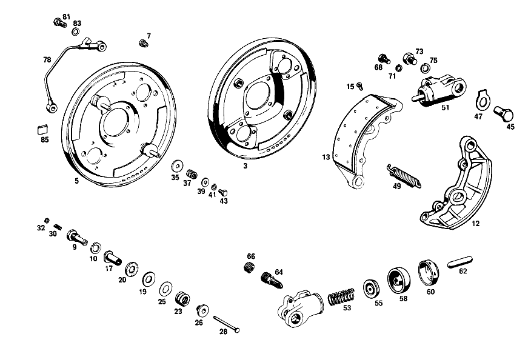

| № | Артикул | Название | Кол. | Примечание | Ограничение |
|---|---|---|---|---|---|
| 3 | A 111 420 02 16 | ПЛАСТИНА ТОРМ. МЕХ-МА | - | Коробка передач [003] 012 UP TO CHASSIS 049855 EXCEPT FOR,SEE FOOTNOTE 54 [054] 048590, 049219, 049222, 049255, 049260, 049472, 049593, 049664, 049680, 049681, 049684, 049702, 049706, 049725, 049734, 049753, 049770, 049779, 049781, 049787, 049789, 049791, 049793- 049795, 049799- 049801, 049803- 049805, 049807- 049824, 049826- 049837, 049839- 049843, 049845- 049849, 049851- 049854. | |
| 5 | A 121 420 00 16 | ПЛАСТИНА ТОРМ. МЕХ-МА | 1 | СЛЕВА [004] 012 FROM CHASSIS 049856 ALSO INSTALLED ON,SEE FOOTNOTE 54 [054] 048590, 049219, 049222, 049255, 049260, 049472, 049593, 049664, 049680, 049681, 049684, 049702, 049706, 049725, 049734, 049753, 049770, 049779, 049781, 049787, 049789, 049791, 049793- 049795, 049799- 049801, 049803- 049805, 049807- 049824, 049826- 049837, 049839- 049843, 049845- 049849, 049851- 049854. | |
| 7 | A 111 997 00 86 | ЗАГЛУШКА | 4 | ||
| 9 | A 180 421 06 71 | БОЛТ | 4 | для AUTOMATIC BRAKE ADJUSTMENT Коробка передач [003] 012 UP TO CHASSIS 049855 EXCEPT FOR,SEE FOOTNOTE 54 [054] 048590, 049219, 049222, 049255, 049260, 049472, 049593, 049664, 049680, 049681, 049684, 049702, 049706, 049725, 049734, 049753, 049770, 049779, 049781, 049787, 049789, 049791, 049793- 049795, 049799- 049801, 049803- 049805, 049807- 049824, 049826- 049837, 049839- 049843, 049845- 049849, 049851- 049854. | |
| 10 | N 912004 014100 | Пружинное кольцо | 4 | PINS TO BRAKE ANCHOR PLATES Коробка передач [003] 012 UP TO CHASSIS 049855 EXCEPT FOR,SEE FOOTNOTE 54 [054] 048590, 049219, 049222, 049255, 049260, 049472, 049593, 049664, 049680, 049681, 049684, 049702, 049706, 049725, 049734, 049753, 049770, 049779, 049781, 049787, 049789, 049791, 049793- 049795, 049799- 049801, 049803- 049805, 049807- 049824, 049826- 049837, 049839- 049843, 049845- 049849, 049851- 049854. | |
| 12 | A 110 420 11 20 | ТОРМОЗН. КОЛОДКА | - | ||
| 12 | A 110 420 25 20 | ТОРМОЗН. КОЛОДКА | 4 | с BONDED BRAKE LINING | |
| 13 | A 180 421 07 10 | ТОРМ. КОЛОДКА | - | ||
| 13 | A 180 421 10 10 | ТОРМ. КОЛОДКА | 4 | с WIRE CORE TO BE RIVETED TO 180 420 09 20 BRAKE SHOES | |
| 15 | A 183 990 02 95 | ЗАКЛЕПКА | 40 | TO BE RIVETED TO 180 420 09 20 BRAKE SHOES | |
| 17 | A 180 421 01 37 | ВТУЛКА РЕГУЛИРОВОЧНАЯ | 4 | для AUTOMATIC BRAKE ADJUSTMENT AT BRAKE SHOES Коробка передач [003] 012 UP TO CHASSIS 049855 EXCEPT FOR,SEE FOOTNOTE 54 [054] 048590, 049219, 049222, 049255, 049260, 049472, 049593, 049664, 049680, 049681, 049684, 049702, 049706, 049725, 049734, 049753, 049770, 049779, 049781, 049787, 049789, 049791, 049793- 049795, 049799- 049801, 049803- 049805, 049807- 049824, 049826- 049837, 049839- 049843, 049845- 049849, 049851- 049854. | |
| 19 | A 180 990 24 40 | Диск | 8 | для AUTOMATIC BRAKE ADJUSTMENT AT BRAKE SHOES Коробка передач [003] 012 UP TO CHASSIS 049855 EXCEPT FOR,SEE FOOTNOTE 54 [054] 048590, 049219, 049222, 049255, 049260, 049472, 049593, 049664, 049680, 049681, 049684, 049702, 049706, 049725, 049734, 049753, 049770, 049779, 049781, 049787, 049789, 049791, 049793- 049795, 049799- 049801, 049803- 049805, 049807- 049824, 049826- 049837, 049839- 049843, 049845- 049849, 049851- 049854. | |
| 20 | A 180 421 00 32 | ФРИКЦ.ШАЙБА | - | Коробка передач | |
| 20 | A 180 421 01 32 | ФРИКЦ.ШАЙБА | 8 | для AUTOMATIC BRAKE ADJUSTMENT AT BRAKE SHOES Коробка передач [003] 012 UP TO CHASSIS 049855 EXCEPT FOR,SEE FOOTNOTE 54 [054] 048590, 049219, 049222, 049255, 049260, 049472, 049593, 049664, 049680, 049681, 049684, 049702, 049706, 049725, 049734, 049753, 049770, 049779, 049781, 049787, 049789, 049791, 049793- 049795, 049799- 049801, 049803- 049805, 049807- 049824, 049826- 049837, 049839- 049843, 049845- 049849, 049851- 049854. | |
| 23 | A 194 993 00 01 | ПРУЖИНА | 4 | для AUTOMATIC BRAKE ADJUSTMENT AT BRAKE SHOES Коробка передач [003] 012 UP TO CHASSIS 049855 EXCEPT FOR,SEE FOOTNOTE 54 [054] 048590, 049219, 049222, 049255, 049260, 049472, 049593, 049664, 049680, 049681, 049684, 049702, 049706, 049725, 049734, 049753, 049770, 049779, 049781, 049787, 049789, 049791, 049793- 049795, 049799- 049801, 049803- 049805, 049807- 049824, 049826- 049837, 049839- 049843, 049845- 049849, 049851- 049854. | |
| 25 | A 180 990 13 40 | ШАЙБА | NB | для AUTOMATIC BRAKE ADJUSTMENT AT BRAKE SHOES Коробка передач [003] 012 UP TO CHASSIS 049855 EXCEPT FOR,SEE FOOTNOTE 54 [054] 048590, 049219, 049222, 049255, 049260, 049472, 049593, 049664, 049680, 049681, 049684, 049702, 049706, 049725, 049734, 049753, 049770, 049779, 049781, 049787, 049789, 049791, 049793- 049795, 049799- 049801, 049803- 049805, 049807- 049824, 049826- 049837, 049839- 049843, 049845- 049849, 049851- 049854. | |
| 26 | A 180 421 03 71 | БОЛТ | 4 | для AUTOMATIC BRAKE ADJUSTMENT AT BRAKE SHOES Коробка передач [003] 012 UP TO CHASSIS 049855 EXCEPT FOR,SEE FOOTNOTE 54 [054] 048590, 049219, 049222, 049255, 049260, 049472, 049593, 049664, 049680, 049681, 049684, 049702, 049706, 049725, 049734, 049753, 049770, 049779, 049781, 049787, 049789, 049791, 049793- 049795, 049799- 049801, 049803- 049805, 049807- 049824, 049826- 049837, 049839- 049843, 049845- 049849, 049851- 049854. | |
| 28 | A 180 421 00 74 | БОЛТ | 4 | для AUTOMATIC BRAKE ADJUSTMENT AT BRAKE SHOES Коробка передач [003] 012 UP TO CHASSIS 049855 EXCEPT FOR,SEE FOOTNOTE 54 [054] 048590, 049219, 049222, 049255, 049260, 049472, 049593, 049664, 049680, 049681, 049684, 049702, 049706, 049725, 049734, 049753, 049770, 049779, 049781, 049787, 049789, 049791, 049793- 049795, 049799- 049801, 049803- 049805, 049807- 049824, 049826- 049837, 049839- 049843, 049845- 049849, 049851- 049854. | |
| 30 | A 180 993 23 01 | ПРУЖИНА | 4 | GUIDE PINS TO BRAKE ANCHOR PLATES Коробка передач [003] 012 UP TO CHASSIS 049855 EXCEPT FOR,SEE FOOTNOTE 54 [054] 048590, 049219, 049222, 049255, 049260, 049472, 049593, 049664, 049680, 049681, 049684, 049702, 049706, 049725, 049734, 049753, 049770, 049779, 049781, 049787, 049789, 049791, 049793- 049795, 049799- 049801, 049803- 049805, 049807- 049824, 049826- 049837, 049839- 049843, 049845- 049849, 049851- 049854. | |
| 32 | N 000125 005300 | ШАЙБА | 4 | GUIDE PINS TO BRAKE ANCHOR PLATES Коробка передач [003] 012 UP TO CHASSIS 049855 EXCEPT FOR,SEE FOOTNOTE 54 [054] 048590, 049219, 049222, 049255, 049260, 049472, 049593, 049664, 049680, 049681, 049684, 049702, 049706, 049725, 049734, 049753, 049770, 049779, 049781, 049787, 049789, 049791, 049793- 049795, 049799- 049801, 049803- 049805, 049807- 049824, 049826- 049837, 049839- 049843, 049845- 049849, 049851- 049854. | |
| 35 | A 110 990 05 40 | ШАЙБА | 4 | BRAKE SHOES TO ADJUSTING PINS [004] 012 FROM CHASSIS 049856 ALSO INSTALLED ON,SEE FOOTNOTE 54 [054] 048590, 049219, 049222, 049255, 049260, 049472, 049593, 049664, 049680, 049681, 049684, 049702, 049706, 049725, 049734, 049753, 049770, 049779, 049781, 049787, 049789, 049791, 049793- 049795, 049799- 049801, 049803- 049805, 049807- 049824, 049826- 049837, 049839- 049843, 049845- 049849, 049851- 049854. | |
| 37 | A 180 993 18 01 | ПРУЖИНА | 4 | BRAKE SHOES TO ADJUSTING PINS [004] 012 FROM CHASSIS 049856 ALSO INSTALLED ON,SEE FOOTNOTE 54 [054] 048590, 049219, 049222, 049255, 049260, 049472, 049593, 049664, 049680, 049681, 049684, 049702, 049706, 049725, 049734, 049753, 049770, 049779, 049781, 049787, 049789, 049791, 049793- 049795, 049799- 049801, 049803- 049805, 049807- 049824, 049826- 049837, 049839- 049843, 049845- 049849, 049851- 049854. | |
| 39 | N 009021 005100 | Шайба | 4 | BRAKE SHOES TO ADJUSTING PINS [004] 012 FROM CHASSIS 049856 ALSO INSTALLED ON,SEE FOOTNOTE 54 [054] 048590, 049219, 049222, 049255, 049260, 049472, 049593, 049664, 049680, 049681, 049684, 049702, 049706, 049725, 049734, 049753, 049770, 049779, 049781, 049787, 049789, 049791, 049793- 049795, 049799- 049801, 049803- 049805, 049807- 049824, 049826- 049837, 049839- 049843, 049845- 049849, 049851- 049854. | |
| 43 | N 000127 005200 | КОЛЬЦО ПРУЖИННОЕ | 4 | BRAKE SHOES TO ADJUSTING PINS [004] 012 FROM CHASSIS 049856 ALSO INSTALLED ON,SEE FOOTNOTE 54 [054] 048590, 049219, 049222, 049255, 049260, 049472, 049593, 049664, 049680, 049681, 049684, 049702, 049706, 049725, 049734, 049753, 049770, 049779, 049781, 049787, 049789, 049791, 049793- 049795, 049799- 049801, 049803- 049805, 049807- 049824, 049826- 049837, 049839- 049843, 049845- 049849, 049851- 049854. | |
| 45 | A 110 421 02 18 | БОЛТ | 4 | [006] 010 FROM CHASSIS 000014;012 FROM CHASSIS 000029 | |
| 47 | A 110 994 01 16 | ПРЕДОХРАНИТЕЛЬ | 4 | [006] 010 FROM CHASSIS 000014;012 FROM CHASSIS 000029 | |
| 49 | A 180 993 25 10 | ПРУЖИНА | 4 | ||
| 51 | A 001 420 33 18 | ЦИЛИНДР КОЛЁСНЫЙ | 2 | СЛЕВА [006] 010 FROM CHASSIS 000014;012 FROM CHASSIS 000029 | |
| 53 | A 000 421 10 90 | - ПРУЖИНА | 4 | ||
| 55 | A 000 421 14 89 | - НАПОЛНИТ. ЭЛЕМЕНТ | 4 | ||
| 58 | A 000 421 10 87 | - КОЛПАЧОК | 4 | [402] БОЛЬШЕ НЕ ПОСТАВЛЯЕТСЯ | |
| 60 | A 000 421 16 87 | - КОЛПАЧОК | 4 | ||
| 62 | A 000 421 09 88 | - ПАЛЕЦ НАЖИМНОЙ | 4 | ||
| 64 | A 000 420 08 55 | Клапан выпуска воздуха | 4 | ||
| 66 | A 000 421 71 87 | - КОЛПАЧОК | - | ||
| 66 | A 000 421 08 87 | - Защитный колпачок | 4 | ||
| 68 | N 000933 008131 | Винт | - | ||
| 68 | N 304017 008016 | Винт с 6-гранной головкой | 12 | WHEEL CYLINDERS TO BRAKE ANCHOR PLATES; M8X16 | |
| 71 | N 912004 008102 | Пружинное кольцо | 12 | WHEEL CYLINDERS TO BRAKE ANCHOR PLATES | |
| 73 | N 000961 012034 | Винт | 4 | WHEEL CYLINDERS TO BRAKE ANCHOR PLATES [006] 010 FROM CHASSIS 000014;012 FROM CHASSIS 000029 | |
| 75 | N 912004 012100 | Пружинное кольцо | 4 | WHEEL CYLINDERS TO BRAKE ANCHOR PLATES | |
| 78 | A 111 420 23 28 | ПРОВОД | 1 | СЛЕВА | |
| 81 | A 000 428 04 26 | ПОЛЫЙ БОЛТ | 4 | BRAKE LINES TO BRAKE ANCHOR PLATES | |
| 83 | A 094 990 84 07 | Уплотнительное кольцо | 8 | BRAKE LINES TO BRAKE ANCHOR PLATES | |
| 85 | A 110 987 00 37 | ФИТИНГ | 2 | BRAKE LINES TO BRAKE ANCHOR PLATES | |
| 88 | A 001 421 81 98 | Тормозной суппорт | 1 | LEFT "TEVES" LESS LINING | |
| 91 | A 001 421 82 98 | Тормозной суппорт | 1 | RIGHT,MAKE TEVES,LESS LINING | |
| 93 | A 000 421 08 74 | - БОЛТ | 4 | ||
| 96 | A 000 421 05 73 | - предохранитель | 4 | ||
| 98 | A 000 421 00 20 | - ЗАЩИТНАЯ ПАНЕЛЬ | 2 | СНАРУЖИ | |
| 99 | A 000 421 01 20 | - ЗАЩИТНАЯ ПАНЕЛЬ | 2 | ВНУТР. | |
| 101 | A 000 428 08 01 | - ПРОВОД | 1 | СЛЕВА [007] 012 UP TO CHASSIS 094381 ALSO INSTALLED ON 103498-103884 | |
| 103 | A 000 428 09 01 | - ПРОВОД | 1 | СПРАВА [007] 012 UP TO CHASSIS 094381 ALSO INSTALLED ON 103498-103884 | |
| 106 | A 000 421 14 65 | - КЛАПАН ВЕНТИЛЯЦИИ | 2 | с METRIC THREAD 10X1 MM [402] БОЛЬШЕ НЕ ПОСТАВЛЯЕТСЯ | |
| 108 | A 000 421 71 87 | - КОЛПАЧОК | - | ||
| 108 | A 000 421 08 87 | - Защитный колпачок | 2 | ||
| 111 | A 111 421 03 71 | болт | 4 | CALIPERS TO RETAINING PLATES | |
| 113 | A 112 421 14 52 | РАСПОРНАЯ ШАЙБА | 4 | ПО НЕОБХОДИМОСТИ 0.50 MM | |
| 116 | A 115 994 07 32 | Стопорная шайба | 2 | CALIPERS TO RETAINING PLATES | |
| 119 | A 111 420 04 44 | ЗАЩИТНАЯ ПАНЕЛЬ | 1 | СЛЕВА [052] NOT FOR USE WITH MERCEDES-BENZ HYDRAULIC-AUTOMATIC CLUTCH [010] 010 FROM CHASSIS 059918;012 FROM CHASSIS 132018 | |
| 121 | A 111 420 05 44 | ЗАЩИТНАЯ ПАНЕЛЬ | 1 | СПРАВА [052] NOT FOR USE WITH MERCEDES-BENZ HYDRAULIC-AUTOMATIC CLUTCH [010] 010 FROM CHASSIS 059918;012 FROM CHASSIS 132018 | |
| 123 | N 000912 006024 | Цилиндрич. винт | 4 | [008] 012 UP TO CHASSIS 094382 EXCEPT FOR 103498-103884 [052] NOT FOR USE WITH MERCEDES-BENZ HYDRAULIC-AUTOMATIC CLUTCH | |
| 125 | N 007980 006000 | Пружинное кольцо | 4 | ||
| 128 | A 111 420 62 28 | ПРОВОД | 1 | [008] 012 UP TO CHASSIS 094382 EXCEPT FOR 103498-103884 [052] NOT FOR USE WITH MERCEDES-BENZ HYDRAULIC-AUTOMATIC CLUTCH | |
| 131 | A 111 420 63 28 | ПРОВОД | 1 | [008] 012 UP TO CHASSIS 094382 EXCEPT FOR 103498-103884 [052] NOT FOR USE WITH MERCEDES-BENZ HYDRAULIC-AUTOMATIC CLUTCH | |
| 133 | N 000912 006024 | Цилиндрич. винт | 4 | [007] 012 UP TO CHASSIS 094381 ALSO INSTALLED ON 103498-103884 [052] NOT FOR USE WITH MERCEDES-BENZ HYDRAULIC-AUTOMATIC CLUTCH | |
| 133 | N 000912 006024 | Цилиндрич. винт | 2 | [008] 012 UP TO CHASSIS 094382 EXCEPT FOR 103498-103884 [052] NOT FOR USE WITH MERCEDES-BENZ HYDRAULIC-AUTOMATIC CLUTCH | |
| 135 | N 007980 006000 | Пружинное кольцо | 4 | ||
| 136 | A 112 428 00 81 | ВСТАВКА РЕЗИНОВАЯ | 2 | PROTECTION AGAINST SCORING,для BRAKE LINES [007] 012 UP TO CHASSIS 094381 ALSO INSTALLED ON 103498-103884 [052] NOT FOR USE WITH MERCEDES-BENZ HYDRAULIC-AUTOMATIC CLUTCH | |
| 139 | A 112 420 12 17 | ПЛАСТИНА ТОРМ. МЕХ-МА | 1 | СЛЕВА Коробка передач [003] 012 UP TO CHASSIS 049855 EXCEPT FOR,SEE FOOTNOTE 54 [054] 048590, 049219, 049222, 049255, 049260, 049472, 049593, 049664, 049680, 049681, 049684, 049702, 049706, 049725, 049734, 049753, 049770, 049779, 049781, 049787, 049789, 049791, 049793- 049795, 049799- 049801, 049803- 049805, 049807- 049824, 049826- 049837, 049839- 049843, 049845- 049849, 049851- 049854. [402] БОЛЬШЕ НЕ ПОСТАВЛЯЕТСЯ | |
| 141 | A 110 420 26 17 | ПЛАСТИНА ТОРМ. МЕХ-МА | 1 | Коробка передач [004] 012 FROM CHASSIS 049856 ALSO INSTALLED ON,SEE FOOTNOTE 54 [054] 048590, 049219, 049222, 049255, 049260, 049472, 049593, 049664, 049680, 049681, 049684, 049702, 049706, 049725, 049734, 049753, 049770, 049779, 049781, 049787, 049789, 049791, 049793- 049795, 049799- 049801, 049803- 049805, 049807- 049824, 049826- 049837, 049839- 049843, 049845- 049849, 049851- 049854. | |
| 141 | A 110 420 26 17 | ПЛАСТИНА ТОРМ. МЕХ-МА | 1 | [014] 012 UP TO CHASSIS 070637 | |
| 143 | A 110 420 30 17 | ПЛАСТИНА ТОРМ. МЕХ-МА | 1 | СЛЕВА [013] 010 FROM CHASSIS 033405 [015] 012 FROM CHASSIS 070638 | |
| 146 | A 110 423 01 18 | БОЛТ КРЫШКИ ПОРДШИПНИКА | 1 | для BRAKE SHOES Коробка передач [003] 012 UP TO CHASSIS 049855 EXCEPT FOR,SEE FOOTNOTE 54 [054] 048590, 049219, 049222, 049255, 049260, 049472, 049593, 049664, 049680, 049681, 049684, 049702, 049706, 049725, 049734, 049753, 049770, 049779, 049781, 049787, 049789, 049791, 049793- 049795, 049799- 049801, 049803- 049805, 049807- 049824, 049826- 049837, 049839- 049843, 049845- 049849, 049851- 049854. | |
| 146 | A 110 423 01 18 | БОЛТ КРЫШКИ ПОРДШИПНИКА | 1 | для BRAKE SHOES [015] 012 FROM CHASSIS 070638 | |
| 150 | A 110 420 19 20 | ТОРМОЗН. КОЛОДКА | 4 | Коробка передач [004] 012 FROM CHASSIS 049856 ALSO INSTALLED ON,SEE FOOTNOTE 54 [054] 048590, 049219, 049222, 049255, 049260, 049472, 049593, 049664, 049680, 049681, 049684, 049702, 049706, 049725, 049734, 049753, 049770, 049779, 049781, 049787, 049789, 049791, 049793- 049795, 049799- 049801, 049803- 049805, 049807- 049824, 049826- 049837, 049839- 049843, 049845- 049849, 049851- 049854. | |
| 150 | A 110 420 19 20 | ТОРМОЗН. КОЛОДКА | 4 | [014] 012 UP TO CHASSIS 070637 | |
| 153 | A 110 420 18 20 | ТОРМОЗН. КОЛОДКА | - | ||
| 153 | A 110 420 27 20 | ТОРМОЗН. КОЛОДКА | 2 | FRONT с BRAKE LINING [013] 010 FROM CHASSIS 033405 [015] 012 FROM CHASSIS 070638 | |
| 155 | A 110 420 17 20 | ТОРМОЗН. КОЛОДКА | - | ||
| 155 | A 110 420 26 20 | ТОРМОЗН. КОЛОДКА | 2 | REAR с BRAKE LINING [013] 010 FROM CHASSIS 033405 [015] 012 FROM CHASSIS 070638 | |
| 157 | A 180 423 05 50 | ВТУЛКА | 4 | для AUTOMATIC BRAKE ADJUSTMENT AT BRAKE SHOES Коробка передач [003] 012 UP TO CHASSIS 049855 EXCEPT FOR,SEE FOOTNOTE 54 [054] 048590, 049219, 049222, 049255, 049260, 049472, 049593, 049664, 049680, 049681, 049684, 049702, 049706, 049725, 049734, 049753, 049770, 049779, 049781, 049787, 049789, 049791, 049793- 049795, 049799- 049801, 049803- 049805, 049807- 049824, 049826- 049837, 049839- 049843, 049845- 049849, 049851- 049854. | |
| 158 | A 180 990 24 40 | Диск | 8 | для AUTOMATIC BRAKE ADJUSTMENT AT BRAKE SHOES Коробка передач [003] 012 UP TO CHASSIS 049855 EXCEPT FOR,SEE FOOTNOTE 54 [054] 048590, 049219, 049222, 049255, 049260, 049472, 049593, 049664, 049680, 049681, 049684, 049702, 049706, 049725, 049734, 049753, 049770, 049779, 049781, 049787, 049789, 049791, 049793- 049795, 049799- 049801, 049803- 049805, 049807- 049824, 049826- 049837, 049839- 049843, 049845- 049849, 049851- 049854. | |
| 160 | A 180 421 00 32 | ФРИКЦ.ШАЙБА | - | Коробка передач | |
| 160 | A 180 421 01 32 | ФРИКЦ.ШАЙБА | 8 | для AUTOMATIC BRAKE ADJUSTMENT AT BRAKE SHOES Коробка передач [003] 012 UP TO CHASSIS 049855 EXCEPT FOR,SEE FOOTNOTE 54 [054] 048590, 049219, 049222, 049255, 049260, 049472, 049593, 049664, 049680, 049681, 049684, 049702, 049706, 049725, 049734, 049753, 049770, 049779, 049781, 049787, 049789, 049791, 049793- 049795, 049799- 049801, 049803- 049805, 049807- 049824, 049826- 049837, 049839- 049843, 049845- 049849, 049851- 049854. | |
| 162 | A 194 993 00 01 | ПРУЖИНА | 4 | для AUTOMATIC BRAKE ADJUSTMENT AT BRAKE SHOES Коробка передач [003] 012 UP TO CHASSIS 049855 EXCEPT FOR,SEE FOOTNOTE 54 [054] 048590, 049219, 049222, 049255, 049260, 049472, 049593, 049664, 049680, 049681, 049684, 049702, 049706, 049725, 049734, 049753, 049770, 049779, 049781, 049787, 049789, 049791, 049793- 049795, 049799- 049801, 049803- 049805, 049807- 049824, 049826- 049837, 049839- 049843, 049845- 049849, 049851- 049854. | |
| 164 | A 180 990 13 40 | ШАЙБА | NB | для AUTOMATIC BRAKE ADJUSTMENT AT BRAKE SHOES Коробка передач | |
| 166 | A 180 421 03 71 | БОЛТ | 4 | для AUTOMATIC BRAKE ADJUSTMENT AT BRAKE SHOES Коробка передач | |
| 168 | A 110 423 04 74 | БОЛТ | 4 | BRAKE SHOES TO BRAKE ANCHOR PLATES Коробка передач [004] 012 FROM CHASSIS 049856 ALSO INSTALLED ON,SEE FOOTNOTE 54 [054] 048590, 049219, 049222, 049255, 049260, 049472, 049593, 049664, 049680, 049681, 049684, 049702, 049706, 049725, 049734, 049753, 049770, 049779, 049781, 049787, 049789, 049791, 049793- 049795, 049799- 049801, 049803- 049805, 049807- 049824, 049826- 049837, 049839- 049843, 049845- 049849, 049851- 049854. [014] 012 UP TO CHASSIS 070637 | |
| 170 | A 110 993 06 30 | ПРУЖИНА | 4 | BRAKE SHOES TO BRAKE ANCHOR PLATES Коробка передач [004] 012 FROM CHASSIS 049856 ALSO INSTALLED ON,SEE FOOTNOTE 54 [054] 048590, 049219, 049222, 049255, 049260, 049472, 049593, 049664, 049680, 049681, 049684, 049702, 049706, 049725, 049734, 049753, 049770, 049779, 049781, 049787, 049789, 049791, 049793- 049795, 049799- 049801, 049803- 049805, 049807- 049824, 049826- 049837, 049839- 049843, 049845- 049849, 049851- 049854. | |
| 170 | A 110 993 06 30 | ПРУЖИНА | 4 | BRAKE SHOES TO BRAKE ANCHOR PLATES [014] 012 UP TO CHASSIS 070637 | |
| 172 | A 110 423 03 77 | ТАРЕЛКА | 4 | BRAKE SHOES TO ADJUSTING PINS [013] 010 FROM CHASSIS 033405 [015] 012 FROM CHASSIS 070638 | |
| 174 | A 110 990 05 40 | ШАЙБА | 4 | BRAKE SHOES TO ADJUSTING PINS [013] 010 FROM CHASSIS 033405 [015] 012 FROM CHASSIS 070638 | |
| 175 | A 120 993 06 01 | ПРУЖИНА | 4 | BRAKE SHOES TO ADJUSTING PINS [013] 010 FROM CHASSIS 033405 [015] 012 FROM CHASSIS 070638 | |
| 177 | N 000433 008406 | Шайба | 4 | BRAKE SHOES TO ADJUSTING PINS [013] 010 FROM CHASSIS 033405 [015] 012 FROM CHASSIS 070638 | |
| 181 | A 110 993 09 10 | ПРУЖИНА | 2 | для BRAKE SHOES Коробка передач [004] 012 FROM CHASSIS 049856 ALSO INSTALLED ON,SEE FOOTNOTE 54 [054] 048590, 049219, 049222, 049255, 049260, 049472, 049593, 049664, 049680, 049681, 049684, 049702, 049706, 049725, 049734, 049753, 049770, 049779, 049781, 049787, 049789, 049791, 049793- 049795, 049799- 049801, 049803- 049805, 049807- 049824, 049826- 049837, 049839- 049843, 049845- 049849, 049851- 049854. | |
| 181 | A 110 993 09 10 | ПРУЖИНА | 2 | для BRAKE SHOES [014] 012 UP TO CHASSIS 070637 | |
| 183 | A 110 993 12 10 | ПРУЖИНА | 2 | для BRAKE SHOES [015] 012 FROM CHASSIS 070638 | |
| 185 | A 136 423 00 92 | ПРУЖИНА | 2 | Коробка передач [003] 012 UP TO CHASSIS 049855 EXCEPT FOR,SEE FOOTNOTE 54 [054] 048590, 049219, 049222, 049255, 049260, 049472, 049593, 049664, 049680, 049681, 049684, 049702, 049706, 049725, 049734, 049753, 049770, 049779, 049781, 049787, 049789, 049791, 049793- 049795, 049799- 049801, 049803- 049805, 049807- 049824, 049826- 049837, 049839- 049843, 049845- 049849, 049851- 049854. | |
| 185 | A 136 423 00 92 | ПРУЖИНА | 2 | [015] 012 FROM CHASSIS 070638 | |
| 187 | A 110 993 06 20 | ПРУЖИНА | 2 | Коробка передач [004] 012 FROM CHASSIS 049856 ALSO INSTALLED ON,SEE FOOTNOTE 54 [054] 048590, 049219, 049222, 049255, 049260, 049472, 049593, 049664, 049680, 049681, 049684, 049702, 049706, 049725, 049734, 049753, 049770, 049779, 049781, 049787, 049789, 049791, 049793- 049795, 049799- 049801, 049803- 049805, 049807- 049824, 049826- 049837, 049839- 049843, 049845- 049849, 049851- 049854. | |
| 187 | A 110 993 06 20 | ПРУЖИНА | 2 | [014] 012 UP TO CHASSIS 070637 | |
| 188 | A 121 993 03 10 | ПРУЖИНА | 2 | Коробка передач [004] 012 FROM CHASSIS 049856 ALSO INSTALLED ON,SEE FOOTNOTE 54 [054] 048590, 049219, 049222, 049255, 049260, 049472, 049593, 049664, 049680, 049681, 049684, 049702, 049706, 049725, 049734, 049753, 049770, 049779, 049781, 049787, 049789, 049791, 049793- 049795, 049799- 049801, 049803- 049805, 049807- 049824, 049826- 049837, 049839- 049843, 049845- 049849, 049851- 049854. | |
| 188 | A 121 993 03 10 | ПРУЖИНА | 2 | [014] 012 UP TO CHASSIS 070637 | |
| 190 | A 110 423 01 87 | КОЛПАЧОК | 2 | IN BRAKE ANCHOR PLATES Коробка передач [004] 012 FROM CHASSIS 049856 ALSO INSTALLED ON,SEE FOOTNOTE 54 [054] 048590, 049219, 049222, 049255, 049260, 049472, 049593, 049664, 049680, 049681, 049684, 049702, 049706, 049725, 049734, 049753, 049770, 049779, 049781, 049787, 049789, 049791, 049793- 049795, 049799- 049801, 049803- 049805, 049807- 049824, 049826- 049837, 049839- 049843, 049845- 049849, 049851- 049854. | |
| 190 | A 110 423 01 87 | КОЛПАЧОК | 2 | IN BRAKE ANCHOR PLATES [014] 012 UP TO CHASSIS 070637 | |
| 194 | A 002 420 49 18 | ЦИЛИНДР КОЛЁСНЫЙ | 2 | [015] 012 FROM CHASSIS 070638 [002] 010,10/50,12/52 FROM CHASSIS 048977 ALSO INSTALLED ON,SEE FOOTNOTE 53;010,20/60,22/62 FROM CHASSIS 049091 ALSO INSTALLED ON 046334,048382,048491 [053] 046394, 048273, 048278, 048347, 048349, 048366, 048379, 048460, 048481, 048493, 048510, 048905- 048913, 048915- 048928, 048930- 048933, 048935- 048937, 048940, 048942, 048952- 048954, 048956, 048966, 048968- 048973. | |
| 196 | A 000 421 15 87 | - КОЛПАЧОК | - | ||
| 196 | A 000 421 03 48 | - КОЛПАЧОК | 4 | [015] 012 FROM CHASSIS 070638 [002] 010,10/50,12/52 FROM CHASSIS 048977 ALSO INSTALLED ON,SEE FOOTNOTE 53;010,20/60,22/62 FROM CHASSIS 049091 ALSO INSTALLED ON 046334,048382,048491 [053] 046394, 048273, 048278, 048347, 048349, 048366, 048379, 048460, 048481, 048493, 048510, 048905- 048913, 048915- 048928, 048930- 048933, 048935- 048937, 048940, 048942, 048952- 048954, 048956, 048966, 048968- 048973. | |
| 198 | A 000 420 08 55 | - Клапан выпуска воздуха | 2 | ||
| 199 | A 000 421 71 87 | - КОЛПАЧОК | - | ||
| 199 | A 000 421 08 87 | - Защитный колпачок | 2 | ||
| 201 | A 180 421 02 88 | ПАЛЕЦ НАЖИМНОЙ | 4 | ЦИЛИНДР КОЛЁСНЫЙ Коробка передач [003] 012 UP TO CHASSIS 049855 EXCEPT FOR,SEE FOOTNOTE 54 [054] 048590, 049219, 049222, 049255, 049260, 049472, 049593, 049664, 049680, 049681, 049684, 049702, 049706, 049725, 049734, 049753, 049770, 049779, 049781, 049787, 049789, 049791, 049793- 049795, 049799- 049801, 049803- 049805, 049807- 049824, 049826- 049837, 049839- 049843, 049845- 049849, 049851- 049854. | |
| 203 | A 000 993 11 26 | ПРУЖИНА ДИСКОВАЯ | 16 | ЦИЛИНДР КОЛЁСНЫЙ Коробка передач [003] 012 UP TO CHASSIS 049855 EXCEPT FOR,SEE FOOTNOTE 54 [054] 048590, 049219, 049222, 049255, 049260, 049472, 049593, 049664, 049680, 049681, 049684, 049702, 049706, 049725, 049734, 049753, 049770, 049779, 049781, 049787, 049789, 049791, 049793- 049795, 049799- 049801, 049803- 049805, 049807- 049824, 049826- 049837, 049839- 049843, 049845- 049849, 049851- 049854. | |
| 205 | A 180 421 03 88 | ПАЛЕЦ НАЖИМНОЙ | 4 | ЦИЛИНДР КОЛЁСНЫЙ Коробка передач [003] 012 UP TO CHASSIS 049855 EXCEPT FOR,SEE FOOTNOTE 54 [054] 048590, 049219, 049222, 049255, 049260, 049472, 049593, 049664, 049680, 049681, 049684, 049702, 049706, 049725, 049734, 049753, 049770, 049779, 049781, 049787, 049789, 049791, 049793- 049795, 049799- 049801, 049803- 049805, 049807- 049824, 049826- 049837, 049839- 049843, 049845- 049849, 049851- 049854. | |
| 207 | A 000 421 09 88 | ПАЛЕЦ НАЖИМНОЙ | 4 | Коробка передач [004] 012 FROM CHASSIS 049856 ALSO INSTALLED ON,SEE FOOTNOTE 54 [054] 048590, 049219, 049222, 049255, 049260, 049472, 049593, 049664, 049680, 049681, 049684, 049702, 049706, 049725, 049734, 049753, 049770, 049779, 049781, 049787, 049789, 049791, 049793- 049795, 049799- 049801, 049803- 049805, 049807- 049824, 049826- 049837, 049839- 049843, 049845- 049849, 049851- 049854. | |
| 207 | A 000 421 09 88 | ПАЛЕЦ НАЖИМНОЙ | 4 | [014] 012 UP TO CHASSIS 070637 | |
| 209 | A 000 421 04 88 | ПАЛЕЦ НАЖИМНОЙ | 4 | [015] 012 FROM CHASSIS 070638 | |
| 211 | N 000933 018106 | БОЛТ | 4 | ЦИЛ.КОЛЕСА НА ПАНЕЛИ ТОРМОЗ.АГРЕГ. | |
| 213 | N 000127 008203 | Пружинное кольцо | 4 | ЦИЛ.КОЛЕСА НА ПАНЕЛИ ТОРМОЗ.АГРЕГ. | |
| 215 | A 112 423 02 74 | БОЛТ | 4 | BRAKE SHOE TO BRAKE ANCHOR PLATE Коробка передач [003] 012 UP TO CHASSIS 049855 EXCEPT FOR,SEE FOOTNOTE 54 [054] 048590, 049219, 049222, 049255, 049260, 049472, 049593, 049664, 049680, 049681, 049684, 049702, 049706, 049725, 049734, 049753, 049770, 049779, 049781, 049787, 049789, 049791, 049793- 049795, 049799- 049801, 049803- 049805, 049807- 049824, 049826- 049837, 049839- 049843, 049845- 049849, 049851- 049854. | |
| 216 | A 112 993 43 01 | ПРУЖИНА | 4 | BRAKE SHOE TO BRAKE ANCHOR PLATE Коробка передач [003] 012 UP TO CHASSIS 049855 EXCEPT FOR,SEE FOOTNOTE 54 [054] 048590, 049219, 049222, 049255, 049260, 049472, 049593, 049664, 049680, 049681, 049684, 049702, 049706, 049725, 049734, 049753, 049770, 049779, 049781, 049787, 049789, 049791, 049793- 049795, 049799- 049801, 049803- 049805, 049807- 049824, 049826- 049837, 049839- 049843, 049845- 049849, 049851- 049854. | |
| 218 | N 009021 005100 | Шайба | 4 | BRAKE SHOE TO BRAKE ANCHOR PLATE Коробка передач [003] 012 UP TO CHASSIS 049855 EXCEPT FOR,SEE FOOTNOTE 54 [054] 048590, 049219, 049222, 049255, 049260, 049472, 049593, 049664, 049680, 049681, 049684, 049702, 049706, 049725, 049734, 049753, 049770, 049779, 049781, 049787, 049789, 049791, 049793- 049795, 049799- 049801, 049803- 049805, 049807- 049824, 049826- 049837, 049839- 049843, 049845- 049849, 049851- 049854. | |
| 221 | A 110 420 13 42 | РЫЧАГ ТОРМОЗА | 1 | LEFT HAND BRAKE Коробка передач [003] 012 UP TO CHASSIS 049855 EXCEPT FOR,SEE FOOTNOTE 54 [054] 048590, 049219, 049222, 049255, 049260, 049472, 049593, 049664, 049680, 049681, 049684, 049702, 049706, 049725, 049734, 049753, 049770, 049779, 049781, 049787, 049789, 049791, 049793- 049795, 049799- 049801, 049803- 049805, 049807- 049824, 049826- 049837, 049839- 049843, 049845- 049849, 049851- 049854. | |
| 221 | A 110 420 13 42 | РЫЧАГ ТОРМОЗА | 1 | LEFT HAND BRAKE [015] 012 FROM CHASSIS 070638 | |
| 223 | A 110 420 09 42 | РЫЧАГ ТОРМОЗА | 1 | LEFT HAND BRAKE Коробка передач [004] 012 FROM CHASSIS 049856 ALSO INSTALLED ON,SEE FOOTNOTE 54 [054] 048590, 049219, 049222, 049255, 049260, 049472, 049593, 049664, 049680, 049681, 049684, 049702, 049706, 049725, 049734, 049753, 049770, 049779, 049781, 049787, 049789, 049791, 049793- 049795, 049799- 049801, 049803- 049805, 049807- 049824, 049826- 049837, 049839- 049843, 049845- 049849, 049851- 049854. | |
| 223 | A 110 420 09 42 | РЫЧАГ ТОРМОЗА | 1 | LEFT HAND BRAKE [014] 012 UP TO CHASSIS 070637 | |
| 226 | A 110 420 00 74 | ТЯГА | 2 | Коробка передач [004] 012 FROM CHASSIS 049856 ALSO INSTALLED ON,SEE FOOTNOTE 54 [054] 048590, 049219, 049222, 049255, 049260, 049472, 049593, 049664, 049680, 049681, 049684, 049702, 049706, 049725, 049734, 049753, 049770, 049779, 049781, 049787, 049789, 049791, 049793- 049795, 049799- 049801, 049803- 049805, 049807- 049824, 049826- 049837, 049839- 049843, 049845- 049849, 049851- 049854. [014] 012 UP TO CHASSIS 070637 | |
| 228 | A 001 997 34 46 | Уплотнительное кольцо | 2 | ПЛАСТИНА ТОРМОЗНОГО ЩИТА К ЧУЛКУ КАРТЕРА МОСТА | |
| 229 | A 110 423 00 79 | уплотнение | 2 | ПЛАСТИНА ТОРМОЗНОГО ЩИТА К ЧУЛКУ КАРТЕРА МОСТА | |
| 231 | A 001 997 47 46 | Уплотнительное кольцо | 2 | ПЛАСТИНА ТОРМОЗНОГО ЩИТА К ЧУЛКУ КАРТЕРА МОСТА | |
| 233 | A 108 357 00 71 | Болт призонный | 12 | ПЛАСТИНА ТОРМОЗНОГО ЩИТА К ЧУЛКУ КАРТЕРА МОСТА | |
| 235 | N 000127 008203 | Пружинное кольцо | 12 | ПЛАСТИНА ТОРМОЗНОГО ЩИТА К ЧУЛКУ КАРТЕРА МОСТА | |
| 237 | N 000934 008010 | Гайка | - | ||
| 237 | N 304032 008006 | Шестигранная гайка | 12 | ПЛАСТИНА ТОРМОЗНОГО ЩИТА К ЧУЛКУ КАРТЕРА МОСТА; M8 | |
| 239 | A 110 993 04 01 | пружина | 2 | BRAKE SHOE TO SUPPORTING TUBE Коробка передач [003] 012 UP TO CHASSIS 049855 EXCEPT FOR,SEE FOOTNOTE 54 [054] 048590, 049219, 049222, 049255, 049260, 049472, 049593, 049664, 049680, 049681, 049684, 049702, 049706, 049725, 049734, 049753, 049770, 049779, 049781, 049787, 049789, 049791, 049793- 049795, 049799- 049801, 049803- 049805, 049807- 049824, 049826- 049837, 049839- 049843, 049845- 049849, 049851- 049854. | |
| 239 | A 110 993 04 01 | пружина | 2 | BRAKE SHOE TO SUPPORTING TUBE [015] 012 FROM CHASSIS 070638 | |
| 241 | A 120 990 06 40 | ШАЙБА | 2 | BRAKE SHOE TO SUPPORTING TUBE Коробка передач [003] 012 UP TO CHASSIS 049855 EXCEPT FOR,SEE FOOTNOTE 54 [054] 048590, 049219, 049222, 049255, 049260, 049472, 049593, 049664, 049680, 049681, 049684, 049702, 049706, 049725, 049734, 049753, 049770, 049779, 049781, 049787, 049789, 049791, 049793- 049795, 049799- 049801, 049803- 049805, 049807- 049824, 049826- 049837, 049839- 049843, 049845- 049849, 049851- 049854. | |
| 241 | A 120 990 06 40 | ШАЙБА | 2 | BRAKE SHOE TO SUPPORTING TUBE [015] 012 FROM CHASSIS 070638 | |
| 243 | A 120 423 01 56 | КОЛЬЦО | 2 | BRAKE SHOE TO SUPPORTING TUBE Коробка передач [003] 012 UP TO CHASSIS 049855 EXCEPT FOR,SEE FOOTNOTE 54 [054] 048590, 049219, 049222, 049255, 049260, 049472, 049593, 049664, 049680, 049681, 049684, 049702, 049706, 049725, 049734, 049753, 049770, 049779, 049781, 049787, 049789, 049791, 049793- 049795, 049799- 049801, 049803- 049805, 049807- 049824, 049826- 049837, 049839- 049843, 049845- 049849, 049851- 049854. | |
| 243 | A 120 423 01 56 | КОЛЬЦО | 2 | BRAKE SHOE TO SUPPORTING TUBE [015] 012 FROM CHASSIS 070638 | |
| 244 | A 120 990 07 40 | ШАЙБА | 2 | BRAKE SHOE TO SUPPORTING TUBE Коробка передач [003] 012 UP TO CHASSIS 049855 EXCEPT FOR,SEE FOOTNOTE 54 [054] 048590, 049219, 049222, 049255, 049260, 049472, 049593, 049664, 049680, 049681, 049684, 049702, 049706, 049725, 049734, 049753, 049770, 049779, 049781, 049787, 049789, 049791, 049793- 049795, 049799- 049801, 049803- 049805, 049807- 049824, 049826- 049837, 049839- 049843, 049845- 049849, 049851- 049854. | |
| 244 | A 120 990 07 40 | ШАЙБА | 2 | BRAKE SHOE TO SUPPORTING TUBE [015] 012 FROM CHASSIS 070638 | |
| 246 | N 304017 008016 | Винт с 6-гранной головкой | 2 | BRAKE SHOE TO SUPPORTING TUBE; M8X16 Коробка передач [003] 012 UP TO CHASSIS 049855 EXCEPT FOR,SEE FOOTNOTE 54 [054] 048590, 049219, 049222, 049255, 049260, 049472, 049593, 049664, 049680, 049681, 049684, 049702, 049706, 049725, 049734, 049753, 049770, 049779, 049781, 049787, 049789, 049791, 049793- 049795, 049799- 049801, 049803- 049805, 049807- 049824, 049826- 049837, 049839- 049843, 049845- 049849, 049851- 049854. | |
| 246 | N 304017 008016 | Винт с 6-гранной головкой | 2 | BRAKE SHOE TO SUPPORTING TUBE; M8X16 [015] 012 FROM CHASSIS 070638 | |
| 248 | N 000127 008200 | КОЛЬЦО ПРУЖИННОЕ | 2 | BRAKE SHOE TO SUPPORTING TUBE Коробка передач [003] 012 UP TO CHASSIS 049855 EXCEPT FOR,SEE FOOTNOTE 54 [054] 048590, 049219, 049222, 049255, 049260, 049472, 049593, 049664, 049680, 049681, 049684, 049702, 049706, 049725, 049734, 049753, 049770, 049779, 049781, 049787, 049789, 049791, 049793- 049795, 049799- 049801, 049803- 049805, 049807- 049824, 049826- 049837, 049839- 049843, 049845- 049849, 049851- 049854. | |
| 248 | N 000127 008200 | КОЛЬЦО ПРУЖИННОЕ | 2 | BRAKE SHOE TO SUPPORTING TUBE [015] 012 FROM CHASSIS 070638 | |
| 251 | A 183 423 06 74 | БОЛТ | 2 | BRAKE LEVER TO BRAKE SHOE Коробка передач [003] 012 UP TO CHASSIS 049855 EXCEPT FOR,SEE FOOTNOTE 54 [054] 048590, 049219, 049222, 049255, 049260, 049472, 049593, 049664, 049680, 049681, 049684, 049702, 049706, 049725, 049734, 049753, 049770, 049779, 049781, 049787, 049789, 049791, 049793- 049795, 049799- 049801, 049803- 049805, 049807- 049824, 049826- 049837, 049839- 049843, 049845- 049849, 049851- 049854. | |
| 251 | A 183 423 06 74 | БОЛТ | 2 | BRAKE LEVER TO BRAKE SHOE Коробка передач [015] 012 FROM CHASSIS 070638 | |
| 253 | N 000125 008407 | ШАЙБА | 2 | BRAKE LEVER TO BRAKE SHOE Коробка передач [003] 012 UP TO CHASSIS 049855 EXCEPT FOR,SEE FOOTNOTE 54 [054] 048590, 049219, 049222, 049255, 049260, 049472, 049593, 049664, 049680, 049681, 049684, 049702, 049706, 049725, 049734, 049753, 049770, 049779, 049781, 049787, 049789, 049791, 049793- 049795, 049799- 049801, 049803- 049805, 049807- 049824, 049826- 049837, 049839- 049843, 049845- 049849, 049851- 049854. | |
| 253 | N 000125 008407 | ШАЙБА | 2 | BRAKE LEVER TO BRAKE SHOE [015] 012 FROM CHASSIS 070638 | |
| 255 | A 110 423 00 74 | БОЛТ | 2 | BRAKE LEVER TO BRAKE SHOE Коробка передач [004] 012 FROM CHASSIS 049856 ALSO INSTALLED ON,SEE FOOTNOTE 54 [054] 048590, 049219, 049222, 049255, 049260, 049472, 049593, 049664, 049680, 049681, 049684, 049702, 049706, 049725, 049734, 049753, 049770, 049779, 049781, 049787, 049789, 049791, 049793- 049795, 049799- 049801, 049803- 049805, 049807- 049824, 049826- 049837, 049839- 049843, 049845- 049849, 049851- 049854. [014] 012 UP TO CHASSIS 070637 | |
| 257 | A 110 423 01 51 | ДИСТАНЦИОННОЕ КОЛЬЦО | 2 | BRAKE LEVER TO BRAKE SHOE Коробка передач [004] 012 FROM CHASSIS 049856 ALSO INSTALLED ON,SEE FOOTNOTE 54 [054] 048590, 049219, 049222, 049255, 049260, 049472, 049593, 049664, 049680, 049681, 049684, 049702, 049706, 049725, 049734, 049753, 049770, 049779, 049781, 049787, 049789, 049791, 049793- 049795, 049799- 049801, 049803- 049805, 049807- 049824, 049826- 049837, 049839- 049843, 049845- 049849, 049851- 049854. [014] 012 UP TO CHASSIS 070637 | |
| 259 | A 111 990 08 40 | Диск | 2 | 0.50 MM Коробка передач [003] 012 UP TO CHASSIS 049855 EXCEPT FOR,SEE FOOTNOTE 54 [054] 048590, 049219, 049222, 049255, 049260, 049472, 049593, 049664, 049680, 049681, 049684, 049702, 049706, 049725, 049734, 049753, 049770, 049779, 049781, 049787, 049789, 049791, 049793- 049795, 049799- 049801, 049803- 049805, 049807- 049824, 049826- 049837, 049839- 049843, 049845- 049849, 049851- 049854. | |
| 259 | A 111 990 08 40 | Диск | 2 | 0.50 MM [015] 012 FROM CHASSIS 070638 | |
| 261 | A 181 990 00 14 | БОЛТ | 2 | Коробка передач [003] 012 UP TO CHASSIS 049855 EXCEPT FOR,SEE FOOTNOTE 54 [054] 048590, 049219, 049222, 049255, 049260, 049472, 049593, 049664, 049680, 049681, 049684, 049702, 049706, 049725, 049734, 049753, 049770, 049779, 049781, 049787, 049789, 049791, 049793- 049795, 049799- 049801, 049803- 049805, 049807- 049824, 049826- 049837, 049839- 049843, 049845- 049849, 049851- 049854. | |
| 261 | A 181 990 00 14 | БОЛТ | 2 | [015] 012 FROM CHASSIS 070638 | |
| 263 | N 912004 012100 | Пружинное кольцо | 2 | Коробка передач [003] 012 UP TO CHASSIS 049855 EXCEPT FOR,SEE FOOTNOTE 54 [054] 048590, 049219, 049222, 049255, 049260, 049472, 049593, 049664, 049680, 049681, 049684, 049702, 049706, 049725, 049734, 049753, 049770, 049779, 049781, 049787, 049789, 049791, 049793- 049795, 049799- 049801, 049803- 049805, 049807- 049824, 049826- 049837, 049839- 049843, 049845- 049849, 049851- 049854. | |
| 263 | N 912004 012100 | Пружинное кольцо | 2 | [015] 012 FROM CHASSIS 070638 | |
| 265 | A 110 420 07 90 | НАПРАВЛЯЮЩАЯ | 2 | AT BRAKE ANCHOR PLATES | |
| 267 | N 000127 006000 | КОЛЬЦО ПРУЖИННОЕ | 4 | BRAKE CABLE PULLEY CASE TO BRAKE ANCHOR PLATES | |
| 269 | N 000934 006007 | Гайка | 4 | BRAKE CABLE PULLEY CASE TO BRAKE ANCHOR PLATES | |
| 271 | A 110 427 04 42 | ШКИВ ТРОСИКА | 2 | РУЧНОЙ ТОРМОЗ | |
| 273 | A 187 427 01 53 | РАСПОРН. ТРУБКА | - | ||
| 276 | A 187 427 00 52 | РАСПОРНАЯ ШАЙБА | 4 | ||
| 277 | A 110 427 00 74 | БОЛТ | 2 | ||
| 278 | A 110 994 01 01 | ПРЕДОХРАНИТЕЛЬ | 2 | ||
| 280 | N 000934 006007 | Гайка | 2 | ||
| 293 | A 001 430 11 01 | ГЛАВНЫЙ ЦИЛИНДР | 1 | 1" DIA.без EXPANSION TANK [015] 012 FROM CHASSIS 070638 | |
| 295 | A 000 431 31 93 | - ПРУЖИНА | 1 | с SPRING RETAINER [402] БОЛЬШЕ НЕ ПОСТАВЛЯЕТСЯ | |
| 297 | A 000 431 17 76 | - ШАЙБА | 1 | [402] БОЛЬШЕ НЕ ПОСТАВЛЯЕТСЯ | |
| 299 | A 000 994 18 35 | - Пруж. стопорное кольцо | 1 | ||
| 301 | A 000 431 18 87 | - КОЛПАЧОК | 1 | [417] БОЛЬШЕ НЕ ПОСТАВЛЯЕТСЯ, ЗАКАЗЫВАТЬ КОМПЛЕКТ ПОСТАВКИ | |
| 303 | A 000 420 10 55 | - Клапан выпуска воздуха | 1 | ||
| 305 | A 000 421 71 87 | - КОЛПАЧОК | - | ||
| 305 | A 000 421 08 87 | - Защитный колпачок | 1 | ||
| 307 | A 000 431 08 34 | - СЕТКА | 1 | ||
| 309 | A 094 990 95 07 | - Уплотнительное кольцо | 1 | ||
| 312 | A 000 431 21 02 | Бак | - | ||
| 312 | A 001 431 77 02 | БАЧОК | 1 | ||
| 315 | A 000 431 43 34 | - Сетка | 1 | ||
| 317 | A 000 431 54 33 | - Запорная крышка | 1 | ||
| 319 | A 000 997 29 40 | - Уплотнительное кольцо | 1 | ||
| 321 | A 000 428 01 32 | ЗАГЛУШКА РЕЗЬБОВАЯ | 2 | AT BRAKE MASTER CYLINDER,TO LOCK LINE Рулевое управление: Вправо | |
| 323 | A 111 430 06 82 | ШТОК ПОРШНЯ | 1 | ||
| 325 | A 111 295 01 50 | - втулка | 1 | ||
| 327 | A 000 430 23 81 | КЛАПАН | 1 | BETWEEN MASTER CYLINDER AND REAR BRAKE LINE 0.8 KG/CM2 [015] 012 FROM CHASSIS 070638 | |
| 329 | A 000 430 24 81 | - КЛАПАН | 1 | [015] 012 FROM CHASSIS 070638 | |
| 331 | A 000 431 55 93 | - ПРУЖИНА | 1 | [015] 012 FROM CHASSIS 070638 [417] БОЛЬШЕ НЕ ПОСТАВЛЯЕТСЯ, ЗАКАЗЫВАТЬ КОМПЛЕКТ ПОСТАВКИ | |
| 333 | N 000472 016000 | - Стопорное кольцо | 1 | [015] 012 FROM CHASSIS 070638 | |
| 335 | N 007603 014106 | - Уплотнительное кольцо | 1 | 14X20\-CU [015] 012 FROM CHASSIS 070638 | |
| 338 | A 123 420 55 28 | Провод | 1 | Рулевое управление: Влево [409] ПРИ МОНТАЖЕ ПОДОГНАТЬ ПО МЕСТУ [015] 012 FROM CHASSIS 070638 | |
| 341 | A 123 420 72 28 | Провод | 1 | Рулевое управление: Влево [409] ПРИ МОНТАЖЕ ПОДОГНАТЬ ПО МЕСТУ [015] 012 FROM CHASSIS 070638 | |
| 344 | A 123 420 83 28 | Провод | 1 | FROM BRAKE MASTER CYLINDER TO REAR DISTRIBUTOR [409] ПРИ МОНТАЖЕ ПОДОГНАТЬ ПО МЕСТУ | |
| 347 | A 000 428 36 24 | РАСПРЕДЕЛИТЕЛЬ | 1 | СЗАДИ | |
| 349 | A 000 428 26 24 | РАСПРЕДЕЛИТЕЛЬ | 1 | СПЕРЕДИ Рулевое управление: Вправо | |
| 351 | A 000 431 02 65 | КЛАПАН | - | Рулевое управление: Вправо | |
| 351 | A 307 553 01 07 | Клапан | 1 | TO 000 428 24 24/000 428 26 24 Рулевое управление: Вправо [402] БОЛЬШЕ НЕ ПОСТАВЛЯЕТСЯ | |
| 352 | A 000 421 71 87 | - КОЛПАЧОК | - | Рулевое управление: Вправо | |
| 352 | A 000 421 08 87 | - Защитный колпачок | 1 | Рулевое управление: Вправо | |
| 353 | N 000933 008116 | Винт | - | M8X28\-8.8 | |
| 353 | N 000933 008337 | Винт | - | ||
| 353 | A 009 990 01 01 | болт | 1 | LEFT REAR DISTRIBUTOR TO FRAME FLOOR UNIT | |
| 355 | N 000127 008203 | Пружинное кольцо | 1 | LEFT REAR DISTRIBUTOR TO FRAME FLOOR UNIT | |
| 357 | A 110 428 07 40 | ДЕРЖАТЕЛЬ | 1 | DISTRIBUTOR TO BATTERY BRACKET Рулевое управление: Вправо [023] 010 FROM CHASSIS 016112;012 FROM CHASSIS 034099 | |
| 361 | A 123 420 62 28 | Провод | 1 | СЗАДИ [409] ПРИ МОНТАЖЕ ПОДОГНАТЬ ПО МЕСТУ | |
| 363 | A 123 420 59 28 | Провод | 1 | TO LEFT REAR WHEEL [409] ПРИ МОНТАЖЕ ПОДОГНАТЬ ПО МЕСТУ | |
| 365 | A 123 420 57 28 | Провод | 1 | TO RIGHT REAR WHEEL [409] ПРИ МОНТАЖЕ ПОДОГНАТЬ ПО МЕСТУ | |
| 367 | A 126 328 01 81 | Резиновая опора | 6 | 20 MM | |
| 370 | A 186 997 06 81 | втулка | 2 | 28MM | |
| 370 | A 111 997 05 81 | резиновая втулка | 2 | BRAKE LINES THROUGH WHEEL ARCH PANELS | |
| 372 | A 123 428 05 35 | Тормозной шланг | 2 | ЛЕВЫЙ И ПРАВЫЙ [015] 012 FROM CHASSIS 070638 | |
| 375 | A 110 428 00 73 | Стопорная шайба | 2 | ||
| 377 | N 000933 006103 | Винт | - | ||
| 377 | N 304017 006018 | Винт с 6-гранной головкой | 2 | M6X12 | |
| 378 | N 000137 006204 | Пружинная шайба | 2 | ||
| 380 | A 000 990 22 91 | ГАЙКОДЕРЖАТЕЛЬ | - | ||
| 380 | A 001 990 67 91 | Гайкодержатель | 2 | КРОНШТЕЙН К ЛОНЖЕРОНУ [415] ПРИМЕЧ. ПО ЗАМЕНЕ ПРИМЕНИМО ТОЛЬКО ДЛЯ СТОЯЩИХ РЯДОМ ПОЗИЦИЙ | |
| 382 | A 000 428 06 73 | Удерживающая пружина | 2 | ||
| 384 | A 000 428 30 35 | ТОРМОЗНОЙ ШЛАНГ | 1 | СЗАДИ СЛЕВА | |
| 386 | A 000 428 31 35 | ТОРМОЗНОЙ ШЛАНГ | - | ||
| 386 | A 000 428 26 35 | Тормозной шланг | 1 | СЗАДИ СПРАВА | |
| 388 | A 000 988 33 78 | Скоба | 4 | BRAKE LINE TO FRONT PANEL REINFORCEMENT AND TO FRAME FLOOR UNIT Рулевое управление: Влево | |
| 388 | A 000 988 33 78 | Скоба | 2 | BRAKE LINE TO FRONT PANEL REINFORCEMENT AND TO FRAME FLOOR UNIT Рулевое управление: Вправо | |
| 390 | A 000 987 09 32 | Шланг | 5 | BRAKE LINE TO FIRE WALL REINFORCEMENT, WHEEL ARCH PANEL AND FRAME FLOOR UNIT 25 MM Рулевое управление: Влево [404] ЗАКАЗЫВАТЬ ПОГОННЫМИ МЕТРАМИ | |
| 390 | A 000 987 09 32 | Шланг | 2 | 25 MM Рулевое управление: Вправо [404] ЗАКАЗЫВАТЬ ПОГОННЫМИ МЕТРАМИ | |
| 392 | A 110 428 01 85 | Демпферная лента | 3 | BRAKE\-CLUTCH\-OIL\-PRESSURE\-GAUGE LINE TO FRONT PANEL REINFORCEMENT Рулевое управление: Вправо | |
| 394 | A 201 428 00 40 | Держатель | 2 | BRAKE\-CLUTCH\-OIL\-PRESSURE\-GAUGE LINE TO FRONT PANEL REINFORCEMENT Рулевое управление: Вправо | |
| 400 | A 000 430 26 30 | УСИЛИТЕЛЬ ТОРМ. ПРИВОДА | 1 | T 50/26 [045] FROM CHASSIS 070638 | |
| 402 | A 000 430 22 81 | - КЛАПАН | - | ||
| 402 | A 000 431 35 07 | - КЛАПАН | 1 | ||
| 404 | A 000 435 14 80 | - ПРОКЛАДКА УПЛОТНИТЕЛЬНАЯ | 1 | [417] БОЛЬШЕ НЕ ПОСТАВЛЯЕТСЯ, ЗАКАЗЫВАТЬ КОМПЛЕКТ ПОСТАВКИ [402] БОЛЬШЕ НЕ ПОСТАВЛЯЕТСЯ [025] 010 FROM CHASSIS 006933;012 FROM CHASSIS 014835 | |
| 406 | A 000 435 08 84 | - ПРУЖИНА | - | [046] NO LONGER AVAILABLE INDIVIDUALLY,BUT ONLY IN REPAIR KIT 000 586 35 43 | |
| 408 | A 000 435 03 89 | - ТАРЕЛКА ПРУЖИНЫ КЛАПАНА | - | [417] БОЛЬШЕ НЕ ПОСТАВЛЯЕТСЯ, ЗАКАЗЫВАТЬ КОМПЛЕКТ ПОСТАВКИ [025] 010 FROM CHASSIS 006933;012 FROM CHASSIS 014835 [055] NO LONGER AVAILABLE INDIVIDUALLY,BUT ONLY IN REPAIR KIT 000 586 33 43 | |
| 411 | N 000472 017000 | - Стопорное кольцо | 1 | [025] 010 FROM CHASSIS 006933;012 FROM CHASSIS 014835 | |
| 413 | N 007603 014106 | - Уплотнительное кольцо | 1 | 14X20\-CU | |
| 415 | A 111 431 00 75 | - РЕЗЬБОВАЯ ДЕТАЛЬ | 1 | REPAIR SIZE APPLICABLE TO 000 430 22 81 IF 000 430 08 81 IS SOLDERED | |
| 417 | A 000 435 06 05 | - КОРПУС | - | Коробка передач | |
| 417 | A 000 430 29 30 | УСИЛИТЕЛЬ ТОРМ. ПРИВОДА | 1 | Коробка передач [020] 012 UP TO CHASSIS 031361 | |
| 418 | A 000 435 07 05 | КОРПУС | 1 | Коробка передач [021] 012 FROM CHASSIS 031362-070637 | |
| 418 | A 000 435 07 05 | КОРПУС | 1 | [014] 012 UP TO CHASSIS 070637 | |
| 421 | A 000 435 08 05 | - КОРПУС | 1 | [015] 012 FROM CHASSIS 070638 | |
| 423 | A 094 990 95 07 | Уплотнительное кольцо | 1 | Коробка передач [020] 012 UP TO CHASSIS 031361 | |
| 425 | A 000 997 37 72 | ШТУЦЕР | 1 | Коробка передач [402] БОЛЬШЕ НЕ ПОСТАВЛЯЕТСЯ [020] 012 UP TO CHASSIS 031361 | |
| 427 | A 000 420 10 55 | - Клапан выпуска воздуха | 1 | [021] 012 FROM CHASSIS 031362-070637 [019] 010 FROM CHASSIS 015344 | |
| 429 | A 000 421 71 87 | - КОЛПАЧОК | - | ||
| 429 | A 000 421 08 87 | - Защитный колпачок | 1 | [021] 012 FROM CHASSIS 031362-070637 [019] 010 FROM CHASSIS 015344 | |
| 431 | A 000 431 14 75 | РЕЗЬБОВАЯ ДЕТАЛЬ | 1 | Коробка передач [021] 012 FROM CHASSIS 031362-070637 | |
| 431 | A 000 431 14 75 | РЕЗЬБОВАЯ ДЕТАЛЬ | 1 | [014] 012 UP TO CHASSIS 070637 | |
| 433 | A 094 990 03 08 | Уплотнительное кольцо | 1 | BETWEEN BRAKE LINE COUPLING AND BRAKE MASTER CYLINDER HOUSING Коробка передач [021] 012 FROM CHASSIS 031362-070637 | |
| 433 | A 094 990 03 08 | Уплотнительное кольцо | 1 | BETWEEN BRAKE LINE COUPLING AND BRAKE MASTER CYLINDER HOUSING [014] 012 UP TO CHASSIS 070637 | |
| 435 | A 000 430 26 81 | КЛАПАН | 1 | Коробка передач [021] 012 FROM CHASSIS 031362-070637 | |
| 435 | A 000 430 26 81 | КЛАПАН | 1 | [014] 012 UP TO CHASSIS 070637 | |
| 441 | N 000936 027000 | - ГАЙКА | 1 | [021] 012 FROM CHASSIS 031362-070637 [019] 010 FROM CHASSIS 015344 | |
| 443 | A 000 435 01 58 | - КРОШТЕЙН УПЛОТНЕНИЯ | 1 | [021] 012 FROM CHASSIS 031362-070637 [019] 010 FROM CHASSIS 015344 | |
| 447 | A 000 435 01 89 | НАПОЛНИТ. ЭЛЕМЕНТ | 1 | Коробка передач [020] 012 UP TO CHASSIS 031361 | |
| 456 | N 005401 307000 | - Шар | 1 | 7 MM [021] 012 FROM CHASSIS 031362-070637 [019] 010 FROM CHASSIS 015344 | |
| 458 | A 000 435 06 84 | - ПРУЖИНА | 1 | [021] 012 FROM CHASSIS 031362-070637 [019] 010 FROM CHASSIS 015344 | |
| 460 | N 000472 010000 | - Стопорное кольцо | 1 | [021] 012 FROM CHASSIS 031362-070637 [019] 010 FROM CHASSIS 015344 | |
| 462 | A 000 990 61 40 | - ШАЙБА | 1 | ||
| 464 | A 000 990 77 40 | - ШАЙБА | 1 | [021] 012 FROM CHASSIS 031362-070637 [019] 010 FROM CHASSIS 015344 | |
| 466 | N 000472 024000 | Стопорное кольцо | 1 | Коробка передач [020] 012 UP TO CHASSIS 031361 | |
| 468 | A 000 994 21 35 | - СТОПОРН. КОЛЬЦО | 1 | [402] БОЛЬШЕ НЕ ПОСТАВЛЯЕТСЯ [021] 012 FROM CHASSIS 031362-070637 [019] 010 FROM CHASSIS 015344 [046] NO LONGER AVAILABLE INDIVIDUALLY,BUT ONLY IN REPAIR KIT 000 586 35 43 [056] NO LONGER AVAILABLE INDIVIDUALLY,BUT ONLY IN REPAIR KIT 000 586 34 43 | |
| 470 | A 000 435 02 89 | - НАПОЛНИТ. ЭЛЕМЕНТ | 1 | ||
| 472 | A 000 435 04 86 | - МАНЖЕТА | 1 | [057] NO LONGER AVAILABLE INDIVIDUALLY,BUT ONLY IN REPAIR KIT 000 586 29 43 [058] NO LONGER AVAILABLE INDIVIDUALLY,BUT ONLY IN REPAIR KIT 000 586 28 43 | |
| 474 | A 000 990 26 40 | - ШАЙБА | 1 | [402] БОЛЬШЕ НЕ ПОСТАВЛЯЕТСЯ [046] NO LONGER AVAILABLE INDIVIDUALLY,BUT ONLY IN REPAIR KIT 000 586 35 43 [055] NO LONGER AVAILABLE INDIVIDUALLY,BUT ONLY IN REPAIR KIT 000 586 33 43 [056] NO LONGER AVAILABLE INDIVIDUALLY,BUT ONLY IN REPAIR KIT 000 586 34 43 | |
| 476 | A 000 997 69 45 | - УПЛОТНИТ. КОЛЬЦО | 1 | [057] NO LONGER AVAILABLE INDIVIDUALLY,BUT ONLY IN REPAIR KIT 000 586 29 43 [058] NO LONGER AVAILABLE INDIVIDUALLY,BUT ONLY IN REPAIR KIT 000 586 28 43 | |
| 478 | A 000 435 00 58 | КРОШТЕЙН УПЛОТНЕНИЯ | 1 | Коробка передач [020] 012 UP TO CHASSIS 031361 | |
| 480 | A 000 435 09 80 | - ПРОКЛАДКА УПЛОТНИТЕЛЬНАЯ | 1 | [057] NO LONGER AVAILABLE INDIVIDUALLY,BUT ONLY IN REPAIR KIT 000 586 29 43 [058] NO LONGER AVAILABLE INDIVIDUALLY,BUT ONLY IN REPAIR KIT 000 586 28 43 | |
| 481 | N 000933 008145 | - Винт | 3 | M8 X 18 | |
| 482 | N 000127 008200 | - КОЛЬЦО ПРУЖИННОЕ | 3 | ||
| 484 | A 000 435 00 31 | ТЯГА | 1 | Коробка передач [020] 012 UP TO CHASSIS 031361 | |
| 486 | A 000 435 01 31 | - ТЯГА | 1 | [019] 010 FROM CHASSIS 015344 [065] 012 FROM CHASSIS 031362 | |
| 488 | N 007603 014100 | - Уплотнительное кольцо | 1 | 14X18\-AL | |
| 490 | A 000 435 02 06 | КОРПУС | 1 | Коробка передач [020] 012 UP TO CHASSIS 031361 | |
| 492 | A 000 435 03 06 | - КОРПУС | 1 | [021] 012 FROM CHASSIS 031362-070637 [019] 010 FROM CHASSIS 015344 | |
| 494 | A 000 430 04 83 | ПОРШЕНЬ | 1 | с CUPS Коробка передач [020] 012 UP TO CHASSIS 031361 [055] NO LONGER AVAILABLE INDIVIDUALLY,BUT ONLY IN REPAIR KIT 000 586 33 43 | |
| 496 | A 000 430 09 83 | - ПОРШЕНЬ | 1 | с CUPS [417] БОЛЬШЕ НЕ ПОСТАВЛЯЕТСЯ, ЗАКАЗЫВАТЬ КОМПЛЕКТ ПОСТАВКИ [021] 012 FROM CHASSIS 031362-070637 [019] 010 FROM CHASSIS 015344 [046] NO LONGER AVAILABLE INDIVIDUALLY,BUT ONLY IN REPAIR KIT 000 586 35 43 [056] NO LONGER AVAILABLE INDIVIDUALLY,BUT ONLY IN REPAIR KIT 000 586 34 43 | |
| 499 | A 000 435 08 07 | - ПОРШЕНЬ | - | ||
| 499 | A 000 586 35 43 | - РЕМКОМПЛЕКТ | 1 | [015] 012 FROM CHASSIS 070638 [046] NO LONGER AVAILABLE INDIVIDUALLY,BUT ONLY IN REPAIR KIT 000 586 35 43 | |
| 501 | A 000 993 06 25 | - ПРУЖИНА | 1 | [015] 012 FROM CHASSIS 070638 | |
| 503 | A 000 430 01 68 | - РЕМКОМПЛЕКТ | 1 | ||
| 505 | A 000 435 10 80 | - ПРОКЛАДКА УПЛОТНИТЕЛЬНАЯ | 1 | ||
| 507 | A 000 435 08 33 | - КОРПУС КЛАПАНА | 1 | ||
| 509 | A 000 435 14 84 | - ПРУЖИНА | 1 | [417] БОЛЬШЕ НЕ ПОСТАВЛЯЕТСЯ, ЗАКАЗЫВАТЬ КОМПЛЕКТ ПОСТАВКИ [046] NO LONGER AVAILABLE INDIVIDUALLY,BUT ONLY IN REPAIR KIT 000 586 35 43 [055] NO LONGER AVAILABLE INDIVIDUALLY,BUT ONLY IN REPAIR KIT 000 586 33 43 [056] NO LONGER AVAILABLE INDIVIDUALLY,BUT ONLY IN REPAIR KIT 000 586 34 43 | |
| 511 | N 000933 005066 | - Винт | - | ||
| 511 | A 094 990 44 09 | - Винт с 6-гранной головкой | 6 | M5X20 | |
| 513 | N 006798 005101 | - СТОП. ШАЙБА С УПР. ЗУБЦ. | 6 | ||
| 515 | N 007603 005100 | - УПЛОТНИТ. КОЛЬЦО | 6 | ||
| 517 | N 000917 005000 | - ГАЙКА | 6 | ||
| 519 | A 000 435 00 81 | СОЕДИНИТЕЛЬ | 1 | Коробка передач [402] БОЛЬШЕ НЕ ПОСТАВЛЯЕТСЯ [020] 012 UP TO CHASSIS 031361 | |
| 521 | A 000 435 02 81 | - СОЕДИНИТЕЛЬ | 1 | [021] 012 FROM CHASSIS 031362-070637 [019] 010 FROM CHASSIS 015344 | |
| 523 | A 000 435 11 84 | - ПРУЖИНА | 1 | [417] БОЛЬШЕ НЕ ПОСТАВЛЯЕТСЯ, ЗАКАЗЫВАТЬ КОМПЛЕКТ ПОСТАВКИ [046] NO LONGER AVAILABLE INDIVIDUALLY,BUT ONLY IN REPAIR KIT 000 586 35 43 [055] NO LONGER AVAILABLE INDIVIDUALLY,BUT ONLY IN REPAIR KIT 000 586 33 43 [056] NO LONGER AVAILABLE INDIVIDUALLY,BUT ONLY IN REPAIR KIT 000 586 34 43 | |
| 525 | N 915035 000025 | - Уплотнительное кольцо | 1 | BETWEEN CONNECTION PIECE AND PISTON RETAINER | |
| 527 | A 000 435 20 82 | - ШЛАНГ | 1 | 320 MM [404] ЗАКАЗЫВАТЬ ПОГОННЫМИ МЕТРАМИ [046] NO LONGER AVAILABLE INDIVIDUALLY,BUT ONLY IN REPAIR KIT 000 586 35 43 [055] NO LONGER AVAILABLE INDIVIDUALLY,BUT ONLY IN REPAIR KIT 000 586 33 43 [056] NO LONGER AVAILABLE INDIVIDUALLY,BUT ONLY IN REPAIR KIT 000 586 34 43 | |
| 529 | A 000 431 00 45 | - ФЛАНЕЦ | 1 | [015] 012 FROM CHASSIS 070638 | |
| 531 | A 002 997 96 45 | - УПЛОТНИТ. КОЛЬЦО | 1 | [015] 012 FROM CHASSIS 070638 | |
| 533 | N 001756 589860 | - ТРОС | 1 | 606 MM [015] 012 FROM CHASSIS 070638 [404] ЗАКАЗЫВАТЬ ПОГОННЫМИ МЕТРАМИ | |
| 535 | A 000 435 11 80 | - ПРОКЛАДКА УПЛОТНИТЕЛЬНАЯ | 1 | ||
| 537 | N 000933 006103 | - Винт | - | ||
| 537 | N 304017 006018 | - Винт с 6-гранной головкой | 6 | COVER TO VACUUM CYLINDER; M6X12 | |
| 540 | A 094 990 68 10 | - Пружинное кольцо | 6 | COVER TO VACUUM CYLINDER | |
| 542 | N 007604 010102 | - Резьбовая пробка | - | ||
| 542 | N 007604 010108 | - Резьбовая пробка | 1 | [402] БОЛЬШЕ НЕ ПОСТАВЛЯЕТСЯ | |
| 543 | A 094 990 84 07 | - Уплотнительное кольцо | 1 | ||
| 545 | A 000 435 03 25 | - ПРОВОД | 1 | EXPORT, ON SPECIAL REQUEST [402] БОЛЬШЕ НЕ ПОСТАВЛЯЕТСЯ | |
| 547 | A 000 435 12 80 | - ПРОКЛАДКА УПЛОТНИТЕЛЬНАЯ | 1 | EXPORT, ON SPECIAL REQUEST TO 000 435 01 81 | |
| 549 | A 000 994 20 35 | - СТОПОРН. КОЛЬЦО | 1 | EXPORT, ON SPECIAL REQUEST TO 000 435 01 81 [402] БОЛЬШЕ НЕ ПОСТАВЛЯЕТСЯ [046] NO LONGER AVAILABLE INDIVIDUALLY,BUT ONLY IN REPAIR KIT 000 586 35 43 [055] NO LONGER AVAILABLE INDIVIDUALLY,BUT ONLY IN REPAIR KIT 000 586 33 43 [056] NO LONGER AVAILABLE INDIVIDUALLY,BUT ONLY IN REPAIR KIT 000 586 34 43 | |
| 551 | A 000 435 01 14 | - ЗАГЛУШКА | 1 | EXPORT, ON SPECIAL REQUEST TO 000 435 01 25 /02 25 /03 25 [402] БОЛЬШЕ НЕ ПОСТАВЛЯЕТСЯ | |
| 553 | A 000 435 02 13 | - КОРПУС ФИЛЬТРА | 1 | EXPORT, ON SPECIAL REQUEST TO 000 435 01 25 /02 25 /03 25 | |
| 555 | A 000 435 20 82 | - ШЛАНГ | 1 | EXPORT, ON SPECIAL REQUEST 28mm [404] ЗАКАЗЫВАТЬ ПОГОННЫМИ МЕТРАМИ [046] NO LONGER AVAILABLE INDIVIDUALLY,BUT ONLY IN REPAIR KIT 000 586 35 43 [055] NO LONGER AVAILABLE INDIVIDUALLY,BUT ONLY IN REPAIR KIT 000 586 33 43 [056] NO LONGER AVAILABLE INDIVIDUALLY,BUT ONLY IN REPAIR KIT 000 586 34 43 | |
| 557 | A 000 435 00 13 | - ЭЛЕМЕНТ ФИЛЬТРУЮЩИЙ | 1 | [402] БОЛЬШЕ НЕ ПОСТАВЛЯЕТСЯ | |
| 559 | A 000 435 03 12 | - ФИЛЬТР | 1 | [402] БОЛЬШЕ НЕ ПОСТАВЛЯЕТСЯ | |
| 561 | A 000 435 00 76 | - ШАЙБА | 1 | ||
| 563 | A 000 994 20 35 | - СТОПОРН. КОЛЬЦО | 1 | [402] БОЛЬШЕ НЕ ПОСТАВЛЯЕТСЯ [046] NO LONGER AVAILABLE INDIVIDUALLY,BUT ONLY IN REPAIR KIT 000 586 35 43 | |
| 565 | A 000 990 60 01 | БОЛТ | 3 | BOOSTER BRAKE TO SUPPORT AT WHEEL ARCH PANEL | |
| 567 | N 000127 008200 | КОЛЬЦО ПРУЖИННОЕ | 3 | BOOSTER BRAKE TO SUPPORT AT WHEEL ARCH PANEL | |
| 571 | A 111 997 04 72 | ШТУЦЕР | 1 | ДЛЯ ВАКУУМН. РАЗЪЕМА [014] 012 UP TO CHASSIS 070637 | |
| 573 | A 000 990 27 88 | КОЛЬЦ. ЭЛЕМЕНТ | 1 | ДЛЯ ВАКУУМН. РАЗЪЕМА [027] 010 FROM CHASSIS 042372;012 FROM CHASSIS 091161 | |
| 575 | A 000 428 01 26 | Полый болт | 1 | ДЛЯ ВАКУУМН. РАЗЪЕМА [015] 012 FROM CHASSIS 070638 | |
| 577 | N 007603 022101 | Уплотнительное кольцо | 1 | [014] 012 UP TO CHASSIS 070637 | |
| 577 | N 007603 022101 | Уплотнительное кольцо | 2 | [015] 012 FROM CHASSIS 070638 | |
| 579 | A 000 435 21 82 | Шланг | 1 | ВПУСКН. КОЛЛЕКТОР К ТОРМ. БЛОКУ 240 MM [404] ЗАКАЗЫВАТЬ ПОГОННЫМИ МЕТРАМИ | |
| 581 | A 111 435 02 27 | ОТРАЖАТЕЛЬ | 1 | FROM INTAKE PIPE TO BOOSTER BRAKE [402] БОЛЬШЕ НЕ ПОСТАВЛЯЕТСЯ [027] 010 FROM CHASSIS 042372;012 FROM CHASSIS 091161 | |
| 583 | A 000 435 14 82 | ШЛАНГ | 1 | ВПУСКН. КОЛЛЕКТОР К ТОРМ. БЛОКУ 60mm [402] БОЛЬШЕ НЕ ПОСТАВЛЯЕТСЯ [404] ЗАКАЗЫВАТЬ ПОГОННЫМИ МЕТРАМИ [027] 010 FROM CHASSIS 042372;012 FROM CHASSIS 091161 | |
| 585 | A 123 420 65 28 | Провод | 1 | FROM BRAKE MASTER CYLINDER TO BOOSTER BRAKE Рулевое управление: Влево [409] ПРИ МОНТАЖЕ ПОДОГНАТЬ ПО МЕСТУ | |
| 587 | A 123 420 63 28 | Провод | 1 | FROM BOOSTER BRAKE TO DISTRIBUTOR AT BRAKE MASTER CYLINDER Рулевое управление: Влево [409] ПРИ МОНТАЖЕ ПОДОГНАТЬ ПО МЕСТУ | |
| 589 | A 000 988 33 78 | Скоба | 1 | ТОРМ.ТРУБОПР.НА ПЕРЕД.ЧАСТИ | |
| 591 | A 000 987 09 32 | Шланг | 1 | ТОРМОЗН. ТРУБОПРОВОД НА ПЕРЕГОРОДКЕ 25 MM [404] ЗАКАЗЫВАТЬ ПОГОННЫМИ МЕТРАМИ | |
| 593 | A 000 430 55 30 | УСИЛИТЕЛЬ ТОРМ. ПРИВОДА | 1 | T 51/220 [052] NOT FOR USE WITH MERCEDES-BENZ HYDRAULIC-AUTOMATIC CLUTCH [029] 010,10/50,12/52 FROM CHASSIS 060922;10,20/60,22/62 FROM CHASSIS 061082;012,10/50,12/52 FROM CHASSIS 135193;012,20/60,22/62 FROM CHASSIS 135466 | |
| 595 | A 000 435 06 12 | КОЛЬЦО ФИЛЬТРА | - | ||
| 597 | A 000 435 07 12 | КОЛЬЦО ДЕМФИРУЮЩЕЕ | - | ||
| 599 | A 000 430 36 81 | - Корпус | 1 | С УПЛОТНИТ.ПРОКЛАДКОЙ [052] NOT FOR USE WITH MERCEDES-BENZ HYDRAULIC-AUTOMATIC CLUTCH [029] 010,10/50,12/52 FROM CHASSIS 060922;10,20/60,22/62 FROM CHASSIS 061082;012,10/50,12/52 FROM CHASSIS 135193;012,20/60,22/62 FROM CHASSIS 135466 | |
| 601 | A 000 431 29 87 | - КОЛПАЧОК | 1 | [052] NOT FOR USE WITH MERCEDES-BENZ HYDRAULIC-AUTOMATIC CLUTCH | |
| 603 | A 001 430 63 01 | ГЛАВНЫЙ ЦИЛИНДР | 1 | [052] NOT FOR USE WITH MERCEDES-BENZ HYDRAULIC-AUTOMATIC CLUTCH [042] 010,10/50,12/52 FROM CHASSIS 064207;010,20/60,22/62 FROM CHASSIS 063880;012,10/50,12/52 FROM CHASSIS 145390;012,20/60,22/62 FROM CHASSIS 144454 | |
| 605 | A 000 431 07 22 | - РЕЗЬБОВАЯ ДЕТАЛЬ | 1 | [052] NOT FOR USE WITH MERCEDES-BENZ HYDRAULIC-AUTOMATIC CLUTCH [042] 010,10/50,12/52 FROM CHASSIS 064207;010,20/60,22/62 FROM CHASSIS 063880;012,10/50,12/52 FROM CHASSIS 145390;012,20/60,22/62 FROM CHASSIS 144454 | |
| 607 | N 007603 018100 | - Уплотнительное кольцо | 1 | [052] NOT FOR USE WITH MERCEDES-BENZ HYDRAULIC-AUTOMATIC CLUTCH [042] 010,10/50,12/52 FROM CHASSIS 064207;010,20/60,22/62 FROM CHASSIS 063880;012,10/50,12/52 FROM CHASSIS 145390;012,20/60,22/62 FROM CHASSIS 144454 | |
| 609 | A 000 430 24 81 | - КЛАПАН | 1 | [052] NOT FOR USE WITH MERCEDES-BENZ HYDRAULIC-AUTOMATIC CLUTCH [042] 010,10/50,12/52 FROM CHASSIS 064207;010,20/60,22/62 FROM CHASSIS 063880;012,10/50,12/52 FROM CHASSIS 145390;012,20/60,22/62 FROM CHASSIS 144454 | |
| 610 | A 000 431 55 93 | - ПРУЖИНА | 1 | [052] NOT FOR USE WITH MERCEDES-BENZ HYDRAULIC-AUTOMATIC CLUTCH [417] БОЛЬШЕ НЕ ПОСТАВЛЯЕТСЯ, ЗАКАЗЫВАТЬ КОМПЛЕКТ ПОСТАВКИ [042] 010,10/50,12/52 FROM CHASSIS 064207;010,20/60,22/62 FROM CHASSIS 063880;012,10/50,12/52 FROM CHASSIS 145390;012,20/60,22/62 FROM CHASSIS 144454 | |
| 612 | N 000472 028000 | - Стопорное кольцо | 1 | [052] NOT FOR USE WITH MERCEDES-BENZ HYDRAULIC-AUTOMATIC CLUTCH [042] 010,10/50,12/52 FROM CHASSIS 064207;010,20/60,22/62 FROM CHASSIS 063880;012,10/50,12/52 FROM CHASSIS 145390;012,20/60,22/62 FROM CHASSIS 144454 | |
| 614 | A 004 997 32 45 | - Уплотнительное кольцо | 1 | [052] NOT FOR USE WITH MERCEDES-BENZ HYDRAULIC-AUTOMATIC CLUTCH | |
| 616 | N 000127 008200 | КОЛЬЦО ПРУЖИННОЕ | 2 | [052] NOT FOR USE WITH MERCEDES-BENZ HYDRAULIC-AUTOMATIC CLUTCH | |
| 618 | N 000934 008013 | Гайка | 2 | [052] NOT FOR USE WITH MERCEDES-BENZ HYDRAULIC-AUTOMATIC CLUTCH | |
| 620 | A 000 431 45 02 | Бак | 1 | [052] NOT FOR USE WITH MERCEDES-BENZ HYDRAULIC-AUTOMATIC CLUTCH | |
| 622 | A 000 431 43 34 | - Сетка | 1 | [052] NOT FOR USE WITH MERCEDES-BENZ HYDRAULIC-AUTOMATIC CLUTCH | |
| 624 | A 000 431 54 33 | - Запорная крышка | 1 | [052] NOT FOR USE WITH MERCEDES-BENZ HYDRAULIC-AUTOMATIC CLUTCH | |
| 626 | A 000 997 29 40 | - Уплотнительное кольцо | 1 | ||
| 628 | A 110 430 00 45 | ФЛАНЕЦ | - | Рулевое управление: Влево [052] NOT FOR USE WITH MERCEDES-BENZ HYDRAULIC-AUTOMATIC CLUTCH | |
| 630 | N 000835 008004 | - ШПИЛЬКА | 1 | [052] NOT FOR USE WITH MERCEDES-BENZ HYDRAULIC-AUTOMATIC CLUTCH | |
| 632 | A 108 431 00 80 | ПРОКЛАДКА УПЛОТНИТЕЛЬНАЯ | 1 | УСИЛИТЕЛЬ ТОРМОЗНОГО ПРИВОДА К МОТОРНОМУ ЩИТУ Рулевое управление: Влево [052] NOT FOR USE WITH MERCEDES-BENZ HYDRAULIC-AUTOMATIC CLUTCH | |
| 634 | A 110 430 00 29 | ПРОВОД | 1 | AT INTAKE MANIFOLD Рулевое управление: Влево [052] NOT FOR USE WITH MERCEDES-BENZ HYDRAULIC-AUTOMATIC CLUTCH | |
| 636 | N 007606 010002 | НАКИДНАЯ ГАЙКА | 1 | [052] NOT FOR USE WITH MERCEDES-BENZ HYDRAULIC-AUTOMATIC CLUTCH | |
| 638 | A 000 431 36 07 | Клапан | 1 | [052] NOT FOR USE WITH MERCEDES-BENZ HYDRAULIC-AUTOMATIC CLUTCH [029] 010,10/50,12/52 FROM CHASSIS 060922;10,20/60,22/62 FROM CHASSIS 061082;012,10/50,12/52 FROM CHASSIS 135193;012,20/60,22/62 FROM CHASSIS 135466 | |
| 640 | A 111 435 02 27 | ОТРАЖАТЕЛЬ | 1 | [402] БОЛЬШЕ НЕ ПОСТАВЛЯЕТСЯ [052] NOT FOR USE WITH MERCEDES-BENZ HYDRAULIC-AUTOMATIC CLUTCH | |
| 642 | A 000 435 21 82 | Шланг | NB | [052] NOT FOR USE WITH MERCEDES-BENZ HYDRAULIC-AUTOMATIC CLUTCH [404] ЗАКАЗЫВАТЬ ПОГОННЫМИ МЕТРАМИ | |
| 645 | A 123 420 53 28 | Провод | 1 | 4.75X0.7X260 MM Рулевое управление: Влево [409] ПРИ МОНТАЖЕ ПОДОГНАТЬ ПО МЕСТУ [052] NOT FOR USE WITH MERCEDES-BENZ HYDRAULIC-AUTOMATIC CLUTCH [041] 010,10/50,12/52 UP TO CHASSIS 064206;010,20/60,22/62 UP TO CHASSIS 063879;012,10/50,12/52 UP TO CHASSIS 145389;012,20/60,22/62 UP TO CHASSIS 144453 | |
| 647 | A 000 428 35 24 | Распределитель | 1 | AT FORKED SUPPORT,FRONT Рулевое управление: Влево [402] БОЛЬШЕ НЕ ПОСТАВЛЯЕТСЯ [052] NOT FOR USE WITH MERCEDES-BENZ HYDRAULIC-AUTOMATIC CLUTCH [041] 010,10/50,12/52 UP TO CHASSIS 064206;010,20/60,22/62 UP TO CHASSIS 063879;012,10/50,12/52 UP TO CHASSIS 145389;012,20/60,22/62 UP TO CHASSIS 144453 | |
| 649 | A 123 420 51 28 | Провод | 1 | TO LEFT FRONT WHEEL; 4.75X0.7X210 MM Рулевое управление: Влево [409] ПРИ МОНТАЖЕ ПОДОГНАТЬ ПО МЕСТУ [052] NOT FOR USE WITH MERCEDES-BENZ HYDRAULIC-AUTOMATIC CLUTCH [041] 010,10/50,12/52 UP TO CHASSIS 064206;010,20/60,22/62 UP TO CHASSIS 063879;012,10/50,12/52 UP TO CHASSIS 145389;012,20/60,22/62 UP TO CHASSIS 144453 | |
| 651 | A 123 420 71 28 | Провод | 1 | TO RIGHT FRONT WHEEL; 4.75X0.7X1590 MM Рулевое управление: Влево [409] ПРИ МОНТАЖЕ ПОДОГНАТЬ ПО МЕСТУ [052] NOT FOR USE WITH MERCEDES-BENZ HYDRAULIC-AUTOMATIC CLUTCH [041] 010,10/50,12/52 UP TO CHASSIS 064206;010,20/60,22/62 UP TO CHASSIS 063879;012,10/50,12/52 UP TO CHASSIS 145389;012,20/60,22/62 UP TO CHASSIS 144453 | |
| 654 | A 123 420 85 28 | Провод | 1 | 4.75X0.7X3450 MM Рулевое управление: Влево [409] ПРИ МОНТАЖЕ ПОДОГНАТЬ ПО МЕСТУ [052] NOT FOR USE WITH MERCEDES-BENZ HYDRAULIC-AUTOMATIC CLUTCH | |
| 657 | A 000 428 36 24 | РАСПРЕДЕЛИТЕЛЬ | 1 | ||
| 659 | A 123 420 62 28 | Провод | 1 | [409] ПРИ МОНТАЖЕ ПОДОГНАТЬ ПО МЕСТУ | |
| 661 | A 123 428 05 35 | Тормозной шланг | 2 | ||
| 663 | A 000 428 06 73 | Удерживающая пружина | 2 | TO LEFT AND RIGHT FRONT WHEELS | |
| 665 | A 110 428 00 73 | Стопорная шайба | 2 | TO LEFT AND RIGHT FRONT WHEELS | |
| 667 | N 000933 006103 | Винт | - | ||
| 667 | N 304017 006018 | Винт с 6-гранной головкой | 2 | TO LEFT AND RIGHT FRONT WHEELS; M6X12 | |
| 669 | N 000137 006204 | Пружинная шайба | 2 | FRONT BRAKE HOSE TO BRACKET AT SIDE MEMBER | |
| 671 | A 000 990 22 91 | ГАЙКОДЕРЖАТЕЛЬ | - | ||
| 671 | A 001 990 67 91 | Гайкодержатель | 2 | FRONT BRAKE HOSE TO BRACKET AT SIDE MEMBER [415] ПРИМЕЧ. ПО ЗАМЕНЕ ПРИМЕНИМО ТОЛЬКО ДЛЯ СТОЯЩИХ РЯДОМ ПОЗИЦИЙ | |
| 673 | A 186 997 06 81 | втулка | 2 | 28MM | |
| 675 | A 000 428 30 35 | ТОРМОЗНОЙ ШЛАНГ | 1 | TO LEFT REAR WHEEL | |
| 677 | A 123 420 59 28 | Провод | 1 | TO LEFT REAR WHEEL [409] ПРИ МОНТАЖЕ ПОДОГНАТЬ ПО МЕСТУ | |
| 678 | A 000 428 31 35 | ТОРМОЗНОЙ ШЛАНГ | - | ||
| 678 | A 000 428 26 35 | Тормозной шланг | 1 | TO RIGHT REAR WHEEL | |
| 680 | A 123 420 57 28 | Провод | 1 | TO RIGHT REAR WHEEL [409] ПРИ МОНТАЖЕ ПОДОГНАТЬ ПО МЕСТУ | |
| 682 | A 126 328 01 81 | Резиновая опора | 6 | (ЗАЩИТНЫЙ ШЛАНГ) 20 MM | |
| 684 | A 000 988 33 78 | Скоба | 5 | BRAKE LINE TO FRONT PANEL REINFORCEMENT AND TO FRAME FLOOR UNIT Рулевое управление: Влево [052] NOT FOR USE WITH MERCEDES-BENZ HYDRAULIC-AUTOMATIC CLUTCH | |
| 686 | A 000 987 09 32 | Шланг | 6 | BRAKE LINE TO FIRE WALL REINFORCEMENT, WHEEL ARCH PANEL AND FRAME FLOOR UNIT 25 MM Рулевое управление: Влево [052] NOT FOR USE WITH MERCEDES-BENZ HYDRAULIC-AUTOMATIC CLUTCH [404] ЗАКАЗЫВАТЬ ПОГОННЫМИ МЕТРАМИ | |
| 686 | A 000 987 09 32 | Шланг | 2 | 25 MM Рулевое управление: Вправо [052] NOT FOR USE WITH MERCEDES-BENZ HYDRAULIC-AUTOMATIC CLUTCH [404] ЗАКАЗЫВАТЬ ПОГОННЫМИ МЕТРАМИ | |
| 688 | A 110 428 01 85 | Демпферная лента | 3 | BRAKE\-CLUTCH\-OIL\-PRESSURE\-GAUGE LINE TO FRONT PANEL Рулевое управление: Вправо [052] NOT FOR USE WITH MERCEDES-BENZ HYDRAULIC-AUTOMATIC CLUTCH | |
| 689 | A 201 428 00 40 | Держатель | 2 | BRAKE\-CLUTCH\-OIL\-PRESSURE\-GAUGE LINE TO FRONT PANEL Рулевое управление: Вправо [052] NOT FOR USE WITH MERCEDES-BENZ HYDRAULIC-AUTOMATIC CLUTCH | |
| 692 | A 108 420 01 88 | Тяга собачки | 1 | ||
| 694 | A 112 427 00 86 | - Демпфирующее кольцо | 1 | ||
| 696 | A 110 420 04 77 | НАПРАВЛЯЮЩАЯ | 1 | Рулевое управление: Влево [002] 010,10/50,12/52 FROM CHASSIS 048977 ALSO INSTALLED ON,SEE FOOTNOTE 53;010,20/60,22/62 FROM CHASSIS 049091 ALSO INSTALLED ON 046334,048382,048491 [053] 046394, 048273, 048278, 048347, 048349, 048366, 048379, 048460, 048481, 048493, 048510, 048905- 048913, 048915- 048928, 048930- 048933, 048935- 048937, 048940, 048942, 048952- 048954, 048956, 048966, 048968- 048973. [017] 012,10/50,12/52 FROM CHASSIS 108750 ALSO INSTALLED ON,SEE FOOTNOTE 60;012,20/60,22/62 FROM CHASSIS 108278 ALSO INSTALLED ON 100012,107336,107754,108265 [060] 098518, 106735, 106883, 107064, 107168, 107505, 107583, 107635, 107736, 107869, 107893, 108657, 108658, 108672, 108676, 108679, 108680, 108682- 108700, 108706- 108711, 108713- 108748. | |
| 698 | A 112 420 04 77 | НАПРАВЛЯЮЩАЯ | 1 | Рулевое управление: Вправо | |
| 699 | A 120 427 01 15 | - Собачка | 1 | ||
| 700 | A 120 993 00 20 | - пружина | 1 | ||
| 702 | A 000 991 00 81 | - Заклепка | 1 | ||
| 704 | A 110 427 13 81 | КОРПУС | 1 | Рулевое управление: Вправо | |
| 706 | A 110 427 03 84 | ВКЛАДКА | 1 | CABLE PULLEY BEARING TO FIRE WALL Рулевое управление: Вправо | |
| 708 | A 121 427 00 59 | УПЛОТНИТЕЛЬНАЯ ШАЙБА | 1 | FRONT BRAKE CABLE TO FIRE WALL Рулевое управление: Вправо | |
| 710 | A 110 427 02 42 | ШКИВ ТРОСИКА | 1 | FRONT BRAKE CABLE TO FIRE WALL Рулевое управление: Вправо | |
| 712 | A 110 427 01 42 | ШКИВ ТРОСИКА | 1 | FRONT BRAKE CABLE TO FIRE WALL Рулевое управление: Вправо | |
| 714 | A 110 427 02 46 | ПЛАСТИНА НАПРАВЛЯЮЩАЯ | 1 | CABLE PULLEY TO BRAKE CABLE PULLEY SUPPORT Рулевое управление: Вправо | |
| 716 | A 187 427 01 53 | РАСПОРН. ТРУБКА | 1 | CABLE PULLEY TO BRAKE CABLE PULLEY SUPPORT Рулевое управление: Вправо [402] БОЛЬШЕ НЕ ПОСТАВЛЯЕТСЯ | |
| 717 | A 180 427 01 74 | Палец | 1 | CABLE PULLEY TO BRAKE CABLE PULLEY SUPPORT Рулевое управление: Вправо | |
| 719 | N 000137 008100 | Пружинная шайба | 1 | CABLE PULLEY TO BRAKE CABLE PULLEY SUPPORT Рулевое управление: Вправо | |
| 721 | A 110 427 01 53 | РАСПОРН. ТРУБКА | 1 | CABLE PULLEY TO BRACKET Рулевое управление: Вправо | |
| 725 | A 111 420 32 85 | Тормозной трос | 1 | Рулевое управление: Влево [052] NOT FOR USE WITH MERCEDES-BENZ HYDRAULIC-AUTOMATIC CLUTCH [017] 012,10/50,12/52 FROM CHASSIS 108750 ALSO INSTALLED ON,SEE FOOTNOTE 60;012,20/60,22/62 FROM CHASSIS 108278 ALSO INSTALLED ON 100012,107336,107754,108265 [060] 098518, 106735, 106883, 107064, 107168, 107505, 107583, 107635, 107736, 107869, 107893, 108657, 108658, 108672, 108676, 108679, 108680, 108682- 108700, 108706- 108711, 108713- 108748. | |
| 727 | A 120 991 00 61 | Просечной штифт | 1 | NOTCHED ROD IN GUIDE TUBE | |
| 730 | A 110 427 00 96 | Манжета | 1 | Рулевое управление: Влево [052] NOT FOR USE WITH MERCEDES-BENZ HYDRAULIC-AUTOMATIC CLUTCH [017] 012,10/50,12/52 FROM CHASSIS 108750 ALSO INSTALLED ON,SEE FOOTNOTE 60;012,20/60,22/62 FROM CHASSIS 108278 ALSO INSTALLED ON 100012,107336,107754,108265 [060] 098518, 106735, 106883, 107064, 107168, 107505, 107583, 107635, 107736, 107869, 107893, 108657, 108658, 108672, 108676, 108679, 108680, 108682- 108700, 108706- 108711, 108713- 108748. | |
| 732 | A 112 420 04 12 | РЫЧАГ ТОРМОЗА | 1 | [004] 012 FROM CHASSIS 049856 ALSO INSTALLED ON,SEE FOOTNOTE 54 [054] 048590, 049219, 049222, 049255, 049260, 049472, 049593, 049664, 049680, 049681, 049684, 049702, 049706, 049725, 049734, 049753, 049770, 049779, 049781, 049787, 049789, 049791, 049793- 049795, 049799- 049801, 049803- 049805, 049807- 049824, 049826- 049837, 049839- 049843, 049845- 049849, 049851- 049854. [030] 010 FROM CHASSIS 023661 ALSO INSTALLED ON 023626-023628,023631,023633,023636,023639,023640,023642-023644,023646-023649,023651-023659 | |
| 734 | A 110 427 00 50 | - ВТУЛКА | 1 | I.D.,14.5 MM [004] 012 FROM CHASSIS 049856 ALSO INSTALLED ON,SEE FOOTNOTE 54 [054] 048590, 049219, 049222, 049255, 049260, 049472, 049593, 049664, 049680, 049681, 049684, 049702, 049706, 049725, 049734, 049753, 049770, 049779, 049781, 049787, 049789, 049791, 049793- 049795, 049799- 049801, 049803- 049805, 049807- 049824, 049826- 049837, 049839- 049843, 049845- 049849, 049851- 049854. [030] 010 FROM CHASSIS 023661 ALSO INSTALLED ON 023626-023628,023631,023633,023636,023639,023640,023642-023644,023646-023649,023651-023659 | |
| 736 | A 110 427 04 12 | НАПРАВЛ. ЭЛЕМЕНТ | 1 | [052] NOT FOR USE WITH MERCEDES-BENZ HYDRAULIC-AUTOMATIC CLUTCH [034] 010 FROM CHASSIS 048151;012 FROM CHASSIS 106232 | |
| 738 | N 000961 010012 | Винт | 1 | BEARING TUBE TO FRAME FLOOR UNIT [032] 010 FROM CHASSIS 027777;012 FROM CHASSIS 058872 | |
| 739 | N 000127 010200 | Пружинное кольцо | 1 | BEARING TUBE TO FRAME FLOOR UNIT [032] 010 FROM CHASSIS 027777;012 FROM CHASSIS 058872 | |
| 741 | A 111 427 00 31 | ТЯГА | 1 | 345 MM Коробка передач [003] 012 UP TO CHASSIS 049855 EXCEPT FOR,SEE FOOTNOTE 54 [054] 048590, 049219, 049222, 049255, 049260, 049472, 049593, 049664, 049680, 049681, 049684, 049702, 049706, 049725, 049734, 049753, 049770, 049779, 049781, 049787, 049789, 049791, 049793- 049795, 049799- 049801, 049803- 049805, 049807- 049824, 049826- 049837, 049839- 049843, 049845- 049849, 049851- 049854. [011] 010 UP TO CHASSIS 023660 EXCEPT FOR,SEE FOOTNOTE 59 [059] 023626- 023628, 023631, 023633, 023636, 023639, 023640, 023642- 023644, 023646- 023649, 023651- 023659. | |
| 743 | A 111 427 03 31 | ТЯГА | 1 | 320 MM [036] 010 FROM CHASSIS 032794;012 FROM CHASSIS 069594 | |
| 745 | N 006799 009001 | Стопорная шайба | 1 | PULL ROD AND BRAKE LEVER TO PIVOT PIN, FRAME FLOOR UNIT Коробка передач [003] 012 UP TO CHASSIS 049855 EXCEPT FOR,SEE FOOTNOTE 54 [054] 048590, 049219, 049222, 049255, 049260, 049472, 049593, 049664, 049680, 049681, 049684, 049702, 049706, 049725, 049734, 049753, 049770, 049779, 049781, 049787, 049789, 049791, 049793- 049795, 049799- 049801, 049803- 049805, 049807- 049824, 049826- 049837, 049839- 049843, 049845- 049849, 049851- 049854. [011] 010 UP TO CHASSIS 023660 EXCEPT FOR,SEE FOOTNOTE 59 [059] 023626- 023628, 023631, 023633, 023636, 023639, 023640, 023642- 023644, 023646- 023649, 023651- 023659. | |
| 747 | N 000961 010012 | Винт | 1 | PULL ROD AND BRAKE LEVER TO PIVOT PIN, FRAME FLOOR UNIT [032] 010 FROM CHASSIS 027777;012 FROM CHASSIS 058872 | |
| 748 | N 912004 010102 | Пружинное кольцо | 1 | PULL ROD AND BRAKE LEVER TO PIVOT PIN, FRAME FLOOR UNIT [032] 010 FROM CHASSIS 027777;012 FROM CHASSIS 058872 | |
| 750 | N 000127 008203 | Пружинное кольцо | 1 | PULL ROD TO FRONT CROSS MEMBER | |
| 752 | N 000934 008010 | Гайка | - | ||
| 752 | N 304032 008006 | Шестигранная гайка | 2 | PULL ROD TO FRONT CROSS MEMBER; M8 | |
| 754 | A 111 420 26 85 | ТРОС. ПРИВОД СТОЯН. ТОРМ. | 1 | СЕРЕДИНА [004] 012 FROM CHASSIS 049856 ALSO INSTALLED ON,SEE FOOTNOTE 54 [054] 048590, 049219, 049222, 049255, 049260, 049472, 049593, 049664, 049680, 049681, 049684, 049702, 049706, 049725, 049734, 049753, 049770, 049779, 049781, 049787, 049789, 049791, 049793- 049795, 049799- 049801, 049803- 049805, 049807- 049824, 049826- 049837, 049839- 049843, 049845- 049849, 049851- 049854. [030] 010 FROM CHASSIS 023661 ALSO INSTALLED ON 023626-023628,023631,023633,023636,023639,023640,023642-023644,023646-023649,023651-023659 | |
| 756 | N 000094 003000 | ШПЛИНТ | 1 | CENTRAL BRAKE CABLE TO CABLE GUIDE [004] 012 FROM CHASSIS 049856 ALSO INSTALLED ON,SEE FOOTNOTE 54 [054] 048590, 049219, 049222, 049255, 049260, 049472, 049593, 049664, 049680, 049681, 049684, 049702, 049706, 049725, 049734, 049753, 049770, 049779, 049781, 049787, 049789, 049791, 049793- 049795, 049799- 049801, 049803- 049805, 049807- 049824, 049826- 049837, 049839- 049843, 049845- 049849, 049851- 049854. [030] 010 FROM CHASSIS 023661 ALSO INSTALLED ON 023626-023628,023631,023633,023636,023639,023640,023642-023644,023646-023649,023651-023659 | |
| 760 | A 112 420 00 90 | НАПРАВЛЯЮЩАЯ | 1 | Автоматическая коробка переключения передач [052] NOT FOR USE WITH MERCEDES-BENZ HYDRAULIC-AUTOMATIC CLUTCH [038] 012 FROM CHASSIS 076356 | |
| 762 | A 111 427 02 40 | БОЛТ | 2 | SUPPORT OR BRAKE CABLE GUIDE,RESP.,TO REAR SUPPORT Автоматическая коробка переключения передач [052] NOT FOR USE WITH MERCEDES-BENZ HYDRAULIC-AUTOMATIC CLUTCH [037] 012 UP TO CHASSIS 076355 | |
| 762 | A 111 427 02 40 | БОЛТ | 1 | SUPPORT OR BRAKE CABLE GUIDE,RESP.,TO REAR SUPPORT Автоматическая коробка переключения передач [052] NOT FOR USE WITH MERCEDES-BENZ HYDRAULIC-AUTOMATIC CLUTCH [038] 012 FROM CHASSIS 076356 | |
| 764 | A 094 990 68 10 | Пружинное кольцо | 4 | SUPPORT OR BRAKE CABLE GUIDE,RESP.,TO REAR SUPPORT Автоматическая коробка переключения передач [052] NOT FOR USE WITH MERCEDES-BENZ HYDRAULIC-AUTOMATIC CLUTCH [037] 012 UP TO CHASSIS 076355 | |
| 764 | A 094 990 68 10 | Пружинное кольцо | 2 | SUPPORT OR BRAKE CABLE GUIDE,RESP.,TO REAR SUPPORT Автоматическая коробка переключения передач [052] NOT FOR USE WITH MERCEDES-BENZ HYDRAULIC-AUTOMATIC CLUTCH [038] 012 FROM CHASSIS 076356 | |
| 765 | N 000934 006007 | Гайка | 4 | SUPPORT OR BRAKE CABLE GUIDE,RESP.,TO REAR SUPPORT Автоматическая коробка переключения передач [052] NOT FOR USE WITH MERCEDES-BENZ HYDRAULIC-AUTOMATIC CLUTCH [037] 012 UP TO CHASSIS 076355 | |
| 765 | N 000934 006007 | Гайка | 2 | SUPPORT OR BRAKE CABLE GUIDE,RESP.,TO REAR SUPPORT Автоматическая коробка переключения передач [052] NOT FOR USE WITH MERCEDES-BENZ HYDRAULIC-AUTOMATIC CLUTCH [038] 012 FROM CHASSIS 076356 | |
| 767 | A 110 420 14 42 | Рычаг торм.механизма | 1 | РУЧНОЙ ТОРМОЗ [013] 010 FROM CHASSIS 033405 [015] 012 FROM CHASSIS 070638 | |
| 769 | A 110 420 06 73 | БОЛТ | - | ||
| 771 | A 110 427 01 13 | Рычаг | 1 | [004] 012 FROM CHASSIS 049856 ALSO INSTALLED ON,SEE FOOTNOTE 54 [054] 048590, 049219, 049222, 049255, 049260, 049472, 049593, 049664, 049680, 049681, 049684, 049702, 049706, 049725, 049734, 049753, 049770, 049779, 049781, 049787, 049789, 049791, 049793- 049795, 049799- 049801, 049803- 049805, 049807- 049824, 049826- 049837, 049839- 049843, 049845- 049849, 049851- 049854. [030] 010 FROM CHASSIS 023661 ALSO INSTALLED ON 023626-023628,023631,023633,023636,023639,023640,023642-023644,023646-023649,023651-023659 | |
| 773 | N 001434 008031 | БОЛТ | 1 | CLAMPING BOLT TO COMPENSATING LEVER [004] 012 FROM CHASSIS 049856 ALSO INSTALLED ON,SEE FOOTNOTE 54 [054] 048590, 049219, 049222, 049255, 049260, 049472, 049593, 049664, 049680, 049681, 049684, 049702, 049706, 049725, 049734, 049753, 049770, 049779, 049781, 049787, 049789, 049791, 049793- 049795, 049799- 049801, 049803- 049805, 049807- 049824, 049826- 049837, 049839- 049843, 049845- 049849, 049851- 049854. [030] 010 FROM CHASSIS 023661 ALSO INSTALLED ON 023626-023628,023631,023633,023636,023639,023640,023642-023644,023646-023649,023651-023659 | |
| 775 | A 108 427 00 72 | гайка | 1 | HAND BRAKE ADJUSTMENT [004] 012 FROM CHASSIS 049856 ALSO INSTALLED ON,SEE FOOTNOTE 54 [054] 048590, 049219, 049222, 049255, 049260, 049472, 049593, 049664, 049680, 049681, 049684, 049702, 049706, 049725, 049734, 049753, 049770, 049779, 049781, 049787, 049789, 049791, 049793- 049795, 049799- 049801, 049803- 049805, 049807- 049824, 049826- 049837, 049839- 049843, 049845- 049849, 049851- 049854. [030] 010 FROM CHASSIS 023661 ALSO INSTALLED ON 023626-023628,023631,023633,023636,023639,023640,023642-023644,023646-023649,023651-023659 | |
| 777 | N 001434 006034 | Палец | 1 | CENTRAL BRAKE CABLE TO INTERMEDIATE LEVER [004] 012 FROM CHASSIS 049856 ALSO INSTALLED ON,SEE FOOTNOTE 54 [054] 048590, 049219, 049222, 049255, 049260, 049472, 049593, 049664, 049680, 049681, 049684, 049702, 049706, 049725, 049734, 049753, 049770, 049779, 049781, 049787, 049789, 049791, 049793- 049795, 049799- 049801, 049803- 049805, 049807- 049824, 049826- 049837, 049839- 049843, 049845- 049849, 049851- 049854. [030] 010 FROM CHASSIS 023661 ALSO INSTALLED ON 023626-023628,023631,023633,023636,023639,023640,023642-023644,023646-023649,023651-023659 | |
| 780 | A 110 993 11 10 | пружина | 1 | [004] 012 FROM CHASSIS 049856 ALSO INSTALLED ON,SEE FOOTNOTE 54 [054] 048590, 049219, 049222, 049255, 049260, 049472, 049593, 049664, 049680, 049681, 049684, 049702, 049706, 049725, 049734, 049753, 049770, 049779, 049781, 049787, 049789, 049791, 049793- 049795, 049799- 049801, 049803- 049805, 049807- 049824, 049826- 049837, 049839- 049843, 049845- 049849, 049851- 049854. [030] 010 FROM CHASSIS 023661 ALSO INSTALLED ON 023626-023628,023631,023633,023636,023639,023640,023642-023644,023646-023649,023651-023659 | |
| 782 | A 110 427 09 41 | ДЕРЖАТЕЛЬ | 1 | ДЛЯ ВОЗВРАТНОЙ ПРУЖИНЫ | |
| 784 | A 110 420 23 85 | ТРОС. ПРИВОД СТОЯН. ТОРМ. | 1 | СЗАДИ СЛЕВА [004] 012 FROM CHASSIS 049856 ALSO INSTALLED ON,SEE FOOTNOTE 54 [054] 048590, 049219, 049222, 049255, 049260, 049472, 049593, 049664, 049680, 049681, 049684, 049702, 049706, 049725, 049734, 049753, 049770, 049779, 049781, 049787, 049789, 049791, 049793- 049795, 049799- 049801, 049803- 049805, 049807- 049824, 049826- 049837, 049839- 049843, 049845- 049849, 049851- 049854. [030] 010 FROM CHASSIS 023661 ALSO INSTALLED ON 023626-023628,023631,023633,023636,023639,023640,023642-023644,023646-023649,023651-023659 | |
| 786 | A 110 420 24 85 | ТРОС. ПРИВОД СТОЯН. ТОРМ. | 1 | СЗАДИ СПРАВА [004] 012 FROM CHASSIS 049856 ALSO INSTALLED ON,SEE FOOTNOTE 54 [054] 048590, 049219, 049222, 049255, 049260, 049472, 049593, 049664, 049680, 049681, 049684, 049702, 049706, 049725, 049734, 049753, 049770, 049779, 049781, 049787, 049789, 049791, 049793- 049795, 049799- 049801, 049803- 049805, 049807- 049824, 049826- 049837, 049839- 049843, 049845- 049849, 049851- 049854. [030] 010 FROM CHASSIS 023661 ALSO INSTALLED ON 023626-023628,023631,023633,023636,023639,023640,023642-023644,023646-023649,023651-023659 | |
| 788 | A 180 420 01 76 | КОНЦ. ЭЛЕМЕНТ | 2 | REPAIR SIZE | |
| A 180 420 22 16 | ПЛАСТИНА ТОРМ. МЕХ-МА | 1 | СЛЕВА Коробка передач | ||
| A 111 420 03 16 | ПЛАСТИНА ТОРМ. МЕХ-МА | - | Коробка передач [003] 012 UP TO CHASSIS 049855 EXCEPT FOR,SEE FOOTNOTE 54 [054] 048590, 049219, 049222, 049255, 049260, 049472, 049593, 049664, 049680, 049681, 049684, 049702, 049706, 049725, 049734, 049753, 049770, 049779, 049781, 049787, 049789, 049791, 049793- 049795, 049799- 049801, 049803- 049805, 049807- 049824, 049826- 049837, 049839- 049843, 049845- 049849, 049851- 049854. | ||
| A 180 420 23 16 | ПЛАСТИНА ТОРМ. МЕХ-МА | 1 | СПРАВА Коробка передач | ||
| A 121 420 01 16 | ПЛАСТИНА ТОРМ. МЕХ-МА | 1 | СПРАВА [004] 012 FROM CHASSIS 049856 ALSO INSTALLED ON,SEE FOOTNOTE 54 [054] 048590, 049219, 049222, 049255, 049260, 049472, 049593, 049664, 049680, 049681, 049684, 049702, 049706, 049725, 049734, 049753, 049770, 049779, 049781, 049787, 049789, 049791, 049793- 049795, 049799- 049801, 049803- 049805, 049807- 049824, 049826- 049837, 049839- 049843, 049845- 049849, 049851- 049854. | ||
| N 000660 009003 | ЗАКЛЕПКА | 8 | BRAKE ANCHOR PLATES TO STEERING KNUCKLES | ||
| N 000094 003000 | ШПЛИНТ | 4 | GUIDE PINS TO BRAKE ANCHOR PLATES Коробка передач [003] 012 UP TO CHASSIS 049855 EXCEPT FOR,SEE FOOTNOTE 54 [054] 048590, 049219, 049222, 049255, 049260, 049472, 049593, 049664, 049680, 049681, 049684, 049702, 049706, 049725, 049734, 049753, 049770, 049779, 049781, 049787, 049789, 049791, 049793- 049795, 049799- 049801, 049803- 049805, 049807- 049824, 049826- 049837, 049839- 049843, 049845- 049849, 049851- 049854. | ||
| A 110 421 01 18 | БОЛТ | 4 | Коробка передач [005] 010 UP TO CHASSIS 000013;012 UP TO CHASSIS 000028 | ||
| A 110 994 00 16 | ПРЕДОХРАНИТЕЛЬ | 4 | Коробка передач [005] 010 UP TO CHASSIS 000013;012 UP TO CHASSIS 000028 | ||
| A 001 420 24 18 | ЦИЛИНДР КОЛЁСНЫЙ | - | Коробка передач [005] 010 UP TO CHASSIS 000013;012 UP TO CHASSIS 000028 | ||
| A 001 420 25 18 | ЦИЛИНДР КОЛЁСНЫЙ | - | Коробка передач [005] 010 UP TO CHASSIS 000013;012 UP TO CHASSIS 000028 | ||
| A 001 420 34 18 | ЦИЛИНДР КОЛЁСНЫЙ | 2 | СПРАВА [006] 010 FROM CHASSIS 000014;012 FROM CHASSIS 000029 | ||
| A 000 586 91 42 | РЕМКОМПЛЕКТ | 4 | |||
| A 110 990 00 15 | БОЛТ | 4 | WHEEL CYLINDERS TO BRAKE ANCHOR PLATES Коробка передач [005] 010 UP TO CHASSIS 000013;012 UP TO CHASSIS 000028 | ||
| A 111 420 24 28 | ПРОВОД | 1 | СПРАВА | ||
| A 000 421 18 98 | СКОБА ТОРМОЗН. МЕХАНИЗМА | - | [007] 012 UP TO CHASSIS 094381 ALSO INSTALLED ON 103498-103884 | ||
| A 000 421 19 98 | СКОБА ТОРМОЗН. МЕХАНИЗМА | - | [007] 012 UP TO CHASSIS 094381 ALSO INSTALLED ON 103498-103884 | ||
| A 000 421 26 98 | СКОБА ТОРМОЗН. МЕХАНИЗМА | - | [008] 012 UP TO CHASSIS 094382 EXCEPT FOR 103498-103884 | ||
| A 000 421 54 98 | СКОБА ТОРМОЗН. МЕХАНИЗМА | - | |||
| A 000 421 64 98 | СКОБА ТОРМОЗН. МЕХАНИЗМА | - | |||
| A 001 421 02 98 | СКОБА ТОРМОЗН. МЕХАНИЗМА | - | |||
| A 000 421 27 98 | СКОБА ТОРМОЗН. МЕХАНИЗМА | - | [008] 012 UP TO CHASSIS 094382 EXCEPT FOR 103498-103884 | ||
| A 000 421 55 98 | СКОБА ТОРМОЗН. МЕХАНИЗМА | - | |||
| A 000 421 65 98 | СКОБА ТОРМОЗН. МЕХАНИЗМА | - | |||
| A 000 421 33 83 | - ПОРШЕНЬ | 4 | СНАРУЖИ [417] БОЛЬШЕ НЕ ПОСТАВЛЯЕТСЯ, ЗАКАЗЫВАТЬ КОМПЛЕКТ ПОСТАВКИ | ||
| A 000 421 34 83 | - ПОРШЕНЬ | 2 | ВНУТР. | ||
| A 000 420 20 55 | - КЛАПАН ВЕНТИЛЯЦИИ | 2 | TO 000 421 18 98,000 421 19 98 | ||
| A 000 421 12 65 | - КЛАПАН ВЕНТИЛЯЦИИ | 2 | с INCH THREAD 3/8" | ||
| A 001 420 82 20 | К-т тормозных колодок | 1 | |||
| A 001 420 82 20 | К-т тормозных колодок | 1 | К\-Т ДЕТАЛЕЙ | ||
| A 001 421 73 98 | СКОБА ТОРМОЗН. МЕХАНИЗМА | 1 | LEFT "BENDIX" LESS LINING | ||
| A 001 421 74 98 | СКОБА ТОРМОЗН. МЕХАНИЗМА | 1 | RIGHT "BENDIX" LESS LINING | ||
| A 000 421 44 83 | - Поршень | 4 | |||
| A 000 991 18 60 | - ШТИФТ | - | |||
| A 000 991 26 60 | - Фиксирующий штифт | 4 | |||
| A 000 421 12 91 | - Разжимная пружина | 4 | [417] БОЛЬШЕ НЕ ПОСТАВЛЯЕТСЯ, ЗАКАЗЫВАТЬ КОМПЛЕКТ ПОСТАВКИ | ||
| A 000 421 02 73 | - ПРЕДОХРАНИТЕЛЬ | - | |||
| A 000 421 05 73 | - предохранитель | 2 | |||
| A 000 421 03 73 | - ПРЕДОХРАНИТЕЛЬ | - | |||
| A 000 421 05 73 | - предохранитель | 2 | |||
| A 000 421 05 20 | - Щиток | 2 | |||
| A 000 420 46 55 | - Клапан выпуска воздуха | 2 | |||
| A 000 586 86 42 | РЕМКОМПЛЕКТ | 2 | |||
| A 001 586 00 42 | набор уплотнений | 1 | 2 1/4"\-DIA.FRONT CALIPER,MAKE BENDIX | ||
| A 112 421 15 52 | РАСПОРНАЯ ШАЙБА | 4 | ПО НЕОБХОДИМОСТИ 0.75 MM [007] 012 UP TO CHASSIS 094381 ALSO INSTALLED ON 103498-103884 | ||
| A 112 421 16 52 | РАСПОРНАЯ ШАЙБА | 4 | ПО НЕОБХОДИМОСТИ 0.10 MM | ||
| A 111 421 12 20 | ЗАЩИТНАЯ ПАНЕЛЬ | 1 | СЛЕВА [007] 012 UP TO CHASSIS 094381 ALSO INSTALLED ON 103498-103884 | ||
| A 111 421 13 20 | ЗАЩИТНАЯ ПАНЕЛЬ | 1 | СПРАВА [007] 012 UP TO CHASSIS 094381 ALSO INSTALLED ON 103498-103884 | ||
| A 111 420 00 44 | ЗАЩИТНАЯ ПАНЕЛЬ | - | [008] 012 UP TO CHASSIS 094382 EXCEPT FOR 103498-103884 [052] NOT FOR USE WITH MERCEDES-BENZ HYDRAULIC-AUTOMATIC CLUTCH | ||
| A 111 420 01 44 | ЗАЩИТНАЯ ПАНЕЛЬ | - | [052] NOT FOR USE WITH MERCEDES-BENZ HYDRAULIC-AUTOMATIC CLUTCH [009] 010 UP TO CHASSIS 059917;012 UP TO CHASSIS 132017 | ||
| A 004 997 32 45 | Уплотнительное кольцо | 2 | ЗАКРЫВ. ПАНЕЛЬ НА ПОВОРОТ. КУЛАКЕ [047] 010 FROM CHASSIS 059918-09559;012 FROM CHASSIS 133018-160635 | ||
| N 000912 006002 | Винт | 4 | ЗАКРЫВ. ПАНЕЛЬ НА ПОВОРОТ. КУЛАКЕ [007] 012 UP TO CHASSIS 094381 ALSO INSTALLED ON 103498-103884 | ||
| A 111 420 53 28 | ПРОВОД | 1 | СЛЕВА [007] 012 UP TO CHASSIS 094381 ALSO INSTALLED ON 103498-103884 | ||
| A 111 420 64 28 | ПРОВОД | 1 | СЛЕВА [007] 012 UP TO CHASSIS 094381 ALSO INSTALLED ON 103498-103884 [061] ONLY FOR USE ON REPLACEMENT DELIVERY OF 000 421 48 98,IN PLACE OF 000 421 18 98,CALIPER | ||
| A 111 420 54 28 | ПРОВОД | 1 | СПРАВА [007] 012 UP TO CHASSIS 094381 ALSO INSTALLED ON 103498-103884 | ||
| A 111 420 65 28 | ПРОВОД | 1 | СПРАВА [402] БОЛЬШЕ НЕ ПОСТАВЛЯЕТСЯ [007] 012 UP TO CHASSIS 094381 ALSO INSTALLED ON 103498-103884 [062] ONLY FOR USE ON REPLACEMENT DELIVERY OF 000 421 49 98,IN PLACE OF 000 421 19 98,CALIPER | ||
| N 000912 006008 | БОЛТ | 4 | BRAKE LINE TO STEERING KNUCKLE [007] 012 UP TO CHASSIS 094381 ALSO INSTALLED ON 103498-103884 | ||
| N 000912 006064 | Винт | 2 | [008] 012 UP TO CHASSIS 094382 EXCEPT FOR 103498-103884 [052] NOT FOR USE WITH MERCEDES-BENZ HYDRAULIC-AUTOMATIC CLUTCH | ||
| A 112 420 13 17 | ПЛАСТИНА ТОРМ. МЕХ-МА | 1 | СПРАВА Коробка передач [003] 012 UP TO CHASSIS 049855 EXCEPT FOR,SEE FOOTNOTE 54 [054] 048590, 049219, 049222, 049255, 049260, 049472, 049593, 049664, 049680, 049681, 049684, 049702, 049706, 049725, 049734, 049753, 049770, 049779, 049781, 049787, 049789, 049791, 049793- 049795, 049799- 049801, 049803- 049805, 049807- 049824, 049826- 049837, 049839- 049843, 049845- 049849, 049851- 049854. | ||
| A 110 420 27 17 | ПЛАСТИНА ТОРМ. МЕХ-МА | 1 | Коробка передач [004] 012 FROM CHASSIS 049856 ALSO INSTALLED ON,SEE FOOTNOTE 54 [054] 048590, 049219, 049222, 049255, 049260, 049472, 049593, 049664, 049680, 049681, 049684, 049702, 049706, 049725, 049734, 049753, 049770, 049779, 049781, 049787, 049789, 049791, 049793- 049795, 049799- 049801, 049803- 049805, 049807- 049824, 049826- 049837, 049839- 049843, 049845- 049849, 049851- 049854. | ||
| A 110 420 27 17 | ПЛАСТИНА ТОРМ. МЕХ-МА | 1 | [014] 012 UP TO CHASSIS 070637 | ||
| A 110 420 31 17 | ПЛАСТИНА ТОРМ. МЕХ-МА | 1 | СПРАВА [013] 010 FROM CHASSIS 033405 [015] 012 FROM CHASSIS 070638 | ||
| A 110 420 18 20 | ТОРМОЗН. КОЛОДКА | - | Коробка передач | ||
| A 110 420 27 20 | ТОРМОЗН. КОЛОДКА | 2 | СПЕРЕДИ Коробка передач [003] 012 UP TO CHASSIS 049855 EXCEPT FOR,SEE FOOTNOTE 54 [054] 048590, 049219, 049222, 049255, 049260, 049472, 049593, 049664, 049680, 049681, 049684, 049702, 049706, 049725, 049734, 049753, 049770, 049779, 049781, 049787, 049789, 049791, 049793- 049795, 049799- 049801, 049803- 049805, 049807- 049824, 049826- 049837, 049839- 049843, 049845- 049849, 049851- 049854. | ||
| A 110 420 17 20 | ТОРМОЗН. КОЛОДКА | - | Коробка передач | ||
| A 110 420 26 20 | ТОРМОЗН. КОЛОДКА | 2 | СЗАДИ Коробка передач [003] 012 UP TO CHASSIS 049855 EXCEPT FOR,SEE FOOTNOTE 54 [054] 048590, 049219, 049222, 049255, 049260, 049472, 049593, 049664, 049680, 049681, 049684, 049702, 049706, 049725, 049734, 049753, 049770, 049779, 049781, 049787, 049789, 049791, 049793- 049795, 049799- 049801, 049803- 049805, 049807- 049824, 049826- 049837, 049839- 049843, 049845- 049849, 049851- 049854. | ||
| A 180 421 07 10 | - ТОРМ. КОЛОДКА | - | |||
| A 180 421 10 10 | - ТОРМ. КОЛОДКА | 4 | |||
| A 183 990 02 95 | - ЗАКЛЕПКА | 4 | |||
| N 000094 003000 | ШПЛИНТ | 4 | BRAKE SHOES TO ADJUSTING PINS [013] 010 FROM CHASSIS 033405 [015] 012 FROM CHASSIS 070638 | ||
| A 180 993 23 10 | ПРУЖИНА | - | Коробка передач | ||
| A 180 993 24 10 | ПРУЖИНА | - | Коробка передач | ||
| A 180 993 12 10 | ПРУЖИНА | 1 | RIGHT BRAKE SHOE Коробка передач [003] 012 UP TO CHASSIS 049855 EXCEPT FOR,SEE FOOTNOTE 54 [054] 048590, 049219, 049222, 049255, 049260, 049472, 049593, 049664, 049680, 049681, 049684, 049702, 049706, 049725, 049734, 049753, 049770, 049779, 049781, 049787, 049789, 049791, 049793- 049795, 049799- 049801, 049803- 049805, 049807- 049824, 049826- 049837, 049839- 049843, 049845- 049849, 049851- 049854. | ||
| A 110 993 04 20 | ПРУЖИНА | - | Коробка передач | ||
| A 110 993 06 20 | ПРУЖИНА | - | РЫЧАГ ТОРМОЗА Коробка передач | ||
| A 001 420 04 18 | ЦИЛИНДР КОЛЁСНЫЙ | 2 | [014] 012 UP TO CHASSIS 070637 [001] 010,10/50,12/52 UP TO CHASSIS 048976 EXCEPT FOR,SEE FOOTNOTE 53;010,20/60,22/62 UP TO CHASSIS 049090 EXCEPT FOR 046334,048382,048491 [053] 046394, 048273, 048278, 048347, 048349, 048366, 048379, 048460, 048481, 048493, 048510, 048905- 048913, 048915- 048928, 048930- 048933, 048935- 048937, 048940, 048942, 048952- 048954, 048956, 048966, 048968- 048973. | ||
| A 000 421 11 90 | - ПРУЖИНА | 2 | [014] 012 UP TO CHASSIS 070637 [001] 010,10/50,12/52 UP TO CHASSIS 048976 EXCEPT FOR,SEE FOOTNOTE 53;010,20/60,22/62 UP TO CHASSIS 049090 EXCEPT FOR 046334,048382,048491 [053] 046394, 048273, 048278, 048347, 048349, 048366, 048379, 048460, 048481, 048493, 048510, 048905- 048913, 048915- 048928, 048930- 048933, 048935- 048937, 048940, 048942, 048952- 048954, 048956, 048966, 048968- 048973. | ||
| A 000 423 09 89 | - НАПОЛНИТ. ЭЛЕМЕНТ | 4 | [417] БОЛЬШЕ НЕ ПОСТАВЛЯЕТСЯ, ЗАКАЗЫВАТЬ КОМПЛЕКТ ПОСТАВКИ [014] 012 UP TO CHASSIS 070637 [001] 010,10/50,12/52 UP TO CHASSIS 048976 EXCEPT FOR,SEE FOOTNOTE 53;010,20/60,22/62 UP TO CHASSIS 049090 EXCEPT FOR 046334,048382,048491 [053] 046394, 048273, 048278, 048347, 048349, 048366, 048379, 048460, 048481, 048493, 048510, 048905- 048913, 048915- 048928, 048930- 048933, 048935- 048937, 048940, 048942, 048952- 048954, 048956, 048966, 048968- 048973. | ||
| A 000 421 00 87 | - Защитный колпачок | 4 | [014] 012 UP TO CHASSIS 070637 [001] 010,10/50,12/52 UP TO CHASSIS 048976 EXCEPT FOR,SEE FOOTNOTE 53;010,20/60,22/62 UP TO CHASSIS 049090 EXCEPT FOR 046334,048382,048491 [053] 046394, 048273, 048278, 048347, 048349, 048366, 048379, 048460, 048481, 048493, 048510, 048905- 048913, 048915- 048928, 048930- 048933, 048935- 048937, 048940, 048942, 048952- 048954, 048956, 048966, 048968- 048973. | ||
| A 000 420 08 55 | - Клапан выпуска воздуха | 2 | |||
| A 000 421 71 87 | КОЛПАЧОК | - | |||
| A 000 421 08 87 | Защитный колпачок | 2 | |||
| A 001 586 93 42 | РЕМКОМПЛЕКТ | 2 | ЦИЛИНДР КОЛЁСНЫЙ [014] 012 UP TO CHASSIS 070637 [001] 010,10/50,12/52 UP TO CHASSIS 048976 EXCEPT FOR,SEE FOOTNOTE 53;010,20/60,22/62 UP TO CHASSIS 049090 EXCEPT FOR 046334,048382,048491 [053] 046394, 048273, 048278, 048347, 048349, 048366, 048379, 048460, 048481, 048493, 048510, 048905- 048913, 048915- 048928, 048930- 048933, 048935- 048937, 048940, 048942, 048952- 048954, 048956, 048966, 048968- 048973. | ||
| A 000 586 12 42 | РЕМКОМПЛЕКТ | 2 | ЦИЛИНДР КОЛЁСНЫЙ [015] 012 FROM CHASSIS 070638 [002] 010,10/50,12/52 FROM CHASSIS 048977 ALSO INSTALLED ON,SEE FOOTNOTE 53;010,20/60,22/62 FROM CHASSIS 049091 ALSO INSTALLED ON 046334,048382,048491 [053] 046394, 048273, 048278, 048347, 048349, 048366, 048379, 048460, 048481, 048493, 048510, 048905- 048913, 048915- 048928, 048930- 048933, 048935- 048937, 048940, 048942, 048952- 048954, 048956, 048966, 048968- 048973. | ||
| N 000094 003000 | ШПЛИНТ | 4 | BRAKE SHOE TO BRAKE ANCHOR PLATE Коробка передач [003] 012 UP TO CHASSIS 049855 EXCEPT FOR,SEE FOOTNOTE 54 [054] 048590, 049219, 049222, 049255, 049260, 049472, 049593, 049664, 049680, 049681, 049684, 049702, 049706, 049725, 049734, 049753, 049770, 049779, 049781, 049787, 049789, 049791, 049793- 049795, 049799- 049801, 049803- 049805, 049807- 049824, 049826- 049837, 049839- 049843, 049845- 049849, 049851- 049854. | ||
| A 110 420 12 42 | РЫЧАГ ТОРМОЗА | 1 | RIGHT HAND BRAKE Коробка передач [003] 012 UP TO CHASSIS 049855 EXCEPT FOR,SEE FOOTNOTE 54 [054] 048590, 049219, 049222, 049255, 049260, 049472, 049593, 049664, 049680, 049681, 049684, 049702, 049706, 049725, 049734, 049753, 049770, 049779, 049781, 049787, 049789, 049791, 049793- 049795, 049799- 049801, 049803- 049805, 049807- 049824, 049826- 049837, 049839- 049843, 049845- 049849, 049851- 049854. | ||
| A 110 420 12 42 | РЫЧАГ ТОРМОЗА | 1 | RIGHT HAND BRAKE [015] 012 FROM CHASSIS 070638 | ||
| A 110 420 10 42 | РЫЧАГ ТОРМОЗА | 1 | RIGHT HAND BRAKE Коробка передач [004] 012 FROM CHASSIS 049856 ALSO INSTALLED ON,SEE FOOTNOTE 54 [054] 048590, 049219, 049222, 049255, 049260, 049472, 049593, 049664, 049680, 049681, 049684, 049702, 049706, 049725, 049734, 049753, 049770, 049779, 049781, 049787, 049789, 049791, 049793- 049795, 049799- 049801, 049803- 049805, 049807- 049824, 049826- 049837, 049839- 049843, 049845- 049849, 049851- 049854. | ||
| A 110 420 10 42 | РЫЧАГ ТОРМОЗА | 1 | RIGHT HAND BRAKE [014] 012 UP TO CHASSIS 070637 | ||
| N 000094 003000 | ШПЛИНТ | 2 | BRAKE LEVER TO BRAKE SHOE Коробка передач [004] 012 FROM CHASSIS 049856 ALSO INSTALLED ON,SEE FOOTNOTE 54 [054] 048590, 049219, 049222, 049255, 049260, 049472, 049593, 049664, 049680, 049681, 049684, 049702, 049706, 049725, 049734, 049753, 049770, 049779, 049781, 049787, 049789, 049791, 049793- 049795, 049799- 049801, 049803- 049805, 049807- 049824, 049826- 049837, 049839- 049843, 049845- 049849, 049851- 049854. [014] 012 UP TO CHASSIS 070637 | ||
| A 111 990 09 40 | Диск | 2 | 1.00 MM Коробка передач [003] 012 UP TO CHASSIS 049855 EXCEPT FOR,SEE FOOTNOTE 54 [054] 048590, 049219, 049222, 049255, 049260, 049472, 049593, 049664, 049680, 049681, 049684, 049702, 049706, 049725, 049734, 049753, 049770, 049779, 049781, 049787, 049789, 049791, 049793- 049795, 049799- 049801, 049803- 049805, 049807- 049824, 049826- 049837, 049839- 049843, 049845- 049849, 049851- 049854. | ||
| A 111 990 09 40 | Диск | 2 | 1.00 MM [015] 012 FROM CHASSIS 070638 | ||
| A 120 427 00 42 | ШКИВ ТРОСИКА | - | |||
| A 110 427 02 42 | ШКИВ ТРОСИКА | - | [415] ПРИМЕЧ. ПО ЗАМЕНЕ ПРИМЕНИМО ТОЛЬКО ДЛЯ СТОЯЩИХ РЯДОМ ПОЗИЦИЙ | ||
| A 110 427 02 53 | РАСПОРН. ТРУБКА | 2 | |||
| A 111 420 00 79 | РЕМКОМПЛЕКТ | 1 | CABLE PULLEY HOUSING | ||
| A 002 430 04 01 | ГЛАВНЫЙ ЦИЛИНДР | 1 | ДИАМЕТР: 26,99 MM [020] 012 UP TO CHASSIS 031361 | ||
| A 001 430 03 01 | ГЛАВНЫЙ ЦИЛИНДР | 1 | ДИАМЕТР: 28,57 MM [021] 012 FROM CHASSIS 031362-070637 | ||
| A 000 431 41 93 | - ПРУЖИНА | 1 | TO 000 430 89 01/001 430 03 01 | ||
| A 000 431 20 76 | - ШАЙБА | 1 | TO 000 430 89 01/001 430 03 01 | ||
| A 000 994 31 35 | - СТОПОРН. КОЛЬЦО | 1 | TO 000 430 89 01/001 430 03 01 | ||
| A 000 431 18 87 | - КОЛПАЧОК | 1 | [417] БОЛЬШЕ НЕ ПОСТАВЛЯЕТСЯ, ЗАКАЗЫВАТЬ КОМПЛЕКТ ПОСТАВКИ | ||
| A 000 420 10 55 | - Клапан выпуска воздуха | 1 | |||
| A 000 421 71 87 | - КОЛПАЧОК | - | |||
| A 000 421 08 87 | - Защитный колпачок | 1 | |||
| A 000 431 08 34 | СЕТКА | 1 | |||
| A 094 990 95 07 | Уплотнительное кольцо | 1 | |||
| A 000 431 21 02 | Бак | - | |||
| A 001 431 77 02 | БАЧОК | 1 | |||
| A 000 431 43 34 | - Сетка | 1 | |||
| A 000 431 54 33 | Запорная крышка | 1 | |||
| A 000 997 29 40 | - Уплотнительное кольцо | 1 | |||
| A 001 586 18 43 | РЕМКОМПЛЕКТ | 1 | ГЛАВНЫЙ ЦИЛИНДР TO 000 430 89 01 | ||
| A 001 586 22 43 | РЕМКОМПЛЕКТ | 1 | ГЛАВНЫЙ ЦИЛИНДР TO 001 430 03 01 | ||
| A 001 586 23 43 | РЕМКОМПЛЕКТ | 1 | ГЛАВНЫЙ ЦИЛИНДР TO 001 430 11 01 | ||
| A 123 420 54 28 | Провод | 1 | 4.75X0.7X300 MM Рулевое управление: Влево [409] ПРИ МОНТАЖЕ ПОДОГНАТЬ ПО МЕСТУ [014] 012 UP TO CHASSIS 070637 | ||
| A 123 420 65 28 | Провод | 1 | ГЛАВН.ЦИЛ. К РАСПРЕД.СПЕРЕДИ СЛЕВА Рулевое управление: Вправо [409] ПРИ МОНТАЖЕ ПОДОГНАТЬ ПО МЕСТУ | ||
| A 123 420 54 28 | Провод | 1 | 4.75X0.7X300 MM Рулевое управление: Вправо [409] ПРИ МОНТАЖЕ ПОДОГНАТЬ ПО МЕСТУ [014] 012 UP TO CHASSIS 070637 | ||
| A 123 420 55 28 | Провод | 1 | Рулевое управление: Вправо [409] ПРИ МОНТАЖЕ ПОДОГНАТЬ ПО МЕСТУ [015] 012 FROM CHASSIS 070638 | ||
| A 123 420 69 28 | Провод | 1 | 4.75 X 0.7 X 1395 MM Рулевое управление: Влево [409] ПРИ МОНТАЖЕ ПОДОГНАТЬ ПО МЕСТУ [014] 012 UP TO CHASSIS 070637 | ||
| A 111 420 17 28 | ПРОВОД | 1 | Рулевое управление: Вправо [014] 012 UP TO CHASSIS 070637 | ||
| A 123 420 54 28 | Провод | 1 | 4.75X0.7X300 MM Рулевое управление: Вправо [409] ПРИ МОНТАЖЕ ПОДОГНАТЬ ПО МЕСТУ [015] 012 FROM CHASSIS 070638 | ||
| A 123 420 82 28 | Провод | 1 | FROM LEFT FRONT DISTRIBUTOR TO REAR DISTRIBUTOR; 4.75 X 0.7 X 3190 MM [409] ПРИ МОНТАЖЕ ПОДОГНАТЬ ПО МЕСТУ | ||
| A 121 429 01 34 | 6-гр. распорный элемент | 1 | ТОРМОЗН. ТРУБКА; M10 Коробка передач [022] 010 UP TO CHASSIS 016111;012 UP TO CHASSIS 034098 | ||
| A 110 420 07 86 | ДЕРЖАТЕЛЬ | 1 | DISTRIBUTOR TO BATTERY BRACKET Рулевое управление: Вправо [022] 010 UP TO CHASSIS 016111;012 UP TO CHASSIS 034098 | ||
| N 000933 006103 | Винт | - | Рулевое управление: Вправо | ||
| N 304017 006018 | Винт с 6-гранной головкой | 2 | BRACKET TO BATTERY BRACKET; M6X12 Рулевое управление: Вправо | ||
| A 094 990 68 10 | Пружинное кольцо | 2 | BRACKET TO BATTERY BRACKET Рулевое управление: Вправо | ||
| N 000934 006007 | Гайка | 2 | BRACKET TO BATTERY BRACKET Рулевое управление: Вправо | ||
| N 000933 008147 | Винт | - | Рулевое управление: Вправо | ||
| N 304017 008021 | Винт с 6-гранной головкой | 1 | BRACKET TO BATTERY BRACKET; M8X20 Рулевое управление: Вправо | ||
| N 000127 008200 | КОЛЬЦО ПРУЖИННОЕ | 1 | BRACKET TO BATTERY BRACKET Рулевое управление: Вправо | ||
| N 000934 008200 | ГАЙКА | 1 | BRACKET TO BATTERY BRACKET Рулевое управление: Вправо | ||
| N 900262 009100 | Стяжка | 2 | BRAKE LINE TO LEFT AND RIGHT REAR AXLE TUBES | ||
| N 900263 009000 | Лента | 2 | ТОРМОЗН.ТРУБОПРОВ.НА ЗАДН.МОСТУ 285 MM [404] ЗАКАЗЫВАТЬ ПОГОННЫМИ МЕТРАМИ | ||
| A 000 428 50 35 | ТОРМОЗНОЙ ШЛАНГ | 2 | TO LEFT AND RIGHT FRONT WHEELS Коробка передач [003] 012 UP TO CHASSIS 049855 EXCEPT FOR,SEE FOOTNOTE 54 [054] 048590, 049219, 049222, 049255, 049260, 049472, 049593, 049664, 049680, 049681, 049684, 049702, 049706, 049725, 049734, 049753, 049770, 049779, 049781, 049787, 049789, 049791, 049793- 049795, 049799- 049801, 049803- 049805, 049807- 049824, 049826- 049837, 049839- 049843, 049845- 049849, 049851- 049854. | ||
| A 000 428 67 35 | ТОРМОЗНОЙ ШЛАНГ | 2 | TO LEFT AND RIGHT FRONT WHEELS Коробка передач [004] 012 FROM CHASSIS 049856 ALSO INSTALLED ON,SEE FOOTNOTE 54 [054] 048590, 049219, 049222, 049255, 049260, 049472, 049593, 049664, 049680, 049681, 049684, 049702, 049706, 049725, 049734, 049753, 049770, 049779, 049781, 049787, 049789, 049791, 049793- 049795, 049799- 049801, 049803- 049805, 049807- 049824, 049826- 049837, 049839- 049843, 049845- 049849, 049851- 049854. | ||
| A 000 428 67 35 | ТОРМОЗНОЙ ШЛАНГ | 2 | TO LEFT AND RIGHT FRONT WHEELS [014] 012 UP TO CHASSIS 070637 | ||
| A 000 428 06 73 | Удерживающая пружина | 1 | СЗАДИ СЛЕВА | ||
| A 000 428 06 73 | Удерживающая пружина | 2 | СЗАДИ СПРАВА | ||
| N 007981 004245 | Шуруп | - | Рулевое управление: Вправо | ||
| N 007981 004339 | Шуруп | - | Рулевое управление: Вправо | ||
| N 000000 000459 | Шуруп | 2 | BRAKE\-CLUTCH\-OIL\-PRESSURE\-GAUGE LINE TO FRONT PANEL REINFORCEMENT; MBN 10169 4.8 X 9.5 Рулевое управление: Вправо | ||
| N 000137 005203 | Пружинная шайба | 2 | BRAKE\-CLUTCH\-OIL\-PRESSURE\-GAUGE LINE TO FRONT PANEL REINFORCEMENT Рулевое управление: Вправо | ||
| A 000 430 29 30 | УСИЛИТЕЛЬ ТОРМ. ПРИВОДА | 1 | T 50/24/1 Коробка передач [021] 012 FROM CHASSIS 031362-070637 | ||
| A 000 435 04 80 | - ПРОКЛАДКА УПЛОТНИТЕЛЬНАЯ | 1 | Коробка передач [024] 010 UP TO CHASSIS 006932;012 UP TO CHASSIS 014834 | ||
| A 000 435 00 89 | - ТАРЕЛКА ПРУЖИНЫ КЛАПАНА | 1 | Коробка передач [024] 010 UP TO CHASSIS 006932;012 UP TO CHASSIS 014834 | ||
| A 000 994 30 35 | - СТОПОРН. КОЛЬЦО | - | Коробка передач | ||
| A 000 994 50 35 | - СТОПОРН. КОЛЬЦО | 1 | Коробка передач [402] БОЛЬШЕ НЕ ПОСТАВЛЯЕТСЯ [024] 010 UP TO CHASSIS 006932;012 UP TO CHASSIS 014834 | ||
| A 000 435 06 07 | - ПОРШЕНЬ | - | |||
| A 000 435 09 07 | - ПОРШЕНЬ | 1 | с VULCANIZED CUP [014] 012 UP TO CHASSIS 070637 [055] NO LONGER AVAILABLE INDIVIDUALLY,BUT ONLY IN REPAIR KIT 000 586 33 43 [056] NO LONGER AVAILABLE INDIVIDUALLY,BUT ONLY IN REPAIR KIT 000 586 34 43 | ||
| A 000 993 07 25 | - ПРУЖИНА | 1 | IN PISTON [014] 012 UP TO CHASSIS 070637 | ||
| A 000 435 07 07 | - ПОРШЕНЬ | - | |||
| N 000934 006007 | - Гайка | 6 | COVER TO VACUUM CYLINDER [014] 012 UP TO CHASSIS 070637 | ||
| A 000 435 01 81 | - СОЕДИНИТЕЛЬ | - | |||
| A 000 435 01 25 | - ПРОВОД | - | |||
| A 000 435 02 25 | - ПРОВОД | - | |||
| A 000 586 33 43 | РЕМКОМПЛЕКТ | 1 | MINOR;BRAKE BOOSTER TO 000 430 23 30 | ||
| A 000 586 34 43 | РЕМКОМПЛЕКТ | - | MINOR;BRAKE BOOSTER TO 000 430 29 30 [402] БОЛЬШЕ НЕ ПОСТАВЛЯЕТСЯ | ||
| A 000 586 35 43 | РЕМКОМПЛЕКТ | 1 | MINOR;BRAKE BOOSTER TO 000 430 26 30 | ||
| A 001 586 29 43 | РЕМКОМПЛЕКТ | 1 | УСИЛИТЕЛЬ ТОРМ. ПРИВОДА TO 000 430 23 30 | ||
| A 001 586 30 43 | РЕМКОМПЛЕКТ | 1 | УСИЛИТЕЛЬ ТОРМ. ПРИВОДА TO 000 430 29 30 | ||
| A 001 586 31 43 | РЕМКОМПЛЕКТ | 1 | УСИЛИТЕЛЬ ТОРМ. ПРИВОДА TO 000 430 26 30 | ||
| A 000 586 28 43 | РЕМКОМПЛЕКТ | 1 | (КОМПЛЕКТ УПЛОТН.) ТОРМОЗ. БЛОК TO 000 430 23 30 | ||
| A 000 586 29 43 | РЕМКОМПЛЕКТ | 1 | (КОМПЛЕКТ УПЛОТН.) ТОРМОЗ. БЛОК TO 000 430 26 30,000 430 29 30 | ||
| A 000 990 02 88 | КОЛЬЦ. ЭЛЕМЕНТ | 1 | ДЛЯ ВАКУУМН. РАЗЪЕМА [015] 012 FROM CHASSIS 070638 [026] 010 UP TO CHASSIS 042371;012 UP TO CHASSIS 091160 | ||
| N 900288 018002 | ХОМУТ | 2 | FROM INTAKE PIPE TO BOOSTER BRAKE [026] 010 UP TO CHASSIS 042371;012 UP TO CHASSIS 091160 | ||
| A 123 420 73 28 | Провод | 1 | FROM BRAKE MASTER CYLINDER TO BOOSTER BRAKE Рулевое управление: Вправо [409] ПРИ МОНТАЖЕ ПОДОГНАТЬ ПО МЕСТУ | ||
| A 126 328 01 81 | Резиновая опора | 2 | (ЗАЩИТНЫЙ ШЛАНГ) 20 MM | ||
| A 000 430 47 30 | УСИЛИТЕЛЬ ТОРМ. ПРИВОДА | - | [052] NOT FOR USE WITH MERCEDES-BENZ HYDRAULIC-AUTOMATIC CLUTCH [028] 010,10/50,12/52 UP TO CHASSIS 060921; 10,20/60,22/62 UP TO CHASSIS 061081;012,10/50,12/52 UP TO CHASSIS 135192;012,20/60,22/62 UP TO CHASSIS 135465 | ||
| A 001 586 41 43 | - ремкомплект | 1 | [052] NOT FOR USE WITH MERCEDES-BENZ HYDRAULIC-AUTOMATIC CLUTCH | ||
| A 000 430 31 81 | - КЛАПАН | - | [052] NOT FOR USE WITH MERCEDES-BENZ HYDRAULIC-AUTOMATIC CLUTCH [028] 010,10/50,12/52 UP TO CHASSIS 060921; 10,20/60,22/62 UP TO CHASSIS 061081;012,10/50,12/52 UP TO CHASSIS 135192;012,20/60,22/62 UP TO CHASSIS 135465 | ||
| A 001 430 52 01 | ГЛАВНЫЙ ЦИЛИНДР | - | [052] NOT FOR USE WITH MERCEDES-BENZ HYDRAULIC-AUTOMATIC CLUTCH [041] 010,10/50,12/52 UP TO CHASSIS 064206;010,20/60,22/62 UP TO CHASSIS 063879;012,10/50,12/52 UP TO CHASSIS 145389;012,20/60,22/62 UP TO CHASSIS 144453 | ||
| N 007603 006106 | - Уплотнительное кольцо | 1 | ПРОБКА РЕЗЬБОВАЯ [052] NOT FOR USE WITH MERCEDES-BENZ HYDRAULIC-AUTOMATIC CLUTCH | ||
| A 001 586 34 43 | РЕМКОМПЛЕКТ | 1 | TO 001 430 52 01 [417] БОЛЬШЕ НЕ ПОСТАВЛЯЕТСЯ, ЗАКАЗЫВАТЬ КОМПЛЕКТ ПОСТАВКИ [052] NOT FOR USE WITH MERCEDES-BENZ HYDRAULIC-AUTOMATIC CLUTCH | ||
| A 000 586 06 43 | РЕМКОМПЛЕКТ | 1 | TO 001 430 63 01 [052] NOT FOR USE WITH MERCEDES-BENZ HYDRAULIC-AUTOMATIC CLUTCH | ||
| A 000 586 01 43 | ремкомплект | 1 | РАСШИРИТ. БАЧОК НА ГЛАВН. ЦИЛИНДРЕ [052] NOT FOR USE WITH MERCEDES-BENZ HYDRAULIC-AUTOMATIC CLUTCH | ||
| A 108 430 01 45 | ФЛАНЕЦ | 1 | [052] NOT FOR USE WITH MERCEDES-BENZ HYDRAULIC-AUTOMATIC CLUTCH | ||
| A 110 430 01 45 | ФЛАНЕЦ | 1 | Рулевое управление: Вправо [052] NOT FOR USE WITH MERCEDES-BENZ HYDRAULIC-AUTOMATIC CLUTCH | ||
| N 000137 008200 | Пружинная шайба | 4 | [052] NOT FOR USE WITH MERCEDES-BENZ HYDRAULIC-AUTOMATIC CLUTCH | ||
| N 000934 008010 | Гайка | - | |||
| N 304032 008006 | Шестигранная гайка | 4 | M8 [052] NOT FOR USE WITH MERCEDES-BENZ HYDRAULIC-AUTOMATIC CLUTCH | ||
| A 110 431 03 80 | ПРОКЛАДКА УПЛОТНИТЕЛЬНАЯ | 1 | УСИЛИТЕЛЬ ТОРМОЗНОГО ПРИВОДА К МОТОРНОМУ ЩИТУ Рулевое управление: Вправо [052] NOT FOR USE WITH MERCEDES-BENZ HYDRAULIC-AUTOMATIC CLUTCH | ||
| N 000933 008147 | Винт | - | Рулевое управление: Вправо | ||
| N 304017 008021 | Винт с 6-гранной головкой | 1 | УСИЛИТЕЛЬ ТОРМОЗНОГО ПРИВОДА К МОТОРНОМУ ЩИТУ; M8X20 Рулевое управление: Вправо [052] NOT FOR USE WITH MERCEDES-BENZ HYDRAULIC-AUTOMATIC CLUTCH | ||
| N 000137 008200 | Пружинная шайба | 3 | УСИЛИТЕЛЬ ТОРМОЗНОГО ПРИВОДА К МОТОРНОМУ ЩИТУ [052] NOT FOR USE WITH MERCEDES-BENZ HYDRAULIC-AUTOMATIC CLUTCH | ||
| N 000934 008010 | Гайка | - | Рулевое управление: Влево | ||
| N 304032 008006 | Шестигранная гайка | 3 | УСИЛИТЕЛЬ ТОРМОЗНОГО ПРИВОДА К МОТОРНОМУ ЩИТУ; M8 Рулевое управление: Влево [052] NOT FOR USE WITH MERCEDES-BENZ HYDRAULIC-AUTOMATIC CLUTCH | ||
| A 110 430 01 29 | ПРОВОД | 1 | AT INTAKE MANIFOLD Рулевое управление: Вправо [052] NOT FOR USE WITH MERCEDES-BENZ HYDRAULIC-AUTOMATIC CLUTCH | ||
| N 900262 005100 | Стяжка | 6 | [052] NOT FOR USE WITH MERCEDES-BENZ HYDRAULIC-AUTOMATIC CLUTCH | ||
| N 900263 005000 | Лента | 6 | 170 MM [052] NOT FOR USE WITH MERCEDES-BENZ HYDRAULIC-AUTOMATIC CLUTCH [404] ЗАКАЗЫВАТЬ ПОГОННЫМИ МЕТРАМИ | ||
| A 000 995 00 65 | ХОМУТ | 2 | [052] NOT FOR USE WITH MERCEDES-BENZ HYDRAULIC-AUTOMATIC CLUTCH | ||
| A 123 420 56 28 | Провод | 1 | Рулевое управление: Вправо [409] ПРИ МОНТАЖЕ ПОДОГНАТЬ ПО МЕСТУ [052] NOT FOR USE WITH MERCEDES-BENZ HYDRAULIC-AUTOMATIC CLUTCH [041] 010,10/50,12/52 UP TO CHASSIS 064206;010,20/60,22/62 UP TO CHASSIS 063879;012,10/50,12/52 UP TO CHASSIS 145389;012,20/60,22/62 UP TO CHASSIS 144453 | ||
| A 000 428 37 24 | РАСПРЕДЕЛИТЕЛЬ | 1 | AT FORKED SUPPORT,FRONT Рулевое управление: Вправо [052] NOT FOR USE WITH MERCEDES-BENZ HYDRAULIC-AUTOMATIC CLUTCH [041] 010,10/50,12/52 UP TO CHASSIS 064206;010,20/60,22/62 UP TO CHASSIS 063879;012,10/50,12/52 UP TO CHASSIS 145389;012,20/60,22/62 UP TO CHASSIS 144453 | ||
| N 000933 008147 | Винт | - | |||
| N 304017 008021 | Винт с 6-гранной головкой | 1 | DISTRIBUTOR TO FORKED SUPPORT; M8X20 [052] NOT FOR USE WITH MERCEDES-BENZ HYDRAULIC-AUTOMATIC CLUTCH [041] 010,10/50,12/52 UP TO CHASSIS 064206;010,20/60,22/62 UP TO CHASSIS 063879;012,10/50,12/52 UP TO CHASSIS 145389;012,20/60,22/62 UP TO CHASSIS 144453 | ||
| N 000127 003206 | Пружинное кольцо | 1 | DISTRIBUTOR TO FORKED SUPPORT [402] БОЛЬШЕ НЕ ПОСТАВЛЯЕТСЯ [052] NOT FOR USE WITH MERCEDES-BENZ HYDRAULIC-AUTOMATIC CLUTCH [041] 010,10/50,12/52 UP TO CHASSIS 064206;010,20/60,22/62 UP TO CHASSIS 063879;012,10/50,12/52 UP TO CHASSIS 145389;012,20/60,22/62 UP TO CHASSIS 144453 | ||
| N 000934 008010 | Гайка | - | |||
| N 304032 008006 | Шестигранная гайка | 1 | DISTRIBUTOR TO FORKED SUPPORT; M8 [052] NOT FOR USE WITH MERCEDES-BENZ HYDRAULIC-AUTOMATIC CLUTCH [041] 010,10/50,12/52 UP TO CHASSIS 064206;010,20/60,22/62 UP TO CHASSIS 063879;012,10/50,12/52 UP TO CHASSIS 145389;012,20/60,22/62 UP TO CHASSIS 144453 | ||
| A 123 420 70 28 | Провод | 1 | TO LEFT FRONT WHEEL; 4.75X0.7X1495MM Рулевое управление: Вправо [409] ПРИ МОНТАЖЕ ПОДОГНАТЬ ПО МЕСТУ [052] NOT FOR USE WITH MERCEDES-BENZ HYDRAULIC-AUTOMATIC CLUTCH [041] 010,10/50,12/52 UP TO CHASSIS 064206;010,20/60,22/62 UP TO CHASSIS 063879;012,10/50,12/52 UP TO CHASSIS 145389;012,20/60,22/62 UP TO CHASSIS 144453 | ||
| A 123 420 51 28 | Провод | 1 | TO RIGHT FRONT WHEEL; 4.75X0.7X210 MM Рулевое управление: Вправо [409] ПРИ МОНТАЖЕ ПОДОГНАТЬ ПО МЕСТУ [052] NOT FOR USE WITH MERCEDES-BENZ HYDRAULIC-AUTOMATIC CLUTCH [041] 010,10/50,12/52 UP TO CHASSIS 064206;010,20/60,22/62 UP TO CHASSIS 063879;012,10/50,12/52 UP TO CHASSIS 145389;012,20/60,22/62 UP TO CHASSIS 144453 | ||
| A 123 420 55 28 | Провод | 1 | FROM BOTTOM OF BRAKE MASTER CYLINDER TO LEFT FRONT WHEEL Рулевое управление: Влево [409] ПРИ МОНТАЖЕ ПОДОГНАТЬ ПО МЕСТУ [052] NOT FOR USE WITH MERCEDES-BENZ HYDRAULIC-AUTOMATIC CLUTCH [042] 010,10/50,12/52 FROM CHASSIS 064207;010,20/60,22/62 FROM CHASSIS 063880;012,10/50,12/52 FROM CHASSIS 145390;012,20/60,22/62 FROM CHASSIS 144454 | ||
| A 111 420 81 28 | ПРОВОД | - | Рулевое управление: Вправо | ||
| A 109 420 18 28 | ПРОВОД | 1 | FROM BOTTOM OF BRAKE MASTER CYLINDER TO LEFT FRONT WHEEL Рулевое управление: Вправо [052] NOT FOR USE WITH MERCEDES-BENZ HYDRAULIC-AUTOMATIC CLUTCH [042] 010,10/50,12/52 FROM CHASSIS 064207;010,20/60,22/62 FROM CHASSIS 063880;012,10/50,12/52 FROM CHASSIS 145390;012,20/60,22/62 FROM CHASSIS 144454 | ||
| A 123 420 70 28 | Провод | 1 | FROM TOP OF BRAKE MASTER CYLINDER TO RIGHT FRONT WHEEL; 4.75X0.7X1495MM Рулевое управление: Влево [409] ПРИ МОНТАЖЕ ПОДОГНАТЬ ПО МЕСТУ [052] NOT FOR USE WITH MERCEDES-BENZ HYDRAULIC-AUTOMATIC CLUTCH [042] 010,10/50,12/52 FROM CHASSIS 064207;010,20/60,22/62 FROM CHASSIS 063880;012,10/50,12/52 FROM CHASSIS 145390;012,20/60,22/62 FROM CHASSIS 144454 | ||
| A 123 420 51 28 | Провод | 1 | FROM TOP OF BRAKE MASTER CYLINDER TO RIGHT FRONT WHEEL; 4.75X0.7X210 MM Рулевое управление: Вправо [409] ПРИ МОНТАЖЕ ПОДОГНАТЬ ПО МЕСТУ [052] NOT FOR USE WITH MERCEDES-BENZ HYDRAULIC-AUTOMATIC CLUTCH [042] 010,10/50,12/52 FROM CHASSIS 064207;010,20/60,22/62 FROM CHASSIS 063880;012,10/50,12/52 FROM CHASSIS 145390;012,20/60,22/62 FROM CHASSIS 144454 | ||
| A 123 420 67 28 | Провод | 1 | FROM MASTER CYLINDER TO COUPLING Рулевое управление: Вправо [409] ПРИ МОНТАЖЕ ПОДОГНАТЬ ПО МЕСТУ [052] NOT FOR USE WITH MERCEDES-BENZ HYDRAULIC-AUTOMATIC CLUTCH [043] 010 UP TO CHASSIS 163879;012 UP TO CHASSIS 144453 | ||
| A 123 420 67 28 | Провод | 1 | Рулевое управление: Вправо [409] ПРИ МОНТАЖЕ ПОДОГНАТЬ ПО МЕСТУ [052] NOT FOR USE WITH MERCEDES-BENZ HYDRAULIC-AUTOMATIC CLUTCH [044] 010 FROM CHASSIS 163880;012 FROM CHASSIS 144454 | ||
| A 121 429 01 34 | 6-гр. распорный элемент | 1 | M10 Рулевое управление: Вправо [052] NOT FOR USE WITH MERCEDES-BENZ HYDRAULIC-AUTOMATIC CLUTCH | ||
| A 110 420 34 28 | ПРОВОД | 1 | FROM COUPLING TO LEFT REAR DISTRIBUTOR Рулевое управление: Вправо [052] NOT FOR USE WITH MERCEDES-BENZ HYDRAULIC-AUTOMATIC CLUTCH | ||
| N 000933 008166 | БОЛТ | 1 | DISTRIBUTOR TO FRAME FLOOR UNIT | ||
| N 000127 008203 | Пружинное кольцо | 1 | DISTRIBUTOR TO FRAME FLOOR UNIT | ||
| A 000 428 06 73 | Удерживающая пружина | 1 | TO LEFT REAR WHEEL | ||
| A 000 428 06 73 | Удерживающая пружина | 2 | TO RIGHT REAR WHEEL | ||
| N 900262 009100 | Стяжка | 2 | BRAKE LINE TO AXLE TUBE | ||
| N 900263 009000 | Лента | 2 | BRAKE LINE TO AXLE TUBE 285 MM [404] ЗАКАЗЫВАТЬ ПОГОННЫМИ МЕТРАМИ | ||
| N 072571 001035 | Хомут | - | Рулевое управление: Влево | ||
| A 127 995 00 20 | хомут | 1 | BRAKE\-CLUTCH\-OIL\-PRESSURE\-GAUGE LINE TO FRONT PANEL Рулевое управление: Влево [052] NOT FOR USE WITH MERCEDES-BENZ HYDRAULIC-AUTOMATIC CLUTCH | ||
| N 007981 004245 | Шуруп | - | Рулевое управление: Влево | ||
| N 007981 004339 | Шуруп | - | Рулевое управление: Влево | ||
| N 000000 000459 | Шуруп | 1 | BRAKE\-CLUTCH\-OIL\-PRESSURE\-GAUGE LINE TO FRONT PANEL; MBN 10169 4.8 X 9.5 Рулевое управление: Влево [052] NOT FOR USE WITH MERCEDES-BENZ HYDRAULIC-AUTOMATIC CLUTCH | ||
| N 000000 000459 | Шуруп | 2 | BRAKE\-CLUTCH\-OIL\-PRESSURE\-GAUGE LINE TO FRONT PANEL; MBN 10169 4.8 X 9.5 Рулевое управление: Вправо [052] NOT FOR USE WITH MERCEDES-BENZ HYDRAULIC-AUTOMATIC CLUTCH | ||
| N 000137 005203 | Пружинная шайба | 1 | BRAKE\-CLUTCH\-OIL\-PRESSURE\-GAUGE LINE TO FRONT PANEL Рулевое управление: Влево [052] NOT FOR USE WITH MERCEDES-BENZ HYDRAULIC-AUTOMATIC CLUTCH | ||
| N 000137 005203 | Пружинная шайба | 2 | BRAKE\-CLUTCH\-OIL\-PRESSURE\-GAUGE LINE TO FRONT PANEL Рулевое управление: Вправо [052] NOT FOR USE WITH MERCEDES-BENZ HYDRAULIC-AUTOMATIC CLUTCH | ||
| A 112 420 00 77 | НАПРАВЛЯЮЩАЯ | 1 | Рулевое управление: Влево [001] 010,10/50,12/52 UP TO CHASSIS 048976 EXCEPT FOR,SEE FOOTNOTE 53;010,20/60,22/62 UP TO CHASSIS 049090 EXCEPT FOR 046334,048382,048491 [053] 046394, 048273, 048278, 048347, 048349, 048366, 048379, 048460, 048481, 048493, 048510, 048905- 048913, 048915- 048928, 048930- 048933, 048935- 048937, 048940, 048942, 048952- 048954, 048956, 048966, 048968- 048973. [016] 012,10/50,12/52 UP TO CHASSIS 108749 EXCEPT FOR,SEE FOOTNTE 60; 012,20/60,22/62 UP TO CHASSIS 108277 EXCEPT FOR 100012,107336,107754,108265 [060] 098518, 106735, 106883, 107064, 107168, 107505, 107583, 107635, 107736, 107869, 107893, 108657, 108658, 108672, 108676, 108679, 108680, 108682- 108700, 108706- 108711, 108713- 108748. | ||
| N 000933 006130 | Винт | 3 | CABLE PULLEY BEARING TO FIRE WALL Рулевое управление: Вправо | ||
| N 000137 006204 | Пружинная шайба | 3 | CABLE PULLEY BEARING TO FIRE WALL Рулевое управление: Вправо | ||
| A 000 990 59 91 | ГАЙКОДЕРЖАТЕЛЬ | 1 | CABLE PULLEY BEARING TO FIRE WALL Рулевое управление: Вправо | ||
| A 000 990 27 91 | ГАЙКОДЕРЖАТЕЛЬ | - | Рулевое управление: Вправо | ||
| A 000 990 22 91 | ГАЙКОДЕРЖАТЕЛЬ | - | Рулевое управление: Вправо | ||
| A 001 990 67 91 | Гайкодержатель | 1 | CABLE PULLEY BEARING TO FIRE WALL Рулевое управление: Вправо [415] ПРИМЕЧ. ПО ЗАМЕНЕ ПРИМЕНИМО ТОЛЬКО ДЛЯ СТОЯЩИХ РЯДОМ ПОЗИЦИЙ | ||
| N 000931 007004 | БОЛТ | 1 | CABLE PULLEY TO BRACKET Рулевое управление: Вправо | ||
| N 000127 007200 | Пружинное кольцо | 1 | CABLE PULLEY TO BRACKET Рулевое управление: Вправо | ||
| N 000934 007000 | Гайка | 1 | CABLE PULLEY TO BRACKET Рулевое управление: Вправо | ||
| A 111 420 21 85 | ТРОС. ПРИВОД СТОЯН. ТОРМ. | 1 | СПЕРЕДИ Рулевое управление: ВлевоКоробка передач [011] 010 UP TO CHASSIS 023660 EXCEPT FOR,SEE FOOTNOTE 59 [059] 023626- 023628, 023631, 023633, 023636, 023639, 023640, 023642- 023644, 023646- 023649, 023651- 023659. | ||
| A 111 420 30 85 | ТРОС. ПРИВОД СТОЯН. ТОРМ. | 1 | Рулевое управление: ВлевоКоробка передач [004] 012 FROM CHASSIS 049856 ALSO INSTALLED ON,SEE FOOTNOTE 54 [054] 048590, 049219, 049222, 049255, 049260, 049472, 049593, 049664, 049680, 049681, 049684, 049702, 049706, 049725, 049734, 049753, 049770, 049779, 049781, 049787, 049789, 049791, 049793- 049795, 049799- 049801, 049803- 049805, 049807- 049824, 049826- 049837, 049839- 049843, 049845- 049849, 049851- 049854. | ||
| A 111 420 30 85 | ТРОС. ПРИВОД СТОЯН. ТОРМ. | 1 | Рулевое управление: Влево [052] NOT FOR USE WITH MERCEDES-BENZ HYDRAULIC-AUTOMATIC CLUTCH [016] 012,10/50,12/52 UP TO CHASSIS 108749 EXCEPT FOR,SEE FOOTNTE 60; 012,20/60,22/62 UP TO CHASSIS 108277 EXCEPT FOR 100012,107336,107754,108265 [060] 098518, 106735, 106883, 107064, 107168, 107505, 107583, 107635, 107736, 107869, 107893, 108657, 108658, 108672, 108676, 108679, 108680, 108682- 108700, 108706- 108711, 108713- 108748. | ||
| A 111 420 18 85 | ТРОС. ПРИВОД СТОЯН. ТОРМ. | 1 | Рулевое управление: ВправоКоробка передач [003] 012 UP TO CHASSIS 049855 EXCEPT FOR,SEE FOOTNOTE 54 [054] 048590, 049219, 049222, 049255, 049260, 049472, 049593, 049664, 049680, 049681, 049684, 049702, 049706, 049725, 049734, 049753, 049770, 049779, 049781, 049787, 049789, 049791, 049793- 049795, 049799- 049801, 049803- 049805, 049807- 049824, 049826- 049837, 049839- 049843, 049845- 049849, 049851- 049854. | ||
| A 111 420 27 85 | ТРОС. ПРИВОД СТОЯН. ТОРМ. | 1 | Рулевое управление: Вправо [004] 012 FROM CHASSIS 049856 ALSO INSTALLED ON,SEE FOOTNOTE 54 [054] 048590, 049219, 049222, 049255, 049260, 049472, 049593, 049664, 049680, 049681, 049684, 049702, 049706, 049725, 049734, 049753, 049770, 049779, 049781, 049787, 049789, 049791, 049793- 049795, 049799- 049801, 049803- 049805, 049807- 049824, 049826- 049837, 049839- 049843, 049845- 049849, 049851- 049854. | ||
| N 000933 006103 | Винт | - | |||
| N 304017 006018 | Винт с 6-гранной головкой | 2 | GUIDE TUBE BEARING BRACKET TO COWL; M6X12 | ||
| A 094 990 68 10 | Пружинное кольцо | 2 | GUIDE TUBE BEARING BRACKET TO COWL | ||
| N 000125 006407 | ШАЙБА | 2 | GUIDE TUBE BEARING BRACKET TO COWL Рулевое управление: Влево | ||
| N 009021 006103 | Шайба | - | Рулевое управление: Вправо | ||
| N 009021 006208 | Шайба | 2 | GUIDE TUBE BEARING BRACKET TO COWL; 6 MM Рулевое управление: Вправо | ||
| A 110 420 16 12 | РЫЧАГ ТОРМОЗА | 1 | Коробка передач [003] 012 UP TO CHASSIS 049855 EXCEPT FOR,SEE FOOTNOTE 54 [054] 048590, 049219, 049222, 049255, 049260, 049472, 049593, 049664, 049680, 049681, 049684, 049702, 049706, 049725, 049734, 049753, 049770, 049779, 049781, 049787, 049789, 049791, 049793- 049795, 049799- 049801, 049803- 049805, 049807- 049824, 049826- 049837, 049839- 049843, 049845- 049849, 049851- 049854. | ||
| A 110 420 12 12 | РЫЧАГ ТОРМОЗА | - | |||
| A 120 427 00 50 | - ВТУЛКА | 1 | I.D.,12 MM Коробка передач [003] 012 UP TO CHASSIS 049855 EXCEPT FOR,SEE FOOTNOTE 54 [054] 048590, 049219, 049222, 049255, 049260, 049472, 049593, 049664, 049680, 049681, 049684, 049702, 049706, 049725, 049734, 049753, 049770, 049779, 049781, 049787, 049789, 049791, 049793- 049795, 049799- 049801, 049803- 049805, 049807- 049824, 049826- 049837, 049839- 049843, 049845- 049849, 049851- 049854. [011] 010 UP TO CHASSIS 023660 EXCEPT FOR,SEE FOOTNOTE 59 [059] 023626- 023628, 023631, 023633, 023636, 023639, 023640, 023642- 023644, 023646- 023649, 023651- 023659. | ||
| A 110 427 02 12 | НАПРАВЛ. ЭЛЕМЕНТ | - | [031] 010 UP TO CHASSIS 027776;012 UP TO CHASSIS 058871 | ||
| A 110 427 00 51 | ДИСТАНЦИОННОЕ КОЛЬЦО | - | |||
| A 110 427 01 12 | НАПРАВЛ. ЭЛЕМЕНТ | - | |||
| A 110 427 03 12 | НАПРАВЛ. ЭЛЕМЕНТ | 1 | [032] 010 FROM CHASSIS 027777;012 FROM CHASSIS 058872 | ||
| A 110 427 03 12 | НАПРАВЛ. ЭЛЕМЕНТ | 1 | [052] NOT FOR USE WITH MERCEDES-BENZ HYDRAULIC-AUTOMATIC CLUTCH [033] 010 UP TO CHASSIS 048150;012 UP TO CHASSIS 106231 | ||
| A 110 990 06 01 | БОЛТ | 1 | BEARING TUBE TO FRAME FLOOR UNIT Коробка передач [004] 012 FROM CHASSIS 049856 ALSO INSTALLED ON,SEE FOOTNOTE 54 [054] 048590, 049219, 049222, 049255, 049260, 049472, 049593, 049664, 049680, 049681, 049684, 049702, 049706, 049725, 049734, 049753, 049770, 049779, 049781, 049787, 049789, 049791, 049793- 049795, 049799- 049801, 049803- 049805, 049807- 049824, 049826- 049837, 049839- 049843, 049845- 049849, 049851- 049854. [030] 010 FROM CHASSIS 023661 ALSO INSTALLED ON 023626-023628,023631,023633,023636,023639,023640,023642-023644,023646-023649,023651-023659 | ||
| N 000127 012200 | Пружинное кольцо | 1 | BEARING TUBE TO FRAME FLOOR UNIT Коробка передач [004] 012 FROM CHASSIS 049856 ALSO INSTALLED ON,SEE FOOTNOTE 54 [054] 048590, 049219, 049222, 049255, 049260, 049472, 049593, 049664, 049680, 049681, 049684, 049702, 049706, 049725, 049734, 049753, 049770, 049779, 049781, 049787, 049789, 049791, 049793- 049795, 049799- 049801, 049803- 049805, 049807- 049824, 049826- 049837, 049839- 049843, 049845- 049849, 049851- 049854. [030] 010 FROM CHASSIS 023661 ALSO INSTALLED ON 023626-023628,023631,023633,023636,023639,023640,023642-023644,023646-023649,023651-023659 | ||
| A 111 427 04 31 | ТЯГА | 1 | 385 MM Коробка передач [003] 012 UP TO CHASSIS 049855 EXCEPT FOR,SEE FOOTNOTE 54 [054] 048590, 049219, 049222, 049255, 049260, 049472, 049593, 049664, 049680, 049681, 049684, 049702, 049706, 049725, 049734, 049753, 049770, 049779, 049781, 049787, 049789, 049791, 049793- 049795, 049799- 049801, 049803- 049805, 049807- 049824, 049826- 049837, 049839- 049843, 049845- 049849, 049851- 049854. [011] 010 UP TO CHASSIS 023660 EXCEPT FOR,SEE FOOTNOTE 59 [059] 023626- 023628, 023631, 023633, 023636, 023639, 023640, 023642- 023644, 023646- 023649, 023651- 023659. [063] REPAIR SIZE,FOR 111 620 02 86 CROSS MEMBER LESS CONSOLE | ||
| A 111 427 01 31 | ТЯГА | 1 | 293 MM Коробка передач [004] 012 FROM CHASSIS 049856 ALSO INSTALLED ON,SEE FOOTNOTE 54 [054] 048590, 049219, 049222, 049255, 049260, 049472, 049593, 049664, 049680, 049681, 049684, 049702, 049706, 049725, 049734, 049753, 049770, 049779, 049781, 049787, 049789, 049791, 049793- 049795, 049799- 049801, 049803- 049805, 049807- 049824, 049826- 049837, 049839- 049843, 049845- 049849, 049851- 049854. | ||
| A 111 427 01 31 | ТЯГА | 1 | 293 MM [031] 010 UP TO CHASSIS 027776;012 UP TO CHASSIS 058871 | ||
| A 111 427 02 31 | ТЯГА | 1 | 293 MM [032] 010 FROM CHASSIS 027777;012 FROM CHASSIS 058872 [035] 010 UP TO CHASSIS 032793;012 UP TO CHASSIS 069593 | ||
| A 110 990 06 01 | БОЛТ | 1 | PULL ROD AND BRAKE LEVER TO PIVOT PIN, FRAME FLOOR UNIT Коробка передач [004] 012 FROM CHASSIS 049856 ALSO INSTALLED ON,SEE FOOTNOTE 54 [054] 048590, 049219, 049222, 049255, 049260, 049472, 049593, 049664, 049680, 049681, 049684, 049702, 049706, 049725, 049734, 049753, 049770, 049779, 049781, 049787, 049789, 049791, 049793- 049795, 049799- 049801, 049803- 049805, 049807- 049824, 049826- 049837, 049839- 049843, 049845- 049849, 049851- 049854. | ||
| A 110 990 06 01 | БОЛТ | 1 | PULL ROD AND BRAKE LEVER TO PIVOT PIN, FRAME FLOOR UNIT [031] 010 UP TO CHASSIS 027776;012 UP TO CHASSIS 058871 | ||
| N 000127 012200 | Пружинное кольцо | 1 | PULL ROD AND BRAKE LEVER TO PIVOT PIN, FRAME FLOOR UNIT Коробка передач [004] 012 FROM CHASSIS 049856 ALSO INSTALLED ON,SEE FOOTNOTE 54 [054] 048590, 049219, 049222, 049255, 049260, 049472, 049593, 049664, 049680, 049681, 049684, 049702, 049706, 049725, 049734, 049753, 049770, 049779, 049781, 049787, 049789, 049791, 049793- 049795, 049799- 049801, 049803- 049805, 049807- 049824, 049826- 049837, 049839- 049843, 049845- 049849, 049851- 049854. | ||
| N 000127 012200 | Пружинное кольцо | 1 | PULL ROD AND BRAKE LEVER TO PIVOT PIN, FRAME FLOOR UNIT [031] 010 UP TO CHASSIS 027776;012 UP TO CHASSIS 058871 | ||
| N 009021 008205 | Шайба | - | |||
| N 009021 008213 | Шайба | 1 | 8 MM | ||
| N 000000 003250 | Шайба | 1 | PULL ROD TO FRONT CROSS MEMBER [035] 010 UP TO CHASSIS 032793;012 UP TO CHASSIS 069593 | ||
| N 000094 004000 | ШПЛИНТ | 1 | ТОРМ.ТРОС НА ТОРМОЗН.РЫЧАГЕ Коробка передач [003] 012 UP TO CHASSIS 049855 EXCEPT FOR,SEE FOOTNOTE 54 [054] 048590, 049219, 049222, 049255, 049260, 049472, 049593, 049664, 049680, 049681, 049684, 049702, 049706, 049725, 049734, 049753, 049770, 049779, 049781, 049787, 049789, 049791, 049793- 049795, 049799- 049801, 049803- 049805, 049807- 049824, 049826- 049837, 049839- 049843, 049845- 049849, 049851- 049854. [011] 010 UP TO CHASSIS 023660 EXCEPT FOR,SEE FOOTNOTE 59 [059] 023626- 023628, 023631, 023633, 023636, 023639, 023640, 023642- 023644, 023646- 023649, 023651- 023659. | ||
| A 111 420 23 85 | ТРОС. ПРИВОД СТОЯН. ТОРМ. | 1 | СЕРЕДИНА Коробка передач [003] 012 UP TO CHASSIS 049855 EXCEPT FOR,SEE FOOTNOTE 54 [054] 048590, 049219, 049222, 049255, 049260, 049472, 049593, 049664, 049680, 049681, 049684, 049702, 049706, 049725, 049734, 049753, 049770, 049779, 049781, 049787, 049789, 049791, 049793- 049795, 049799- 049801, 049803- 049805, 049807- 049824, 049826- 049837, 049839- 049843, 049845- 049849, 049851- 049854. [011] 010 UP TO CHASSIS 023660 EXCEPT FOR,SEE FOOTNOTE 59 [059] 023626- 023628, 023631, 023633, 023636, 023639, 023640, 023642- 023644, 023646- 023649, 023651- 023659. | ||
| A 187 427 00 19 | МАХОВИЧОК | - | Коробка передач | ||
| A 108 427 00 72 | гайка | 1 | HAND BRAKE ADJUSTMENT Коробка передач [003] 012 UP TO CHASSIS 049855 EXCEPT FOR,SEE FOOTNOTE 54 [054] 048590, 049219, 049222, 049255, 049260, 049472, 049593, 049664, 049680, 049681, 049684, 049702, 049706, 049725, 049734, 049753, 049770, 049779, 049781, 049787, 049789, 049791, 049793- 049795, 049799- 049801, 049803- 049805, 049807- 049824, 049826- 049837, 049839- 049843, 049845- 049849, 049851- 049854. [011] 010 UP TO CHASSIS 023660 EXCEPT FOR,SEE FOOTNOTE 59 [059] 023626- 023628, 023631, 023633, 023636, 023639, 023640, 023642- 023644, 023646- 023649, 023651- 023659. | ||
| N 000094 001503 | ШПЛИНТ | 1 | CENTRAL BRAKE CABLE TO CABLE GUIDE Коробка передач [003] 012 UP TO CHASSIS 049855 EXCEPT FOR,SEE FOOTNOTE 54 [054] 048590, 049219, 049222, 049255, 049260, 049472, 049593, 049664, 049680, 049681, 049684, 049702, 049706, 049725, 049734, 049753, 049770, 049779, 049781, 049787, 049789, 049791, 049793- 049795, 049799- 049801, 049803- 049805, 049807- 049824, 049826- 049837, 049839- 049843, 049845- 049849, 049851- 049854. [011] 010 UP TO CHASSIS 023660 EXCEPT FOR,SEE FOOTNOTE 59 [059] 023626- 023628, 023631, 023633, 023636, 023639, 023640, 023642- 023644, 023646- 023649, 023651- 023659. | ||
| A 112 420 04 90 | НАПРАВЛЯЮЩАЯ | 1 | Рулевое управление: ВлевоАвтоматическая коробка переключения передач [052] NOT FOR USE WITH MERCEDES-BENZ HYDRAULIC-AUTOMATIC CLUTCH [017] 012,10/50,12/52 FROM CHASSIS 108750 ALSO INSTALLED ON,SEE FOOTNOTE 60;012,20/60,22/62 FROM CHASSIS 108278 ALSO INSTALLED ON 100012,107336,107754,108265 [060] 098518, 106735, 106883, 107064, 107168, 107505, 107583, 107635, 107736, 107869, 107893, 108657, 108658, 108672, 108676, 108679, 108680, 108682- 108700, 108706- 108711, 108713- 108748. | ||
| A 111 420 08 78 | ОПОРА ПОДШИПНИКА | 1 | для BRAKE CABLE GUIDE,CENTRAL BRAKE CABLE Рулевое управление: ВлевоАвтоматическая коробка переключения передач [402] БОЛЬШЕ НЕ ПОСТАВЛЯЕТСЯ [052] NOT FOR USE WITH MERCEDES-BENZ HYDRAULIC-AUTOMATIC CLUTCH [037] 012 UP TO CHASSIS 076355 | ||
| A 111 420 10 78 | ОПОРА ПОДШИПНИКА | 1 | Рулевое управление: ВправоАвтоматическая коробка переключения передач [402] БОЛЬШЕ НЕ ПОСТАВЛЯЕТСЯ [052] NOT FOR USE WITH MERCEDES-BENZ HYDRAULIC-AUTOMATIC CLUTCH [037] 012 UP TO CHASSIS 076355 | ||
| A 120 427 00 42 | ШКИВ ТРОСИКА | 2 | Рулевое управление: ВлевоАвтоматическая коробка переключения передач [052] NOT FOR USE WITH MERCEDES-BENZ HYDRAULIC-AUTOMATIC CLUTCH [037] 012 UP TO CHASSIS 076355 | ||
| A 111 427 04 44 | НАПРАВЛЯЮЩАЯ | 2 | CABLE PULLEY CABLE PULLEYS TO SUPPORT Рулевое управление: ВлевоАвтоматическая коробка переключения передач [052] NOT FOR USE WITH MERCEDES-BENZ HYDRAULIC-AUTOMATIC CLUTCH [037] 012 UP TO CHASSIS 076355 | ||
| A 187 427 01 53 | РАСПОРН. ТРУБКА | 2 | CABLE PULLEYS TO SUPPORT Рулевое управление: ВлевоАвтоматическая коробка переключения передач [402] БОЛЬШЕ НЕ ПОСТАВЛЯЕТСЯ [052] NOT FOR USE WITH MERCEDES-BENZ HYDRAULIC-AUTOMATIC CLUTCH [037] 012 UP TO CHASSIS 076355 | ||
| N 000931 008007 | БОЛТ | 2 | CABLE PULLEYS TO SUPPORT [037] 012 UP TO CHASSIS 076355 | ||
| N 000137 008200 | Пружинная шайба | 2 | CABLE PULLEYS TO SUPPORT [037] 012 UP TO CHASSIS 076355 | ||
| N 000125 008400 | ШАЙБА | 2 | CABLE PULLEYS TO SUPPORT [037] 012 UP TO CHASSIS 076355 | ||
| A 112 410 18 01 | КАРДАННЫЙ ВАЛ | 1 | Коробка передач [004] 012 FROM CHASSIS 049856 ALSO INSTALLED ON,SEE FOOTNOTE 54 [054] 048590, 049219, 049222, 049255, 049260, 049472, 049593, 049664, 049680, 049681, 049684, 049702, 049706, 049725, 049734, 049753, 049770, 049779, 049781, 049787, 049789, 049791, 049793- 049795, 049799- 049801, 049803- 049805, 049807- 049824, 049826- 049837, 049839- 049843, 049845- 049849, 049851- 049854. | ||
| A 112 410 18 01 | КАРДАННЫЙ ВАЛ | 1 | [014] 012 UP TO CHASSIS 070637 | ||
| A 110 420 06 73 | БОЛТ | - | |||
| A 110 420 06 73 | БОЛТ | 1 | [004] 012 FROM CHASSIS 049856 ALSO INSTALLED ON,SEE FOOTNOTE 54 [054] 048590, 049219, 049222, 049255, 049260, 049472, 049593, 049664, 049680, 049681, 049684, 049702, 049706, 049725, 049734, 049753, 049770, 049779, 049781, 049787, 049789, 049791, 049793- 049795, 049799- 049801, 049803- 049805, 049807- 049824, 049826- 049837, 049839- 049843, 049845- 049849, 049851- 049854. [030] 010 FROM CHASSIS 023661 ALSO INSTALLED ON 023626-023628,023631,023633,023636,023639,023640,023642-023644,023646-023649,023651-023659 | ||
| A 110 427 00 13 | РЫЧАГ | 1 | Коробка передач [003] 012 UP TO CHASSIS 049855 EXCEPT FOR,SEE FOOTNOTE 54 [054] 048590, 049219, 049222, 049255, 049260, 049472, 049593, 049664, 049680, 049681, 049684, 049702, 049706, 049725, 049734, 049753, 049770, 049779, 049781, 049787, 049789, 049791, 049793- 049795, 049799- 049801, 049803- 049805, 049807- 049824, 049826- 049837, 049839- 049843, 049845- 049849, 049851- 049854. [011] 010 UP TO CHASSIS 023660 EXCEPT FOR,SEE FOOTNOTE 59 [059] 023626- 023628, 023631, 023633, 023636, 023639, 023640, 023642- 023644, 023646- 023649, 023651- 023659. | ||
| N 000094 002059 | Шплинт | 1 | CLAMPING BOLT TO COMPENSATING LEVER; 2X14 MM | ||
| A 094 990 30 05 | Шплинт | 1 | CLAMPING BOLT TO COMPENSATING LEVER; 2,0X14 [004] 012 FROM CHASSIS 049856 ALSO INSTALLED ON,SEE FOOTNOTE 54 [054] 048590, 049219, 049222, 049255, 049260, 049472, 049593, 049664, 049680, 049681, 049684, 049702, 049706, 049725, 049734, 049753, 049770, 049779, 049781, 049787, 049789, 049791, 049793- 049795, 049799- 049801, 049803- 049805, 049807- 049824, 049826- 049837, 049839- 049843, 049845- 049849, 049851- 049854. [030] 010 FROM CHASSIS 023661 ALSO INSTALLED ON 023626-023628,023631,023633,023636,023639,023640,023642-023644,023646-023649,023651-023659 | ||
| N 000094 002059 | Шплинт | 1 | IN CLAMPING BOLT; 2X14 MM | ||
| A 094 990 30 05 | Шплинт | 1 | IN CLAMPING BOLT; 2,0X14 [004] 012 FROM CHASSIS 049856 ALSO INSTALLED ON,SEE FOOTNOTE 54 [054] 048590, 049219, 049222, 049255, 049260, 049472, 049593, 049664, 049680, 049681, 049684, 049702, 049706, 049725, 049734, 049753, 049770, 049779, 049781, 049787, 049789, 049791, 049793- 049795, 049799- 049801, 049803- 049805, 049807- 049824, 049826- 049837, 049839- 049843, 049845- 049849, 049851- 049854. [030] 010 FROM CHASSIS 023661 ALSO INSTALLED ON 023626-023628,023631,023633,023636,023639,023640,023642-023644,023646-023649,023651-023659 | ||
| A 110 427 01 74 | БОЛТ | 1 | CENTRAL BRAKE CABLE TO COMPENSATING LEVER Коробка передач [003] 012 UP TO CHASSIS 049855 EXCEPT FOR,SEE FOOTNOTE 54 [054] 048590, 049219, 049222, 049255, 049260, 049472, 049593, 049664, 049680, 049681, 049684, 049702, 049706, 049725, 049734, 049753, 049770, 049779, 049781, 049787, 049789, 049791, 049793- 049795, 049799- 049801, 049803- 049805, 049807- 049824, 049826- 049837, 049839- 049843, 049845- 049849, 049851- 049854. [402] БОЛЬШЕ НЕ ПОСТАВЛЯЕТСЯ [011] 010 UP TO CHASSIS 023660 EXCEPT FOR,SEE FOOTNOTE 59 [059] 023626- 023628, 023631, 023633, 023636, 023639, 023640, 023642- 023644, 023646- 023649, 023651- 023659. | ||
| N 000094 001502 | ШПЛИНТ | 1 | CENTRAL BRAKE CABLE TO INTERMEDIATE LEVER [004] 012 FROM CHASSIS 049856 ALSO INSTALLED ON,SEE FOOTNOTE 54 [054] 048590, 049219, 049222, 049255, 049260, 049472, 049593, 049664, 049680, 049681, 049684, 049702, 049706, 049725, 049734, 049753, 049770, 049779, 049781, 049787, 049789, 049791, 049793- 049795, 049799- 049801, 049803- 049805, 049807- 049824, 049826- 049837, 049839- 049843, 049845- 049849, 049851- 049854. [030] 010 FROM CHASSIS 023661 ALSO INSTALLED ON 023626-023628,023631,023633,023636,023639,023640,023642-023644,023646-023649,023651-023659 | ||
| N 000094 003005 | ШПЛИНТ | 1 | для INTERMEDIATE LEVER IN TROUGH\-LINE GUIDE [004] 012 FROM CHASSIS 049856 ALSO INSTALLED ON,SEE FOOTNOTE 54 [054] 048590, 049219, 049222, 049255, 049260, 049472, 049593, 049664, 049680, 049681, 049684, 049702, 049706, 049725, 049734, 049753, 049770, 049779, 049781, 049787, 049789, 049791, 049793- 049795, 049799- 049801, 049803- 049805, 049807- 049824, 049826- 049837, 049839- 049843, 049845- 049849, 049851- 049854. [030] 010 FROM CHASSIS 023661 ALSO INSTALLED ON 023626-023628,023631,023633,023636,023639,023640,023642-023644,023646-023649,023651-023659 | ||
| A 180 993 14 10 | ПРУЖИНА | 1 | Рулевое управление: ВлевоКоробка передач [003] 012 UP TO CHASSIS 049855 EXCEPT FOR,SEE FOOTNOTE 54 [054] 048590, 049219, 049222, 049255, 049260, 049472, 049593, 049664, 049680, 049681, 049684, 049702, 049706, 049725, 049734, 049753, 049770, 049779, 049781, 049787, 049789, 049791, 049793- 049795, 049799- 049801, 049803- 049805, 049807- 049824, 049826- 049837, 049839- 049843, 049845- 049849, 049851- 049854. [011] 010 UP TO CHASSIS 023660 EXCEPT FOR,SEE FOOTNOTE 59 [059] 023626- 023628, 023631, 023633, 023636, 023639, 023640, 023642- 023644, 023646- 023649, 023651- 023659. | ||
| A 110 993 04 10 | ПРУЖИНА | 1 | Рулевое управление: ВправоКоробка передач [003] 012 UP TO CHASSIS 049855 EXCEPT FOR,SEE FOOTNOTE 54 [054] 048590, 049219, 049222, 049255, 049260, 049472, 049593, 049664, 049680, 049681, 049684, 049702, 049706, 049725, 049734, 049753, 049770, 049779, 049781, 049787, 049789, 049791, 049793- 049795, 049799- 049801, 049803- 049805, 049807- 049824, 049826- 049837, 049839- 049843, 049845- 049849, 049851- 049854. [011] 010 UP TO CHASSIS 023660 EXCEPT FOR,SEE FOOTNOTE 59 [059] 023626- 023628, 023631, 023633, 023636, 023639, 023640, 023642- 023644, 023646- 023649, 023651- 023659. | ||
| A 110 993 08 10 | ПРУЖИНА | 1 | [004] 012 FROM CHASSIS 049856 ALSO INSTALLED ON,SEE FOOTNOTE 54 [054] 048590, 049219, 049222, 049255, 049260, 049472, 049593, 049664, 049680, 049681, 049684, 049702, 049706, 049725, 049734, 049753, 049770, 049779, 049781, 049787, 049789, 049791, 049793- 049795, 049799- 049801, 049803- 049805, 049807- 049824, 049826- 049837, 049839- 049843, 049845- 049849, 049851- 049854. [030] 010 FROM CHASSIS 023661 ALSO INSTALLED ON 023626-023628,023631,023633,023636,023639,023640,023642-023644,023646-023649,023651-023659 [064] ON SPECIAL REQUEST,UNDERSHIELD | ||
| N 000933 006102 | Винт | - | |||
| N 304017 006016 | Винт с 6-гранной головкой | 2 | RELEASE SPRING RETAINER TO TUNNEL; M6X16 | ||
| N 000127 006026 | КОЛЬЦО ПРУЖИННОЕ | 2 | RELEASE SPRING RETAINER TO TUNNEL | ||
| N 000934 006007 | Гайка | 2 | RELEASE SPRING RETAINER TO TUNNEL | ||
| A 110 420 18 85 | ТРОС. ПРИВОД СТОЯН. ТОРМ. | 1 | СЗАДИ СЛЕВА Коробка передач [003] 012 UP TO CHASSIS 049855 EXCEPT FOR,SEE FOOTNOTE 54 [054] 048590, 049219, 049222, 049255, 049260, 049472, 049593, 049664, 049680, 049681, 049684, 049702, 049706, 049725, 049734, 049753, 049770, 049779, 049781, 049787, 049789, 049791, 049793- 049795, 049799- 049801, 049803- 049805, 049807- 049824, 049826- 049837, 049839- 049843, 049845- 049849, 049851- 049854. [011] 010 UP TO CHASSIS 023660 EXCEPT FOR,SEE FOOTNOTE 59 [059] 023626- 023628, 023631, 023633, 023636, 023639, 023640, 023642- 023644, 023646- 023649, 023651- 023659. | ||
| A 110 420 19 85 | ТРОС. ПРИВОД СТОЯН. ТОРМ. | 1 | СЗАДИ СПРАВА Коробка передач [003] 012 UP TO CHASSIS 049855 EXCEPT FOR,SEE FOOTNOTE 54 [054] 048590, 049219, 049222, 049255, 049260, 049472, 049593, 049664, 049680, 049681, 049684, 049702, 049706, 049725, 049734, 049753, 049770, 049779, 049781, 049787, 049789, 049791, 049793- 049795, 049799- 049801, 049803- 049805, 049807- 049824, 049826- 049837, 049839- 049843, 049845- 049849, 049851- 049854. [011] 010 UP TO CHASSIS 023660 EXCEPT FOR,SEE FOOTNOTE 59 [059] 023626- 023628, 023631, 023633, 023636, 023639, 023640, 023642- 023644, 023646- 023649, 023651- 023659. | ||
| A 000 988 01 75 | ТРОС ПРОВОЛОЧНЫЙ | 2 | 400 MM [402] БОЛЬШЕ НЕ ПОСТАВЛЯЕТСЯ [404] ЗАКАЗЫВАТЬ ПОГОННЫМИ МЕТРАМИ | ||
| N 000931 006027 | Винт | 2 | BRAKE CABLE TO CABLE PULLEY CASE | ||
| N 000137 006204 | Пружинная шайба | 2 | BRAKE CABLE TO CABLE PULLEY CASE | ||
| N 000934 006007 | Гайка | 2 | BRAKE CABLE TO CABLE PULLEY CASE |
Позиций: 739 · подписано на схемах: 435 · колесо — плавный зум в курсор, перетаскивание — пан, двойной клик — зум, клик по артикулу — скопировать.